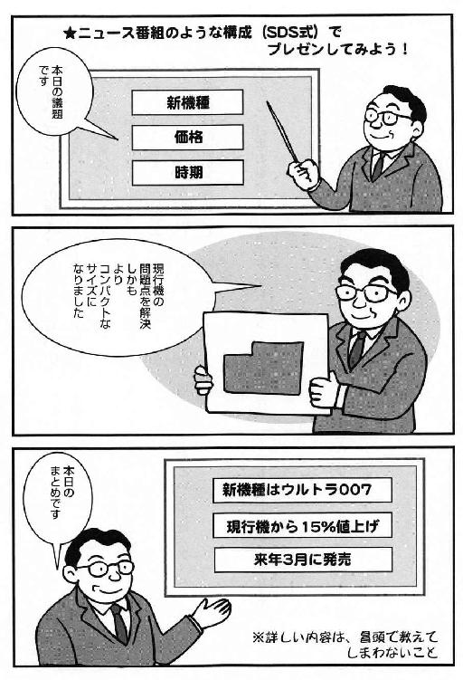
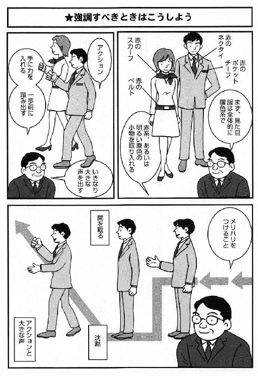
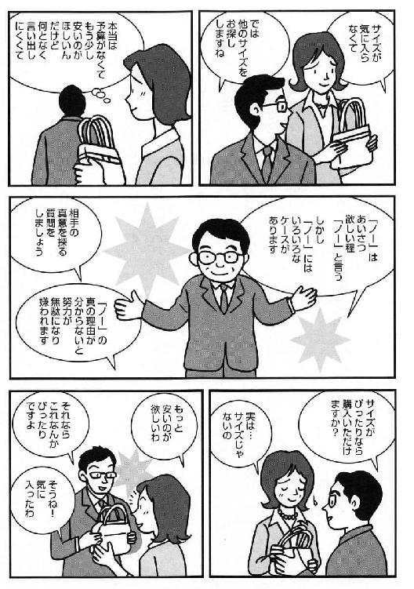
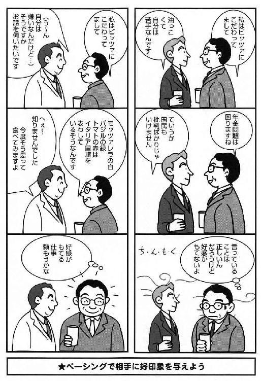

| 逆発想の10倍仕事術 「できる人」になる話し方とアイデア術 | |
| 松本 幸夫 | |
| (2016) | |
はじめに
本書は、読者の皆様に、〝普通とは異なる発想（逆発想）を身につけた、仕事が１０倍「できる人」〟に最速でなっていただこう、と工夫を凝らして執筆されています。たとえば、
・プレゼンの際、うるさい場所では小声で話しだすほうがいい
・断られたら感謝すると、うまくいく
・マイナス要素もそえて話すほうが、信用され、説得力が出る
・口ベタでも、いやむしろ口ベタのほうが話し上手になれる
・プレゼン時にあえて視覚要素を排除することを心がける
・価格交渉をされたら、価格では応じないこと
・正しいことを主張するよりペーシングが大事（「嫌われる有能」は無能に等しい）
・吐く息を長くすると集中力が高まる
・アイデアを限界までたくさん出すと、むしろアイデアのネタはさらに出始める
・ある行動に疲れたら、違う行動をすることで積極的に休むことができる
――といった本書でご紹介する膨大な数のテクニックが、あなたの能力と魅力を１０倍に引き出すと、私は確信しています。
私はいろいろな企業で、年に二〇〇回以上の人材育成研修をしています。
聞き手の多くはリーダー、中堅社員と呼ばれるような方々なのですが、時として入社して数年以内の方々を受けもつこともあります。
実は、ＩＴなどの実務スキルは、リーダークラスの方々よりもむしろ、若手のほうが高いことが多いのです。能力自体は、あるのです。
では、そうした能力が社内外で十分に生かしきれているかというと、残念ですが中堅社員の方々に関してすら〝ノー〟と言わざるを得ないケースがほとんどです。
なぜでしょうか？
大きな理由に、「能力」というのは、「他人が認める」ことによって初めて生きるものだ、ということがあります。この辺に関しては、リーダークラス、上司の方々は概してうまいのです。だからこそリーダーであり、上司たり得ているわけです。
そして「能力」を開花させるには、冒頭に掲げたような、普通とは異なる、ある種の逆転した発想（逆発想）にもとづく裏ワザ的な仕事術への開眼も必要となるのです。
私が言いたいのは、発想を変え、まずは、もっと自分の実力、良さというものを認めてもらう努力をしたほうがいい、ということです。
「エッ、ＴＯＥＩＣで九〇〇点だったの？」
「へえ～、中小企業診断士でしたか」
というように、まったくアピールしないがために、才能が埋もれてしまっている例が社会には多いからです。
では、どうやったら、嫌味なく、あなたの実力を認めてもらえるのでしょうか？
それには、まず、プレゼンテーション能力を高めることにつきます。
プレゼン上手は認められて、「できる人」と思われます（もちろん、ある程度の実力を身につけた上でのことではありますが）。
逆に、プレゼン下手ですと、企画も通らず、やりたいことも実現できず、人望も得られず、ただただ悔しい思いが続く下積みの日々が続くこととなります。
本書では、こうしたプレゼンスキルの磨き方から、話に入っていきます。
そして、さらに「対外的」な営業、取り引きの場となりますと、一対多人数のことが多いプレゼンから、「交渉」へとアピールの形態が変わっていきます。
基本的な相互満足の形であるＷＩＮ・ＷＩＮ型をはじめとして、ぜひ押さえておくべきノウハウにしぼりこんで本書では紹介をしています。
そして、プレゼンや交渉の能力がつけばそれでいいのかというと、まだ不十分です。
どんなにプレゼン能力があっても、交渉力が身についたとしても、これは特に社内ではそうでしょうが、「嫌われたらすべてオシマイ」ということも往々にしてあります。
つまり、
「彼女の言うことはわかるけど、日頃の言動がちょっとね」
「君の言いたいことはわかった、でもやらない」
ということになってしまうわけです。
これは、社内交渉でも、営業でも、すべて同じでしょう。人は嫌いな人とは基本的に接したくないし、関わりたくもないのです。
そこで、プレゼン能力や交渉力を生かすためにも、「コミュニケーション能力」を高めることを忘れてはいけません。
好かれる人になるために、今までのコミュニケーションの見直しをご提案します。
ここまできたら、あとは仲間と「差」をつけるために
★アイデアの作り方
★タイムマネジメント
について、普通の人が実践してない裏ワザを身につけていくべきです。
今回は、一〇〇冊の著書を出してきた私の発想術（アイデアの思いつき方）について、深く分析を行ない、誰でもマネできるノウハウをすべて初公開しています。
できる人というのは、そもそも、発想法が違うのだということに気付いて下さい。
その後で、私の信条であり、私の配信するメルマガのテーマにもなっている「タイム・イズ・ライフ」ということについてもページをさいています。人生イコール時間です。よりよく生きるためのタイムマネジメントのスキルについて、その重要部分をお伝えします。
あたりまえですが、失った時間は二度と戻りません。また、時間は「貯める」ことができない非常に貴重なものでもあります。
この辺は、タイム・イズ・マネーとは言うものの、お金と時間との違いでしょう。
お金は取りもどすこともできますし、貯めていってまとめて使うこともできます。
しかし、時は二度と戻りません。また、人生は有限です。
「時は命なり、人生そのものなり」――そこに気付いた時にあなたの人生はガラリと変わっていくのです。
そのタイムマネジメントを実践していくためのスキルとして、「手帳」術についても触れています。実際にツールを使うこと、視覚化することは欠かせないテクニックになります。
ということで、本書でご紹介するポイントをすべて見直して、実践していったなら、イヤでも仕事の「できる人」となれるエッセンスが身に付きます。
つまり、あなたは、本書の一読（二時間程度）で、「できる人」へと変身できるわけです。 あとは、あなたの実行があるだけです。
その時、もうあなたは、逆発想を身につけた、１０倍「できる人」の仲間に入りつつありますから、安心して下さい。
そして折に触れて、何度でも本書を読み返していただければ幸いです。自分のスキルが上がった時点でこそ、また本書から改めて得られる果実があるはずです。
著者記す
第一部 プレゼンテーションの極意
プレゼンテーションの極意（Ⅰ）
◇プレゼン下手は損をする
あなたは、プレゼンテーションと聞くと、どのようなことをイメージするでしょうか？
かなり前は、広告代理店のような一部業界でしか用いられていなかった「プレゼン」という語は、もう一般化しています。
私は長年、プレゼンテーションの指導を行なっていますが、十数年前は視覚化の重要性が説かれ、「ビジュアル・プレゼンテーション」ということが強調されていました。
今は視覚化に関しては常識ですので、あえてビジュアル・プレゼンとは言わず、もしも何か言葉を付けるとしたら「デジタル・プレゼン」ということが言われます。特に、パワーポイントの使用を主とした効果的なプレゼンテーションは、これからの〝常識〟ですので、後に詳しく述べるノウハウをぜひ応用してプレゼン資料を作って下さい。
まず初めにおさえておきたいのは、「私、プレゼンって下手なのよね」「僕はプレゼンは嫌いなんだよ」といったことは、もう許されないということです。
ここでいうプレゼンとは、何も大々的に大人数を前に行なうようなものばかりを指しません。
自分の意思を伝えるのであれば、それは仮に視覚器材などを用いなかったとしても、プレゼンテーションと呼んでおかしくないのです。
たとえば会議で自分の意思を発表すること、研修会の中で発言すること、小集団での活動や商品説明など――おそらく意識していなくても、かなりの人は、仕事の中でプレゼンテーションをしているはずです。
では、あなたは常に、満足のいく結果を出せていますか？
堂々と、自信のあるプレゼンができているでしょうか？
知っておくべきは、「プレゼン下手は損をする」ということです。
せっかくのいい企画も、プレゼンテーションが上手にできませんと、その意図するところは一〇〇のうち五〇とか六〇しか伝わらないこともあります。
あるいは取引先でも、他社よりもサービスカも商品力もあったとしても、プレゼン下手のためにその良さが伝わりきらないとしたら、どうなるでしょうか。
中身はいいにも関わらず、社内企画は他のメンバーのほうが認められる。商品も、他社のものが選択されてしまう。
これでは、あなたは「やっていられない」のではありませんか？
そう、プレゼンが上手にできませんと、このような〝被害〟を、日常的にこうむることとなるのです。
あなた自身の能力、パフォーマンスに関しても同じです。ある程度実力があって、自信があったとしても、そのことが周囲に伝わらないのでは、やはり実力がないのと似てしまいます。
もちろん実力以上に評価されてしまったら、あとで困ることはあります。しかし、一〇〇ある実力を半分くらいに思われてしまっては、やはり嫌な思いをするのはあなたです。
実は私は、自覚したのは小学生の頃ですが、極度のあがり症でした。
ですので、授業中に答えがわかっても手を挙げられず（指名されても大勢の前で話せないので）、他の生徒が答えて認められるのを何十回と経験して、イヤな思いをしてきました。
小学校３年の時、初恋の人に相手は「松ちゃん大好き」というのに、自分からは堂々と言えなくて、結局他の男の子に彼女を〝奪われ〟てフラれてしまいイヤな思いをしたり......。
これは成長してもそのままで、会議の発言や異性への告白などを通じて、やはり同じようなイヤなことは続きました。
私は発奮して、あがり症を克服して、堂々と人前で話のできる自分になると決めました。そうしないと、長い人生やり切れませんし、損でしょう。
途中、失敗もありましたが、私は日本中の話し方教室をまわり、ありとあらゆるあがり克服本を読み、武道やヨガ、瞑想でメンタル面の強化にも取り組み、やがてあがり症を克服して、堂々とプレゼンテーションできるようになりました。
今、プレゼンテーションの授業をしているのも驚きです。そして、平日は、三〇人前後の受講者を前にして研修をしています。時には一〇〇人、二〇〇人の聴衆を前に話すこともありますが、自分でいうのもおかしいですが、ダイナミックに、インパクトのあるプレゼンができています。
おそらく、以前の私ほどにひどい〝あがり症〟の人はそういないと思います。
ですので、私がプレゼンのツボ、コツをお伝えしたなら、あなたは必ずプロ級のプレゼンターになれます。少なくともセミプロのクラスには必ずなれますので安心して下さい。
自分がプレゼン下手で、あがり症だったことは、今は大きなメリットだったと考えています。
なぜなら、そのおかげで、今はあまり上手ではない人、あがり症で困っている人のことを、とてもよく理解できるからです。
おそらく、今本書を読まれている方は、プロ級のプレゼンターではなくて、「一から学び直したい」「基本をマスターしたい」「プレゼンが苦手」「プレゼンが下手で困っている」といった方が多いでしょう。すでにバリバリできる方は、あまりこのような本を手にしないものですので。
でも、安心してください。私が一〇年以上かけて身につけた「コツ」をこれからこっそり（？）あなただけにお伝えします。
あなたは最短の時間で、プレゼンカが増して、満足のいく成果が出せるようになります。
プレゼンカがあれば、社内なら企画が通りやすくなりますし、発言力も増して、実力を認められるようになります。社外なら、当然、営業成績が上がり、信頼されるようになり人脈は増えて、成功できるのです。
では、これから、「一から出直し」のつもりで、白紙の状態で先入観なく、読み進めていってください。
◇まず変えるべき三大ポイント
効果的なプレゼンテーションをするためには、次の三つをポイントとして押さえましょう。
①プレゼンの内容、構成
②プレゼン時の服装、外見
③プレゼン時の態度
まあ、①の内容、構成というのはおわかりでしょう。
いきなりぶっつけ本番とはいきませんから、事前に構成を組んでおくべきなのは言うまでもありません。
結論から先に言うのは多くの場合、常識です。しかし、「予算を一五〇万円増やして欲しい」とか、「新機種ＡＢＣの導入」などと、最初からあまり細かく提示しますと、余計な抵抗にあうことがあります。
「一五〇万も増やすのか！」とか「今の機種でいいのに」などと、プレゼンの前に思われてしまっては、うまくいかないことになります。今の例であれば、「予算どりについて」とか「新機種に関して」くらいの言い方にとどめる必要があります。
このあたりの、プレゼン構成については、基本から応用までじっくり他の項（二五ページ～）で触れましょう。
ここでは、他の二つについて、変えるべきなのだということを知っておいて欲しいのです。
まず、②のプレゼン時の服装、外見についてです。
プレゼンテーションは、中身が大切だから、「外見は関係ない」「服装とプレゼンは直接かかわらないわ」という人、いますか？ もちろん、外見とプレゼンの中身そのものは、直接つながってはいません。
しかし、プレゼンテーションの際は、中身だけでなく、「プレゼンター」という人間も同時に見られて、判断されています。もしも政治家や、自営業、外資系の一部等で、服装がかなり自由にコーディネートできる立場の人であれば、専門家に相談して外見を戦略的に変えていくのもいいでしょう。
よくアメリカの大統領がやるように、ヤル気を示すために赤いネクタイに紺のブレザーを身につける、といった類です。
ただ、多くの方は、業界、業種の「常識的な服装」の範囲を出られません。また、出てしまいますと、悪い意味で目立ってしまいます。
私の場合、研修講師という仕事柄、ある程度目立つことが必要とされることがあります。ですので、その業界の常識を外したり、外すことが許される立場にもあります。
しかし、カラーのワイシャツはダメ、派手な原色のネクタイは不可、という業種はまだ多くあります。
私は黄色が好きなので、黄色のネクタイも多く持っています。が、それが不適切な場所もあるものです。
ここで私が言いたいのは、プレゼンテーションの際に「外見、服装で、目立つこと」ではありません。まったく逆で、清潔で、さわやかな身だしなみ、そして、目立たないことを心がけて欲しいのです。
周囲とまったく違和感なく、溶けこんでしまえるような――「あの人は私たちと同類」「彼女は仲間」と思われるような服装、外見を心がけることです。
もちろん、カカトのすりへった貧相な靴や、手入れのされていない頭髪、ヨレヨレのスーツ、汚れたワイシャツ等は論外です。避けるべきなのは言うまでもありません。
「服装、外見が大切」とは、あくまでも「聴衆と合わせることが大切」という意味で言っています。聴衆と〝服装の常識〟を合わせて、プレゼンの初めから「何だあいつは」などと思われないことに、まず注意を払いましょう。
③の態度について触れます。
もしもプレゼン本体を上手に終えたとします。しかし、終わったあとにホッとして、ペロっと舌を出したり、照れた笑いをして、頭をかくような仕草をしたらどうなるでしょうか？
おそらく、大きく〝減点〟ということにもなりかねません。
それはプレゼンの途中であったとしても同じです。仮にキーの操作をミスして、スクリーン上に別のスライドが映されたとします。「いけない！」と、あわてたり、オロオロしますと、それはプレゼンの中身ではないのですが、プレゼンターに対しての信用はそこでガクンと下がってしまうでしょう。
つまり、プレゼンターというのは「態度」までも考えていないと、一流にはなれません。一流とは言わずとも、ちょっとした態度が、減点材料となってしまうのです。
ということで、プレゼンテーションにおいては、中身だけしっかりしていたらいいのでないことがおわかりいただけましたか。
まずは、誰でもチェックできる外見や態度を堂々とすることなどが良いプレゼンには欠かせないことを知って下さい。そのあとに、細かなスキルを磨いていくのです。
◇代表的な構成を知っておこう
では、どのような構成でプレゼンをしますと、「わかりやすく」「説得力のある」内容となるのでしょうか？
まずはプレゼンには「本体」――いわゆるボディにあたる部分があります。
これは、プレゼンテーションの中でも、時間を一番かけるべき、テーマそのものを訴えかける部分です。
最も一般的で、「できる人」になるために覚えておきたい構成は、
●序論
●本論
●結論
という構成です。
序論は、背景説明や、状況、プレゼンの主旨といった、とっかかりのパートになります。
本論でないとはいえ、ここは決しておろそかにはできない部分です。
特に、出だしの「第一印象」が大切です。ここで大きなミスをしますと、なかなか後半に取り戻すのがたいへんです。
ズーニンという学者は、〝「最初の四分間」がコミュニケーションを左右する〟という主旨のことを述べています。まさにその通りで、出だしは特に念入りにリハーサルをすべき部分でもあります。
そして、本論に入って、最後のしめくくりは、そう長くはなくていいので、ビシッと決める結論のパートとなります。
これはＩＢＣ方式とも言うことができます。つまり、
●イントロ（Ｉｎｔｏｒｏ） Ｉ
●ボディ（Ｂｏｄｙ） Ｂ
●コンクルージョン（Ｃｏｎｃｌｕｓｉｏｎ） Ｃ
です。
もう一つ、時間をかけて展開を説明していく昔話方式もあります。
これは、ビジネスの報告などには〝結論が先にこない〟ために不向きです。が、時と場合によっては用いることができます。
どちらかというと、〝スピーチ〟の中の〝エピソード〟に適している方式です。
たとえば、桃太郎でも、浦島太郎でもいいのですが、昔話では始まりはどうなっているか想い出してみて下さい。
そうです。
●昔々 （いつ）
●ある所に （どこで）
●おじいさんと （誰が）
おばあさんが
●おじいさんは （何を）
山へ柴刈りに......
というような構成ですね。
これは、短いスピーチで、パッとエピソードから入る展開になりますから、相手を瞬時にひきつけることのできる構成です。エピソード・アプローチとも言います。
日常の話でも、
「三年前にニューヨークの地下鉄に乗っていたんだ。すると突然真っ暗になって......」といった話の始まりですと、「次にどうなるんだろう」と相手は集中してくれるものです。
あるいは結婚式のスピーチであっても、
「新郎の山田さんは、高校時代にグァムに行った時に、人を助けたことがあるんです。それは......」
とやっていきますと、やはり「どんなことがあったのかな」と思わせることができるのです。
短いスピーチ、プレゼンでは、ＣＥＲ方式というのも有効です。これは、
●結論（Ｃｏｎｓｌｕｓｉｏｎ） Ｃ
●具体例（Ｅｘａｍｐｌｅ） Ｅ
●理由（Ｒｅａｓｏｎ） Ｒ
の順で話を進めていくやり方です。
たとえば、訓辞や朝礼のように相手に行動を促すような話の時に、長いプレゼンの構成に向くＩＢＣ方式や先の昔話方式では、やや冗長になってしまいます。
そこで、
Ｃ 皆さん、コマメに水分を補給しましょう。
特にお茶は体外に水分を排出させやすくするので、水を飲みましょう。
Ｅ 実は、私共の課内で、先週熱中症で病院に運ばれた者が出ました。
これも、水分の補給を怠ったためとのことです。
Ｒ なぜなら、適度な水分補給、具体的には１日に２リットル以上を補給しませんと、夏は室内にいても熱中症になる危険性が高いということです。データがあります。
３日前の日本経済新聞の社会面に出ておりました。
この中の「実は」とか「なぜなら」というのは、話の展開を変える際のキーワード、接続の言葉となります。
これを「橋わたし」、つまり次のパートに移るためのブリッジ・ワードという言い方をします。
ここをはっきりと強調して言うことで、
「これから具体例を言うんだわ」
「このあとは理由かな」
といったことが、はっきりとわかるのです。
ブリッジ・ワードなしに、突然次のパートには行かないようにしましょう。
（１）序論・本論・結論の順で話すＩＢＣ方式（ビジネス向き）
（２）いつ・どこで・誰が・何をという流れで話す昔話方式（スピーチ向き）
（３）結論・具体例・理由の順で話すＣＥＲ方式（短いプレゼンやスピーチ向き）
――この三つを状況、場面によって使い分けていくだけでも、あなたのスピーチ、プレゼンはとても「わかりやすい」「説得力がある」という評価が得られるのです。
次に本論、ボディの部分の構成をさらに詳しく見ていきます。ここでは二つの流れを紹介しましょう。
◇本論はこの二つの流れを使う
本論は、
①問題解決アプローチ型
②ＳＤＳ方式
この二つの構成でまとめていきましょう。
①は、次のようなプレゼンの流れになります。
●問題
●弊害（原因）
●解決策
●成果
という流れです。二番目には、弊害だけを出す場合と、原因だけを出す場合、あるいは両方入れることもあります。
流れとしては、問題解決のアプローチにのっとって、自分の案を前向きに話しかけるような流れとなります。
たとえば、
●問題：紙の資料、データが多いために営業活動に専念できない
●弊害：紙の保存、管理にかかる時間が多く営業時間が圧迫されてしまっている
●解決策：電子ファイリングシステム導入
●成果：営業活動に専念できて、売上げ増加につながる
――というような骨組みのもとに、データ、証人、証拠といったものを盛り込みながら、プレゼンテーションを行なっていくわけです。
特に、問題提起をもとにしてストーリーが組み立てられていきますので、この大前提は崩されないようにしておきます。
今の例なら、「ウチは、そもそもそんなに紙の資料は多くないんじゃないか？」などという問題そのものにつながる質問で、この前提を崩されるとすべてが台無し、ということになりかねませんので、十分なデータ、裏付けをもとにキチンと答えられるよう準備しておくのは言うまでもありません。
次に、②のＳＤＳ方式についてです。
これは、私のプレゼンの師匠である箱田忠昭先生から二〇年前に教わった構成です。わかりやすいので、ここにあげておきます。
Ｓｕｍｍａｒｙ Ｓ（全体）
Ｄｅｔａｉｌｓ Ｄ（詳細）
Ｓｕｍｍａｒｙ Ｓ（全体）
この形でプレゼンを組み立てるわけです。
わかりやすい例ですと、テレビのニュース番組が今は、ほとんどこの「ＳＤＳ方式」で放映されています。
初めのＳ、つまりニュースの全体は、その日の主なニュース項目をパネルなどを使って、パッパッと見せます。中には、何時何分ころからこのニュース、というように進行をサマライズしてくれることもあります。わかりやすいですね。
そしてＤ、これは実際の個々のニュースになります。ここは当然、細かく、時間もかけます。ニュース本体なわけです。
ここでニュース番組は終わりません。
最後に、今日の主なニュース項目でございます、とおさらいまでしてくれます。
このＳＤＳの流れですと、記憶に残りやすいですし、中身も全体がわかって、つかみやすくなります。ニュース同様、この流れにのっとって、あなたのプレゼンを組み立てていくわけです。
ＳＤＳの注意点は、初めのＳは、あくまでも全体のポイント、項目のみに絞ることです。
●価格
●時期
●新機種
というくらいにとどめます。
詳しく言ってしまいますと、その時点でいらぬ反発を招くことになったり、あるいは、「もう聞かなくていいや」となったりしかねないからです。
ですので
●十五％値上げの件
●来月３日から導入
●新機種００７の導入
ということは、初めのＳでは言わないのです。
もしも言うなら、それはＳＤＳの最後のＳの時に言ってください。
そこでなら、もうすでにＤの本体を詳しく聞いた後ですので、いらぬ反発などは出ないのです。
プレゼンの本体は、
①問題解決アプローチ型
②ＳＤＳ方式
の二つを使いこなしていきましょう。
このような構成があらかじめしっかりできてからプレゼンをしますと、「あの人のプレゼンはロジカル」「彼女って、論理的」と言われるものです。

◇では、プレゼンの導入はどうしたらいい？
アメリカでは、「スタートＷｉｔｈジョーキング」と言って、気のきいた一言からスピーチに入るのが常識化しています。
その一言が特に「ウケる」ことがなかったとしても、「この人は、ユーモアのセンスがある」ということで、一目おかれます。
むしろ、ジョークから話に入るのが慣習なので、いきなり本題というのは「アメリカ人」の聴衆には不適切と言ってもいいのです。
しかし、日本の場合は、ジョークから入るというのには、いくつも危険なことがあります。
①不謹慎だと思われる
いきなりジョークで入りますと、「あの人は不マジメ」「こんな場で不謹慎」ということになってしまい、プレゼン、スピーチの中身以前に拒絶されかねません。
②ウケない時に自分があせってしまう
仮に、不謹慎と思われなかったとします。しかし、もしもそのジョークがまったくウケないとすると、一番困るのは自分です。
「どうしよう？」
「困ったわ......」
というあせりは、その後の話の中身に大きく影響しかねません。
自分があせるくらいなら、むしろジョークなしのほうがはるかに良いのです。とはいうものの、「ジョークで盛り上がる」という快感は話し手にはあるもので、これは一度味わうとなかなかやめられないものでもありますが。
③万一中身が今イチだと、ジョークはマイナス評価になる
ジョークを言っても不謹慎と思われず、しかもかなりそのジョークがウケた、としましょう。
しかし、肝心のプレゼン、スピーチの本体の中身がイマイチだったとします。
さあこの場合、あなたの評価はどうなるでしょうか？
当然、ジョークがウケればウケるほどに、中身もそれに見合って大きく賛同されるとか、感心させるものでないとなりません。
ですので、ジョークがウケて、中身イマイチというのは最悪のパターンなのだと思っておいて下さい。
では、どのような導入が好ましいのか、いくつかのヒントをお伝えします。
自分なりに〝使えるもの〟を選んで、状況に合わせて使ってみて下さい。
①地一兀の話題・業界の話題から入る
これは、相手と自分は〝仲間〟という、共感意識をもってもらうのに役立つ手法です。
私は、東京を離れて講演会を行なう時には、必ず一つ二つ、「地元の話題」を用意しておいて、そこから導入に入っていきます。
当然、銀行業界での仕事なら銀行の、コンピュータの会社ならコンピュータの、というように相手に合わせた〝話題〟から入っていくわけです。
②よく知られたニュースから入っていく
当日の新聞に載っているようなテーマなら、誰もが聞きやすいものです。
ただし、中身は「明るい」モノであることが条件です。いい気分でスタートできるからです。
逆に、いくら知られたニュースでも、相手がイヤな気分になりかねないものは避けるのが良いのです。
見習いのインストラクターが、「今日はイギリスでテロがありましたね」とか「台風で被害がでているようで......」などと言って導入に入ったことがあります。私はいつもは温厚なほうですが、この時は少々怒ってたしなめました。
〝聴き手の聴きたい話〟から入りなさい、と。ですので、「明るいテーマ」ということで、ニュースから入るというのはいい手です。
③会場に行くまでのエピソードから入る
これは誰でも〝咄嗟〟にできることですので覚えておいて下さい。
特に地元や業界のネタを仕入れていなくても、あるいはニュースにとり立てて明るいことがなくても、このやり方は使えます。
メリットは、つい直前のことですので、記憶が新しいために話しやすいという点です。
「先ほど、２Ｆの喫茶店に入ったら、ちょっとした騒ぎがありました。それは......」
「裏のスーパーの入り口に、猫が２匹いまして......」
というような導入は、「何が始まるんだろう？」「何の話かしら？」と、聴き役を集中させるという大きなメリットもあるのです。
④問いかけから入る
導入部で質問から入るというのは、対話型、双方向のコミュニケーションには役立つやり方です。
質問されますと、当然それについて聞き手が「考える」ことになりますので、一方通行の情報伝達とはならなくてすみます。
場合によって許される状況なら、「佐藤さんはどう思いますか？」「竹下さんのご意見は？」というように指名しますと、場はさらに盛り上がります。
状況によっては指名できないこともあります。その時には、全体に質問を投げかけて、答えを自分で言ってしまうというやり方もできます。自問自答方式で、これも導入には無難なやり方でしょう。
⑤意表をつくスタート
「エッ？」と思わせるスタートというのも、場合によっては〝アリ〟です。
知人のコンサルタントがアメリカで研修を受けた際に、無言でインストラクターが出てきて、大きな鏡にバスケットボールをぶつけて、ガシャンと鏡が割れるという形で研修が始まったそうです。
もちろん、会場はシーンとして「何事が始まるのだろう」と皆が緊張したと言います。
そのあとに
「皆さん、自分の思いこみ、自分のもっているカラを破りましょう」ということが言われて、研修がスタートしたというのです。
なるほど、鏡というのは自分の思いこみであり、それを壊すことから始めましょうというわけです。
が、それを細かく言わずに、意表をつく形で始めて、相手を集中させたわけです。
⑥話せる場を設けてくれたお礼をいう
「本日はお招きいただき、ありがとうございました」
「機会を与えていただき、感謝しております」
というように、感謝から入る導入も、聴き手にとっては良いのです。ありがとうと言われたら、皆いい気分になりますね。
それから話に入っていくのは良い進め方になるわけです。
⑦要約をまとめて見せる
これは、先のＳＤＳの最初のＳにあたるものです。全体の〝目次〟を示しておくようなことと思って下さい。
視覚物を用いて、「本日のアジェンダ（議題）です」というように、全体をパッと見せておくのは、聴き手にとってわかりやすく、親切なことです。
◇五つの説得する話法でパワーアップ
では、ここから、〝この五つの話法を用いると、さらに話の説得力が増す〟という手法を、「５大ルール」としてお伝えしていきましょう。
①両面提示をする
②断定表現を用いる
③大切なポイントはくり返し伝える
④大切なポイントは強く大きく言う
⑤数字を比較して提示する
では、一つずつ見ていきましょう。
①両面提示をする
商品説明のプレゼンなら、商品の良さばかりを強調するのを片面提示といいます。
「デザインがいいですよ」
「価格もグッとお安くなっています」
「アフターサービスも万全です」
「他社よりも長持ちします」
というように、商品のメリットばかりを言われるとどうなるでしょうか？
「顧客心理」としては〝そんなにイイコトばかりなの？〟、〝どこかに嘘があるのでは......〟ということになりかねません。
お見合いのプロフィールのようなもので、どんな人でも容姿が良く、家柄も良く、学歴も良く、仕事も......等すべていいのはかえって怪しく思われてしまうものです。
上手なプレゼンターは、必ずマイナス面も併せて話します。といっても、プラス５個に対してマイナスは１つくらいでいいのです。
このマイナスにもあえて触れることが、両面提示になっていて、これですと、「そんなウマイことばかりないよ」という人も納得させることができるのです。
今の例なら、
「ただし、その分、納期は遅くなります」
「サイズのみ、２種類しかないことは、もしかしたらマイナスでしょう」
というように言うことにより、「このプレゼンターは正直だ」と思われて、納得してもらえるのです。
②断定表現を用いる
〝必ず〟〝絶対〟〝私は〟をつけて、断定的に言い切ってしまうことで、あなたの並々ならぬ自信を示すことができるのです。
しかも、その自信は周囲を動かしていくことになります。
「たぶん、郵政は民営化できるとは思うのですが......エー、現実的には......」などと言っていると、その政策は自信ナシと思われて信用してもらえません。小泉元総理のように、
「必ず、郵政は民営化します！」
と短く言い切ってしまうと、自信があるなと周囲に思われ、支持されるものです。
「思います」「考えます」は、正しくは自分の意見なので、悪くはありません。
しかし、あまり乱発しますと、「あまり自信がないのでは」と思われてしまいがちなので、使いすぎないようにしましょう。
第一ステップとしては、「思います」を極力使わないように話す〝クセ〟をつけます。
「これより、私のプレゼンテーションをさせていただきたいと思います」とせずに、「プレゼンテーションをいたします」くらいにしてみて下さい。
「たぶん売り上げ増、一五％は可能だと考えております」などと言わずに、時には、「絶対、売り上げは二〇％のびます！」と強調して文を終えてしまうよう心がけて下さい。
この断定表現を用いれば、必ずあなたのプレゼンは賛同者ばかりになりますよ。
③大切なポイントはくり返し伝える
これは〝コマーシャル効果〟と言ってもいいでしょう。
「１３」というのがマジックナンバーで、コマーシャルを１３週続けて流すと、その商品は視聴者の潜在意識にインプットされる、ということです。
あるいは、同じ内容も１３回続けて聞くと、記憶に定着するとも言われます。
ですので、大切なメッセージ、覚えて欲しい機能や、商品のメリット、プレゼンのポイント等は〝くり返し伝える〟ように心がけて下さい。
さらに、何らかのアイデアがあれば、そのアイデアに「名前をつけて」くり返すのが有効です。
特に、聴き手にとってメリットがあることは、いくらくり返しても良いのです。
「経済的です」「オトクです」「負担が少なくてすみます」
というように、言い方を変えて何度でもくり返してみて下さい。
④大切なポイントは強く大きく言う
「大きな声」というのは、それだけでもあなたの自信を相手に伝えるものです。
「何であの人って、あんなに営業成績がいいのかしら」という人が、実は商品知識ではなくて、声の大きさで自信を示したため、というのが売れている理由ということさえあると思って下さい。たかが声の大きさひとつで――とバカにしてはなりません。
なお、話の間中ずっと大きな声では、かえっていけません。
どこが強調ポイントなのか、かえってわかりにくくなるからです。
私がプレゼンの指導をしていますと、アマチュアは「単調」「一本調子」なことに気付きます。
小さな声の人は小さな声のまま、大きい人は大きいままで、始めから終わりまで話すのです。
そうではなくて、強調ポイントのみ声を大きくするようにメリハリをつけましょう。
また、裏ワザで、ことさらに大きな声の出せない人にお勧めのやり方があります。
それは、強調したいポイントの前で、あえて声を小さ目に出すことです。
そのあとに、少しだけ大きく声を出しますと、その落差でかなり大きな声に聞こえるものです。
私の経験ですが、六、七年前に「落語とプレゼン」をからめたテーマで、本を書きました。
落語の研究のために、五、六回新宿の末広亭で寄席に行き、落語を楽しみながら〝コツ〟をつかむべく努力しました。
たまたま、寄席の近くで道路工事をしていて、会場に工事の騒音がかなり入ってしまい、ウルサイ時がありました。
そこで、前半に登場した若手は、一人残らず「工事の音に負けない大きな声」でずっと話していました。
ところが、後半の名人クラスは、全員が、始めは小さな声で話します。
本当に聞こえないくらいの声で、二〇〇人の前で話しています。仕方がないので、全員がダンボの耳になって集中して聴かざるを得ません。
工事の音と人の声は質が違うので、面白いもので、何十秒か集中していると聴き分けられるようになります。
そのあと、突然、大声で「オーイ、熊さん！」などと叫ぶのです。
これで聴衆は一五分ほど、その名人の噺に引きこまれてしまうのです。
もともと名人クラスは高齢の人が多いので、体力まかせに大声は出しません。しかし、その前を「小さな声」にすることで、その後で少し大きくしても「かなりの大声に聞こえる」のです。
⑤数字を比較して提示する
説得力がある人は、スピーチでもプレゼンでも巧みに数字を用います。
「かなり」というよりも「八七％」、「少し」というより「一ニ％」というように端数がある数字のほうが、真実に近い〝感じ〟になるのはおわかりでしょう。
数字を用いる際に、欠かしてはいけないポイントがあります。
何だかおわかりでしょうか？
それは必ず「比較して数字を出す」ということです。これによって、数字はさらに「わかりやすく」「効果的」になるのです。
私共は断トツの業界一位です。（×）
私共はシェア四五％で業界一位です。（△）
私共はシェア四五％。二位以下は一〇％以下がひしめいており、断トツの一位です。（○）
ということになります。
これは何もプレゼンの時ばかりでなく、いつでも数字を比較して示すように習慣づけてしまいましょう。
「彼女、八九点で２位。でも１位が九一点で、大差はつかなかったらしいよ。実力はほぼ同じと言っていいよね」
「彼、三時間半で走ったから立派だよね。平均は陸上部で四時間一五分台だから、プロと言っていいよね」
というように、普通の会話の中でも、数字を入れて比較できるような時には、どんどん入れて示してしまいましょう。クセになれば、プレゼンでも、いつものように簡単にできるようになりますよ。
プレゼンテーションの極意（Ⅱ）
◇説得力は、アイコンタクトの力が８割
二〇年、プレゼンテーションの指導をしてきています。
もちろん、「中身」がないとプレゼンできません。が、仮にデータも準備して、中身も十分に整っていた時に、さらに〝差〟をつける要素は何だと思いますか？
別の言い方をしましょう。
「説得力のある人」というのは、どのような〝伝え方〟をしている人でしょうか？
私は伝え方のテクニックの中でどれか一つだけ選べと言われたなら、文句なく「アイコンタクト」をあげます。つまり、聴衆一人一人の「目を見る」ということです。
これは、考えてみたらすぐにわかります。
「ぜひ、採用をお願いします！」
「今日の提案、絶対の自信があります！」ということを、中空を見ながらうつろな目で口にしたらどうなるでしょうか。
「よし、こいつの案を採用しよう」
「彼女は説得力あるな」
と思われないのは、言うまでもありません。
もちろん、目を見るのは、「訴えかける時」に限らないのです。
プレゼンテーションの最中は、聴衆の反応を見なくてはなりません。
極端にいうと、「観察すること」も必要となってきます。
ですので、しっかりと目を見ていませんと、聴衆が「ちょっとおかしいな」「そうは思わない」というような反応を示した時に、見落としてしまう可能性があります。
「目は心の窓」と言ったり、「目は口ほどに物を言う」と言ったりします。
確かに、心の状態は如実に目に出ます。アイコンタクトをするのは、このような反応を見て、それに対応していく意味があるのです。
私は、少しでも聴衆の中に「納得いかないなあ」という反応が見えますと、すぐに言い方を変えたり、補足説明をしたり、別の具体例を出すということをしています。
一理三例という言葉があります。
一つの、理論・理屈を示すのには、三つの具体例をあげよ、というのです。
今のアイコンタクトの説明でも、私は
「訴えかけるには目を見ないとおかしい」
「聴衆の反応が見える」
というように、理由づけの「例」を具体的に説明しています。
これがただ「アイコンタクトしましょう」というだけですと、「なるほど」とは思ってもらえないわけです。
そして、アイコンタクトをすることの三つ目のメリットがあります。
他に何か思いあたりますか？
一番大きな理由は、アイコンタクトをしっかりとすることによって、聴衆と「対話スタイル」になり、「双方向型」のコミュニケーションがとれるということです。
私は今は研修で「教える」という一方向の伝え方はほとんどしていません。必ずまず「考えてもらう」ようにしています。
一方向に「演説する」ことよりも、「対話型」で話をキャッチボールしながら進めたほうが、プレゼンは効果的になります。研修では、一方的に伝えるのと、双方向で聴衆に参加してもらうのとでは、どちらが言いたいことが伝わると思いますか？」
というようにまずは考えてもらいます。
あるいはその前に、「アイコンタクトをすると、どのようなメリットがあるでしょう？」といった土台の部分も、研修であれば、まず考えてもらいます。
プレゼンの場合は、このような「考えてもらう」ことに、多くの時間はとれません。しかし、「質問を発する」ことによって、たとえ数秒でも相手に「考えさせる」ことはできます。
「いかがでしょう」
「どう思いますか？」
とプレゼン中は全体に質問しながら話していく、というのが有効な話法です。
「山本さんのご意見は？」
「田中さんはどうでしょうか？」
と聴衆に尋ねる時、当然、床や天井を見ませんね。しっかりと、相手の目を見るはずです。
そして、「聴衆の一人一人にアイコンタクトをして語る」ことをくり返していますと、〝会話をしているような自然な感じ〟で、プレゼンテーションを進めていけます。
もちろん、大人数の前でしだら、声のメリハリや大きなジェスチャー、長目に間をとるというように１対１の会話そのものでは見られないスキルも用いる必要はあります。
しかし、基本の話し方としては、対話をしたらいいのです。
目の合った一人の人に、「あなたと会話を楽しんでいます」というつもりで、アイコンタクトをして話しかけていきましょう。
ただし、「目が合ってすぐ」に他の人に視線を動かしてしまいますと、キョロキョロとした落ち着きのない印象となりがちです。
「これからアイコンタクトの重要性について話します」
「皆さん、おはようございます」
というような「一つの文章」の間、「。」がくるまでの間は、一人の人から目を離さないつもりでしっかりと見ましょう。
「ちょっと長いかなあ」「見すぎかしら」というくらいで話してみて、実は丁度良いアイコンタクトの長さになります。
では、次に「どのように視線を動かしたらいいのか」「アイコンタクトの次の人への移動のし方」について述べていきます。
◇視線の動かし方はこうする
一人の人に語りかけるような、「対話スタイル」でいきますと、とても聴きやすいですし、何よりも聞き手が安心できます。
これに対して、「演説スタイル」とは、「エーッ、ただ今、ご紹介にあずかりました、営業企画部の松本幸夫でございます。エーッ、かえりみますれば私共の部では......」というように、全員に一度に話すようなスタイルです。
これは、アイコンタクトとは両立できない話し方です。一人一人の目を見て語りかけますと「かえりみますれば」とか「エーッ、私共の」などという言い方はできません。
逆にいうと、「演説スタイル」になっている時には、アイコンタクトがおろそかになっていると思ってよいのです。
これで、「対話スタイル」で一人一人にアイコンタクトをすることのメリットは十分につかめたのではないでしょうか。
では、その次のステップです。これは、視線をどのように動かしていくか、です。
まず、あいさつの前後からやっておくことからです。
①後列の人にアイコンタクトをする。
初めは、あなたの「声のボリューム」を決める必要があります。後列の人に届きませんと、「全員が聞こえる声」のボリュームにはなりません。
「皆さん、おはようございます！」
と第一声で、ボリュームを調整しておくことを心がけましょう。もちろん、その時、後列の人にアイコンタクトをします。
一〇〇人以上いて物理的に「一人の人」にアイコンタクトできなかったら、その「方向」の人を見るだけでいいでしょう。周囲の人は、自分にアイコンタクトをしてくれたと思って、うなずいてくれるものです。
②会場の中間くらいにいる人にアイコンタクトをする
もちろん、後方の人ばかりとアイコンタクトはできませんので、視線を次の人に移します。やりやすいのは、自分の身長のままの目線の高さでの移動で、これですと自然です。これでだいたい、前列、後列、中間の列と分けたら、中間の列の人と目線が合います。
③左右の人に視線を振り分ける
あまり前方のみを見て話しますと、堅い印象となりがちです。
そこで、左の人、右の人と、左右に視線を振り分けます。もちろん、どの方向の人とアイコンタクトをしたとしても、先のように「長目に、一つの文章の長さの間は一人を見る」ことを忘れないで下さい。
また、ゆっくりと長く見てから視線を移動させますと、自分でも落ち着いてくるのがわかるはずです。
④前列の人にアイコンタクトする
前列の人は、よくあなたのことが見えますので、初めからガンガン、アイコンタクトしなくてもよいのです。
後列の人とアイコンタクトして声の大きさを決めて、中間の列の人、左、右と視線を振り分けたあと、最後に前列の人を見るのでちょうど良いくらいです。
もちろんこのあたりは「定石」です。
将棋なら、角道をあけるとか、飛車の前の歩を動かすような「決まったやり方」なわけです。
定石は、先人の知恵のつまっているものであって、応用とか変形は、しっかり定石をマスターしたあとでのことになります。
ですので、反発している人を長く見て意見を変えさせるとか、昔のことを想い出す話であえてアイコンタクトを外すとかなってきますとこれは「応用」なのです。あくまでも、先に基本を身につけましょう。
⑤会場の四隅の人をしっかりと見る
人前に立ちますと、自分のアイコンタクトが「行き渡りにくい所」があります。一般には、最前列の両サイドや、後方です。
ですので、あえて最前列の両サイド、最後列の両サイドという会場の四隅の人にアイコンタクトしておきます。
この時に、チラッと見るだけでは不十分です。
あるいは、体は前に向けたまま、目だけでアイコンタクトするのでもまだ十分ではありません。流し目になりかねませんので。
アイコンタクトをする人のほうに、体ごと向けて、文字通り「対面」して話す、これがいいのです。
特に会場が広い時には、あえて、体ごと左の人、右の人と「対面」して左右にしっかりと向き直ることをしてみましょう。
まとめると、以下が視線の動かし方の５大ルールです。
①最後列の人とアイコンタクトする
（声のボリュームを決める）
②中間の列の人とアイコンタクトする
（自然な目の高さ）
③左右の列の人に視線を振り分ける
（視線を固定させ堅くならない）
④最前列の人にアイコンタクトする
（近いので、もともと目に触れているため）
⑤四隅の人にしっかりとアイコンタクトする
（視線が行きにくいので）
このあとは、「バランスよく」を心がけて、会場の一人一人にアイコンタクトするようにします。右利きの人は、ボールを投げるのと同じで体を左方向に向けると目線を動かしやすいのです。が、放っておくと、自分から見て左サイドの人ばかりにアイコンタクトが行きがちです。
ですので、あえてバランスを考えて、やりにくい右サイドの人にもアイコンタクトしていくことを心がけて下さい。
ニコニコして聞いてくれる人、うなずいたりメモをとっている人は、あなたの「味方」です。味方を見つけてアイコンタクトすると、特にあがり症の人などは、落ち着けますので、ぜひ「味方探し」もしてみてください。
◇強調すべき時はこうする
プレゼンテーションの中で、相手のメリットですとか、成果、解決策など強調したい所はあるものです。
ところが、アマチュアはメリハリなく、大切なところも平板にしてしまうので、あまり迫力がありません。当然、強調される所のない、単調なプレゼンとなりかねません。
プレゼンターが注意すべき点を、まずは「見た目」と「音声」の二つの面から考えてみます。
さて、あなたがプレゼンの中で、「ここはぜひとも強調したい」という点はどうしますか？
おそらく、まっ先に浮かぶのは「大きな声を出す」ということでしょう。
正解です。
一番単純ですが、効果の高いのはここぞという時に「大きな声を出す」ことです。
プロ級になると、あえて「小さな声を出す」こともあります。〝ここだけの話ですが......〟とやるわけです。
しかし、小さな声というのはあくまでも話に慣れた人のテクニックです。一般には、あまり小さな声ですと
●自信がないと思われる
●よく聞いてもらえない
●わかりにくい
●眠くなる
といったデメリットがあります。
音声面では、強調する時に声のボリュームを上げることだけ心がけて下さい。
ただ、すべてを大声で、ではありません。すべて大きな声ではウルサイですし、どこが大切なのか、かえってわかりにくくなります。まあ、小さな声でのプレゼンよりは、大きな声のほうがマシとは言えますが。
さらに、大きな声を出す「前」には、あえて「間」をとって、タメをつくります。
これはたとえば人の紹介などでも同じです。
「それでは本日の講師松本幸夫先生お願いします」と間をとらずにやると、あまりありがたみが出ません。そこで、大きな声で名前をいう前に、あえて間をとるのです。
「それでは本日の講師......（間）松本幸夫先生お願いします！」というようにして、メリハリをつけます。
これは、紹介だけではなく、強調したいポイント、覚えてもらいたいプロジェクト名等に関しても、すべて同じです。
次に、「見た目」の部分での強調の仕方をお伝えしましょう。
まずは、「力が入っている」ことが、強調していることを示すボディ・ランゲージになります。
腕をブラブラさせて力が抜けた状態で「ガンバリマス」といっても通じません。
必ず、「拳を握る」「拳を上から下に叩くようにする」「両手に力を入れて下に向けておろす」というように〝力〟が入っているのを感じさせて、初めて強調していることになります。
空手チョップで上から下におろすように力を入れるのは、古くはケネディ・チョップとして、Ｊ・Ｆ・ケネディ（元アメリカ大統領）が用いたことで有名です。
どのようなアクションでもいいのです。
拳を強く握るとか、首をうなずくように上から下に力を入れてふってみても、ガッツポーズであったとしても......。そこに「力が入っている」のがわかれば、それは強調のアクションになります。
また、立つ位置も大切です。
あまり説得したい相手との距離がありますと、なかなか説得できないものです。極端にいえば、犯人を捕まえて、「お前がやったんだろ、白状しろ！」という刑事が、２メートルも３メートルも遠くにいたら、すぐに「やっていませんよ」と言えるものです。距離を近づけて、ひざがつくぐらいにして、ようやく白状させられます。
プレゼンもこれと似ていて、人を説得したければ相手との「距離をつめる」のが鉄則です。
そこで、プレゼンテーションの場合なら、「聴衆のほうへ、一、二歩踏み出す」のが、距離をつめる具体的なアクションになります。
「この企画、ぜひお願いします」
「自信あります、よろしく！」
と言いながら、数歩前へ踏み出すこと、これだけで、あなたの自信が示せます。
もちろん、先の「力を入れる」ことを併せて行なえば、さらにあなたの自信、熱意、ヤル気が示せるのです。
さらに、赤系、原色系のネクタイをするとか、ポケットチーフ、ジャケット、ワンピース等に明るい色を入れるのも、「見た目」のヤル気を示す方法の一つです（前述のように、場の雰囲気は選びますが）。
私はアメリカの政策などはあまり好きではないのですが、大統領が紺のブレザーに赤いネクタイでヤル気を示すという単純なやり方には好感をもっています。わかりやすいですから。
ですので、身につける服装の「色」にも注意を払うということも、間接的ですが「見た目」の改善に通じると知って下さい。
これらをすべて行ないますと、プレゼンがまったく同じ中身であったとしても、ずっと「強調度」「アピール度」は増すのです。

つまり、大きな声で、前へ数歩出ながら、主に手に力を込めます。さらに、暖色系のカラーの入った服装で熱意を伝えます。
強調したい所は、ぜひこのやり方で効果を出して下さい。
◇視覚物を使わない工夫をする
「視覚化せよ」とか「ビジュアル・プレゼンテーションを心がけよ」というのは、一昔前まではよく言われたものです。
確かに、口でペラペラと数字を並べたてるよりは、サッとグラフを見せたほうがインパクトがありますし、わかりやすいものです。
ただ、最近は「視覚化のメリット」よりも、むしろ「デメリット」のほうが目につくようになってきました。
私がこのことを主張したのは、六、七年も前だったのですが、その時はまだ時期が早すぎたようでした。まだ「視覚化」でいけたのです。
が、最近研修を行なっていて、つくづく思うのです。「やはり、視覚化のデメリットも考えないといけない」と。
これは、発達すればするほどに「退化してしまう能力」がある、というのを考えて欲しいということです。
たとえば、間違いなく退化したのは記憶力でしょう。
あなたは「あれ、どういう漢字だったっけ」と、漢字が出てこないことはありませんか？
あるいは、昔なら記憶していたはずの、身近な人、得意先の連絡先はどうでしょうか？
電子化して、便利になっていく反面、記憶する力は退化してしまっています。
では、プレゼンの「視覚化」が進んでいった反面、何が衰えてしまったと思いますか？
それは、しっかりと人の話を「聴く」という力です。
これは、プレゼンの視覚化のせいというのもありますし、テレビの罪ということもあります。
もしも私がテレビ局を経営したなら、即刻、「テロップ」をやめさせます。
もちろん別の意味のある文字放送は別です。また、テロップで「つっこみを入れる」という特殊な技術も別です。私も２、３、そのテロップでのつっこみが好きな深夜番組はあります。
私が言っているのは、人の発言をタレントでも政治家でも「そのままテロップで文字にする」ことです。
これなら確かに便利で、よくわかります。反面、このせいでますます「聴く力」が衰えていってしまいます。
私は本書であえてここを強調したいのです。
「ムダな視覚物は使わないこと」
つまり、あえて視覚化する必要のないことはカットして、もっとスマートにプレゼンをしていくことです。
私はデジタル・プレゼンの講師もしているので、あまり大きな声では言えませんが、「過度のデジタル化」「過度の視覚化」には反対です。
では、どこまでが「過度」でしょうか。
それは、もう今や多くの人がやるようになったアニメーションの駆使や、やたらにスライドの多いプレゼンテーションです。これらは、視覚物にたよりすぎなのです。
もっと話す力に磨きをかけること――これが、これからのプレゼンに欠かせないものになると私は考えています。
私のプレゼンをご覧になるとわかりますが、私の場合「話術」「話法」にはかなり投資してきました。
落語でも、政治家でも、雄弁家などと言われる人のスキルは相当に盛りこんでいます。
その上で、ダイナミックにパワーポイントを駆使して、あわせ技で効果を出しています。
★何でもかんでもスライドにしないこと
★極力、見せないようにすること
このことを守ってみて下さい。
ちなみに私は、スライドをもとに説明していたとしても、次のような時にはパッと画面を消してしまい、「話に集中してもらう」ようにしています。パワーポイントでのスライドショー時にキーボードのＢキーを押しますと、その場で黒画面になるのです。
●具体例を出す時
●質問を投げかける時
●話の切り変わり時
●１枚のスライドの説明が長くなる時
――等々。
私は「手書き」の効用も考えています。
ですので、画面を消したら、ホワイトボードにマジックで書くとか、フリップチャートにペンで書くとか、さまざまな媒体を用いることもしています。
パワーポイント全盛の時代ですが、実はあえてさまざまな媒体を用いて「マルチでプレゼンする」ほうが、聴衆をあきさせずに、あなたのプレゼンに集中してもらうためには良いのです。
視覚物には、パワーがあります。
普通の人がプレゼンをしていても、プレゼンターよりは常に「画面」に目が行きます。
もちろん、それに合わせて説明していけば、効果的な「視覚物を用いたプレゼン」になります。しかし、それが過度になりますと、あなた自身というプレゼンター不在のプレゼンにもなりかねません。
主役は画面ではなくて、あなたでしょう。
ですから、画面を極力「ここぞ」という時にしか見せないくらいの工夫をして欲しいのです。
あなたの「話」に集中させて、もっとよく「聴いてもらう」ことです。
ですから、肝心なのは、エクセルの表やグラフの作り方ではありません。
あなたの「話し方に磨きをかけること」です。
そして一度この力を身につけたら、あなたは視覚物を使おうが使うまいが、人を説得できるだけの能力を身につけたことになります。
聴かせることを心がけましょう。ポイントをしぼりこんだ視覚物をあわせて用いて、将来困らないプレゼンカを今から養っていきましょう。
◇この質問力で、人を動かす
では、極力ムダに「視覚物」に訴えかけずに話すには、どのような点に注意したらよいでしょうか？
私は、プレゼンのプロとアマチュアの「話術」の差は、質問上手かどうかで決まると説いています。プレゼンターが質問をしないということは、一方的にただ情報を流しているだけということを意味するからです。
質問は、次のようなものを活用しましょう。
①全体質問
全員に投げかけるもので、特に答えはもらわなくていい質問です。
質問を投げかけることによって、聴衆に「考えさせる」ということが可能になります。
すると、一方的なプレゼンではなくて、双方向のコミュニケーションに近付きます。「ここで、どのような問題が生じるでしょうか？」
「一番大切なポイントは、何だと思いますか？」
というように、プレゼンの中で、問いかけを入れることです。
②個別（指名）質問
「竹下さん、どう思います？」
「池田さんのご意見は？」
というように、プレゼンに聴衆の「名前」を盛りこんだ質問です。
ただし、自分より偉い人ばかりの場では、あまり使えませんので、状況を見て用いることです。
たとえば、製薬会社のＭＲ（医薬情報担当者）が、医師の前のプレゼンで
「鈴木院長いかがですか？」
「山本先生は？」
ということは、まずできないものです。
社長が参加していて、「はい、社長は？」などというのもムリでしょう。
ただし、この個別質問は、プレゼンの会場を活性化させますので、極力使ってみましょう。私が研修を行なうと、１時間に何十回と指名質問をしています。
この変型で
「そうですよね、市川さん」
「ここはそう思いませんか、山本さん」
というように、名前を盛りこむというのも、この頃、私が用いている「技」です。
指名質問ではありませんが、使ってみて、効果を試してみて下さい。
③自問自答（レトリック）質問
「一番大切なのは何だと思いますか？」
と全員に投げかけるのは、先述した全体質問です。
これに、自分で答えてしまうのが自問自答質問です。
「そうですね、経費削減です」――ここまで一人で言うわけです。
「皆さん、コミュニケーションで欠かせないことは何ですか？」
「そう、人の話をよく聴くということです」
自分で答えるので、変な答えの出てくるおそれはまったくありません。
質問に慣れませんと、指名はしたものの、自分の思うような答えの出てこないことはよくあります。
私がプレゼンの指導をしていましても、質問を盛りこんだのはいいものの、とんでもない答えを出されて、あとで苦労する例があります。
先日も、〝自宅で酒を飲む人が増えているが、そんな中、ウイスキー会社が昔のように力をもつにはどうすべきか、焼酎やビールからどのように市場を奪いかえせばいいのか〟というテーマのプレゼンを指導していました。
すると、サンプルにプレゼンしてもらった若手が、聴衆役の人に指名質問をしました。「ところで斉藤さん、自宅ではウイスキーと焼酎どちらを飲みますか？」
と質問したのです。このやりとりが、対話型になっていて、普通はさらに盛り上がります。ちなみにこの場合、「焼酎です」とでも言ってくれれば、その後もピッタリの展開になるはずでした。
しかし、その人は「私はお酒を飲みません」という返事で、プレゼンは流れがストップしてしまいました。
とっさに、「そうですか、禁酒したい人もいますから、健康的でいいですよね。ところで、焼酎のコマーシャルは、よく見かけませんか？」
とでもパッと返せればプロでしょう。私なら、そうします。
「よく見ませんか？」
「そうは思いません？」
というのは、話法の一つです。
このような形で言われると、「イイエ」とはまず口にできないものです。上司から
「そうは思わないか？ 山本くん」
と言われて
「イイエ」
と言える人は、まずいないでしょう。
ただ、サンプルプレゼンを行なった人は、そこまでは切りかえせずに、しどろもどろとなってしまったわけです。
もしも自問自答なら、そんな失敗はしなくてすみます。そう思いませんか？
「ここ五年間の、〝自宅で飲む場合、ウイスキーと焼酎、どちらが多いか〟というデータがあります。どちらだと思いますか？ そう、実は焼酎なんです」
とやれば、対話型を維持しつつ、しかもプレゼンの流れもスムーズになります。
◇プレゼンの究極の要素は人柄
プレゼンテーション・スキルというと、人前に出た時の話し方のスキルや、アイコンタクト、ジェスチャー、スライド作成のスキルなどを思い浮かべる人が大半です。
が、忘れてはならないのは、「プレゼンター」そのものという要素です。その人の「人柄」は、無視できません。
というよりも、プレゼンでは「人柄」が大きくものを言うのです。
プレゼンの研修の中で、こちらで作成したいくつかのケースを、受講者に発表してもらうことがあります。
すると、まったく同じ内容、同じスライドでの発表なのですが、そこにハッキリとその人の「人柄」がにじみ出てきてしまうのです。
同じ商品、同じ会社なのに、売れる営業と売れない営業の人が出てしまいます。
この差は、もちろん商品知識の差とか、セールストークの実力の差もあります。
しかし、ここでも「人柄」によって、営業が左右される事実があります。
「あなただから注文するんですよ」
「会社というよりも、あなたのリピーターになりたいんです」
というくらいになれれば、本物かもしれません。
私は研修をしていて思います。
幸い、私はリピーター率の多い講師で、「次回も松本先生で」という人が多いのです。
プレゼンやネゴシエーション、また、この頃はタイムマネジメントの研修をとても多く行なっています。
ただ、「中身」自体が、私の研修が一番で、どこよりも優れている、というのではありません。
ある外資系の会社で講演をしましたら、そのあたりを偉い人はよく見抜いていました。「松本先生は、何よりもプレゼンテーション能力がすばらしい」と。
つまり、他と大差のない中身（もちろんいい内容ですが）であっても、プレゼンカで〝すばらしい〟となっているというわけです。
そして、その偉い本部長は言うのです。この方は、月に何十という会社の売り込みのプレゼンを見続けているプロです。
「そして、松本先生の笑顔とか、人の意見を聴く姿勢、そう人柄が何よりもいいんです」
だからリピーターが増えるのだと、ありがたい分析を伝えてくれました。
確かに、スライドを作ったり、ロジカルに中身を構築していくようなことは、他の人にでも頼めばいいことです。
また、伝え方のスキルは、キャリアを積めば、誰でも身につきます。もちろん、基本ルールにのっとってということは、言うまでもありませんが。
しかし、人柄だけはすぐに変える、というわけにはいかないものです。
プレゼンのスキルの前に、人前に出ただけで、「親しさを感じる」人がいます。
私は、どんなに内容がすばらしかったとしても、「感じの悪い人」と思われてしまっては、プレゼンそのものがうまくいかないと考えています。
もちろん、学術的な発表で、中身のみが決め手というプレゼンなら別です。あるいは、原稿を読みあげるような国連演説のような形なら、人柄が決め手とはいかないかもしれません。
しかし、私たちが日常的に見聞きしている大半のプレゼンは、プレゼンターの人柄によつて大きく左右されてしまいます。
大きく分けますと、力強くて、パワーを感じさせる話し方、大きな声、大きなジェスチャーの「アップ型」の人がいます。
熱意があふれ出すような人柄、プレゼンをする人です。
もう一つのタイプは、ジョークを言ったり、スマイルも多くて、肩の力の抜けた「リラックス型」です。これはどちらかというと、プレゼンに慣れていて、会話しているようなスタイルで進めていく人です。私はどちらかというとこちらのリラックス型に近いです。
プレゼンで大切なのは、「バランス」です。
「アップ型」の人柄、プレゼンの人は、力強く、どちらかというと演説に傾くことがあります。
逆に「リラックス型」の人は、時としてもっと力強い部分を入れませんと、「慣れすぎた」感じのプレゼンになりかねないのです。
「アップ型」の人は、時にはリラックスして、会話するような進め方を盛り込みますと、相手も肩の力が抜けて安心できます。
「リラックス型」の人は、時々大きな声、大きなジェスチャー、真剣な表情などを入れますと、メリハリがつきます。
また、人は、「認めてくれる人」「賛成してくれる人」のことを自分の味方と思い協力してくれるものです。
つまりは、「イエス」の対応をしてください。
この逆は「ノー」ばかりいう人。
私は「３Ｄ言葉」を追放せよと言っています。
「でも」「どうせ」「だって」の頭の「Ｄ」をとったものです。
何かというと、「でも......」を言う人、イヤな人柄と思われていますよ。
「どうせやってもムダ」と行動しない人も、周囲からうとまれていますよ。
「だって」もすぐに反対する人で、好かれません。言い訳せずに、あやまるのも勇気がいることです。「だって」と言わないようにしたいものです。
昔、セールス・コンサルタントのケン・デルマーという人は、理想のセールス・パーソンの心構えとして「ＵＲＹ」をあげていました。
「ＵＰ、ＲＥＬＡＸ、ＹＥＳ」と、これまで述べてきたことと同じ意味の内容です。
そう、この三つはセールス・パーソンのみならず、プレゼンターの「良い人柄」を伝えていくのに、欠かせないポイントになります。
第二部 社内外での交渉の極意
交渉の極意（Ⅰ）
◇交渉の基本は、ＷＩＮ・ＷＩＮ型
交渉というのは、「国対国」という大きなスケールのものもあれば、もっとかみくだきますと、友人とどこに旅行に行くかを決めたり、夫婦のこづかいの額を決めたりというような日常的なスケールのものまでさまざまです。
もちろん、家族や友人との交渉が、そのまま大スケールの交渉と同じであるとは言えません。
しかし、その〝原理〟というか、原則には変わらないものがあります。それは、これから述べていくような「ＷＩＮ・ＷＩＮの精神にのっとって行なっていく」ということです。
「双方が勝つ」というのもおかしな感じがするでしょう。
が、ここで、言わんとしているのは、「双方が納得する」「お互いが満足する」というような、相互満足型の交渉のことを言っています。
たとえば、価格で折り合いがつかなかったとしましょう。
「まけないのなら、他社と取引きするからいいや」
と、もしもバイヤーが言ったとしますと、これは脅しともいえるＷＩＮ・ＬＯＳＥ型、つまり一方が「勝ち」、一方が「負ける」ということになってしまいます。
本当は二者ともに取引きしたいのにもかかわらず、どちらかが意地で「じゃあ、今回はなかったことにしましょうか」と言ったとします。
セールス側は、「あーあ、大きな額なのに」と内心思います。
バイヤー側も、「この商品、品質がいいのに惜しいことをした」と考えることもあるでしょう。
これを、双方が「負け」で不満の残るＬＯＳＥ・ＬＯＳＥ型と言います。
「わかりました、では、もしも倍の数量をご購入いただけましたら、価格も２割引が可能です」
とか、
「今回は価格はまけられませんが、次回には必ず良い条件で提示できます」
というように、いくつかの代案をセールス側が出したらどうなるでしょうか？
これなら、もしかしたら相手のバイヤーが納得できるかもしれません。
これは一例です。他にもいくつもアイデアはあるでしょう。ですので、交渉においては常に、相手側も自分も納得できて、握手できるような手を「自分で考え出す」もしくは「相手とともに考える」ことが大切です。
あるいは、相手側もその辺のわかっている人なら、ＷＩＮ・ＷＩＮ型になるような提案を出してくるかもしれませんね。
香港が中国に返還される前のことです。
街中のあるカバン屋さんで、土産物を買うことにしました。値札は日本円にしまして二万五千円くらいの、黒革で、あまり見かけない、オシャレなセカンドバッグです。
「二度と同じ相手としない交渉」、一回限りの交渉の場合は、ＷＩＮ・ＬＯＳＥ型になることもあります。「買い叩く」というやつです。
しかし、私はナントカＷＩＮ・ＷＩＮにしようと思いました。
まずは、「ムリな要求をする」というかけひきを盛り込みました。これは後述しますが、相手を「負かす」つもりのかけひきではなくて、最後にＷＩＮ・ＷＩＮの関係にもっていくための作戦です。
「このカバン、五千円でどうかな？」
と私は言いました。
当然、店長さんは「ノー」、ムリだと言います。
そのあとは「時間作戦」でネバっていって、「二万円までならナントカ」と相手は言ってきました。
私もさらにネバリつつ、
「よし、ガンバって、一万ならナントカだせるから一万円にして」と言いました。
さらに時間をかけます。これも作戦です。相手側に時間を投資させた後で、「じゃあヤメた」と言われると相手は困ることになります。
「相手に労力と時間をかけさせる」というのもかけひきの一つなのです。ただ、私のゴールはあくまでもＷＩＮ・ＷＩＮであります。
そして、私は最後にこうしました。
「わかった、一万五千円までなら出そう。ただし、カバンをもう一つつけてくれるかな」
「それはムリ」
と、相手が言います。さらにねばり、
「わかった、一万五千円でＯＫ」
「よし」
とニッコリ笑って握手しました。おそらく、もっと安くはできるものでしょうが、お互いが「満足」する所で手を打ったのでした。
多くの人は、弱気ですと、「二万円にならないかなあ」「ムリですよ、ウチは質がいいからまけません」「そうか、わかりました」と相手の言い値で買ってしまいます。
これは、自分が「負け」、相手が「勝つ」という」ＯＳＥ・ＷＩＮ型でしょう。
カバンは一つの例ですが、相手とのやりとりの中で、現実は少々の「かけひき」も折り混ぜながら〝最後にＷＩＮ・ＷＩＮ型にもっていく〟のが、交渉の基本だと思って下さい。
社内でも社外でも、ニッコリ笑って握手できる交渉が理想なのです。
◇交渉の鉄則は代案を用意すること
交渉で大切なのは、第一に、先述しましたＷＩＮ・ＷＩＮ型、つまり相互満足型の交渉をすることを考えて臨むということです。
もう一つが、もしも「決裂をさけたい」のなら、〝代案をあらかじめ用意しておく〟。このことが欠かせません。
もしも「モノ別れに終わっていい」と言うのなら、一つの案だけでいいでしょう。しかし、それですと
「今回は一五％引き、それ以上を言われたら、席を立つ」
とか、
「一○台しか買えない、それ以上なら、決裂」
というような形になってしまい、どちらにしても、一か八か、イエスかノーかというハードな交渉となってしまうでしょう。
私は、交渉をテーマとする研修も行なっています。
そこでは、予算の配分を決めるケースというシミュレーションをペアで行なってもらいます。
設定する状況はこうです。二人のマネージャーがプロジェクトを持っていて、予算が不足しました。三〇〇万足りません。しかし、もう一人のマネージャーも三〇〇万足りません。なおかつ、会社が出せるのは三〇〇万しかない、とします。
こんな状況で、ペアが各々どうやって自分のとり分を増やして、なおかつＷＩＮ・ＷＩＮの交渉ができるのかを考えてもらいます。
面白いのは、必ず均等に分けたら２人ともに満足かというと、そうではない点です。
目標額が仮に二〇〇万としますと、一五〇万では五〇万不足なので不満です。相手も同じだとすると、やはり目標額に至らないために不満で、あまりいい交渉とはなりません。
私はいつもこのケースで、三つのラーニングポイントというのを挙げています。
①ＷＩＮ・ＷＩＮ型の交渉は、必ずしもお金のやりとりのみで決まるのではない。
これは面白いもので、予算の取り分を決めるための話し合いであるにもかかわらず、現実には価格、金額のみでは決定しないのです。
ですので、必ずしも〝均等〟にしたからといって、相互満足するとは限らないのです。
②ＷＩＮ・ＷＩＮは、ギブ・アンド・テイクで決まる
これは、次回の約束をとりつけるとか、人を貸し出すとか、予算を戻すような形にすれば互いに納得できるということです。
三〇〇万を一五〇万ずつに分けたら不満でも、「今回は私に三〇〇万下さい、必ず次回には譲りますから」と確約されたなら、場合によっては三〇〇万とゼロであっても、握手できることはあり得るのです。交渉に「時間」の観点を取り入れて、「長い眼」で眺めてのＷＩＮ・ＷＩＮを考えていくことも良い手です。
③緊急度、優先度が高く、会社的に見てプラスなら、譲られやすい
当然、社内であるなら、ミッションであるとか、会社のためになるとか、重要で緊急であるとなってきますと、優先せざるを得なくなってきます。
交渉においては、必ず最低二つの代案までは用意して臨みましょう。
そしてその代案は、金額や、納期などを「手直し」した代案よりは、まったく中身の異なる代案のほうが役立ってくれます。たとえば、
「３台がダメなら、２台、それもムリなら１台でも」
「二〇〇万がムリなら一八〇万、それもムリなら一四〇万」
というのは、あまりいい代案にはならないのです。
代案としては、たとえば
「今回二〇〇万がムリなら、価格では相手の言い分を飲む。ただし来季には、二〇〇万の確約をもらう」
とか、
「Ａの機種で価格が問題なら、Ｂの機種もあわせて導入してもらう」
といった、言わゆる抱き合わせのセールスのように、目先を変えた代案を用意しておくことで、決裂や、譲歩のしすぎ、価格競争に陥るようなことが防げるのです。
交渉学では、このあたりの代案を用意しておいて、ベストの選択をしていくことを大切なポイントとして「ＢＡＴＮＡ」と呼びます。次の言葉の略語です。
Ｂｅｓｔ Ａｌｔｅｒｎａｔｉｖｅ Ｎｅｇｏｔｉａｔｅｄ Ａｇｒｅｅｍｅｎｔ （交渉による合意のための最高の代案）
交渉上手は代案上手ということを忘れないようにしましょう。
◇ちょっと日常を見つめてみる
先に、〝日常の中でも「交渉的」なことは行なわれている〟ことに触れました。たとえば、
「お腹すいたね、何食べようか」
と同僚と、昼食の相談をしていたとしましょう。
「新しく中華の店ができたのよ。店内の装飾もすごく凝っているから、行かない？」
と誘われたとしましょう。
しかし、あなたは前の日に飲みすぎていて、あまりボリュームがあったり、脂っこい料理は食べたくありません。だとすると、
「今、あんまり中華の気分じゃないの」
と答えるかもしれません。
もしも〝一回限り〟ということなら、決裂してもいいでしょうし、ガマンしてもいいかもしれません。
しかし、同僚なら、明日以降も顔を合わせていかなくてはなりません。これは、あなたの日常接している取引先に関してもまったく同じです。「明日以降も会っていく」ことが大前提の人間関係です。
ということは、あなたも、相手も〝納得〟できるような話し合いが望まれるということになります。
これが、くり返して説いてきているＷＩＮ・ＷＩＮの考え方になります。
お互いが納得できること、この方法を探り出すわけです。時には、２人が双方とも主張するのではなくて、一緒に「作り出す」つもりで。
たとえばですが、相手がこう言ったらどうでしょうか。
「わかったわ、じゃあ今日はおそばやさんでサラリといきましょう。でも、明日は中華ね」
これなら、二人が納得できるでしょう。
もう一つ、日常での例を挙げます。
あなたが前から観たかった映画のＤＶＤを手に入れました。
友人がやってきます。彼は、よく借りたものを返さなかったり、遅れたりします。
「そのＤＶＤ、貸してくれる？」
さて、どういう対応がＷＩＮ・ＷＩＮになるでしょう。
（ガマンして、すぐ貸してしまう）
それでは、ＬＯＳＥ・ＷＩＮで、あなたに不満が残ります。
（君は、返さないからイヤだよ、と貸さない）
それでは、ＷＩＮ・ＬＯＳＥで、友人が不満です。
あなたが納得、満足できて、友人も同じようになるには、たとえば、
「今、見ようと思っていたから、明日になったら貸せるよ。ただし、３日以内に返してくれる？」
自分も言いたいことを言って、相手も借りられて満足のＷＩＮ・ＷＩＮというのなら、良いわけです。「条件付き」で貸すわけです。
この「条件付きで相手の言い分を考える」というのは、やはり交渉の基本となります。
たとえば価格の交渉で、相手が「まけてくれ」という言い分なら、多くの条件付きのパターンが考えられるでしょう。
「来季もお取り引きいただけるのなら」
「台数を増やしてくれるのなら」
「納期が遅くてもいいのなら」
「保証期間が半分でいいのなら」
〝いい〟というのはすべて「条件付き」で、これが相手の言い分を考えるということです。
このどこかで「手を打つ」ことができたら、ＷＩＮ・ＷＩＮでお互いが握手できるわけです。
ですので、まずはやさしい「日常」の中での話し合い、交渉に目を向けて、どうしたら２人が満足できるのかの手を考えることです。
それは、思いのほか、ビジネスにも応用できるのです。
◇初回提示が交渉を左右する
交渉には、事前の作戦や、全体の流れをつかんだり、詰めの段階でひっくり返えしたり、とさまざまな局面があります。もちろん、交渉後のフォローアップというのも欠かせない要素です。
交渉を大きな流れでとらえるとそうなりますが、いわば〝局地戦〟において、交渉を左右する戦術のようなものがあるとしたら、決め手となるのはやはり「初回提示」でしょう。
初めにこちらから「何を提示するか」「どのくらいの要求を出すか」ということです。
初頭要求、イニシャル・ディマンドと、呼び名はいろいろありますが同じ意味です。
初回提示したところから交渉が始まりますので、そこでギリギリの数字を出してはいけないのはおわかりでしょう。
仮にあなたが買い手として、商品に五万までは出せるとします。これを交渉の「底」という言い方をします。これ以上はムリ、という限界です。
しかし、初回提示でいきなり「五万円で売ってくれないか」と言ったら、１円も幅のないことになり、非常にマズイ交渉となるのです。
上手な人は、初回提示時には「幅」をもたせるものです。「三万円でどうかな」と言えば、二万円の幅ができるので、〝譲る〟形がとりやすくなります。
「四万まで出すから、その代わり、もう一つ別のをサービスでつけて」などと言うこともできるわけです。
もちろんこれは、話をとても単純化していますが、それでも、初回提示が交渉のその後を左右するということはおわかりでしょう。
昔、旧ソ連時代に、モスクワ・オリンピックのテレビ放映権を買おうとした際の話ですが、その当時の妥当な金額が四、五千万ドルという時代に、ロシア式交渉術で、ソ連が「二億一千万ドル出してくれ」という初回提示をしてきたことは有名な話です。
もちろん、１回限りの交渉ということでふっかけてきたのですが、私たちには当然マネはできません。
〝常識の範囲〟〝相場の範囲〟で初回提示には幅をもたせていきたいものです。
私も、原稿を頼まれたら、やはり「幅」をもって答えます。
二ヶ月で出せると思ったら、三ヶ月ですかね、くらいは言っておきます。そうしないと、万一他の仕事で執筆の時間がとれないと、「納期を守れない」というビジネスではとても許されない結果となってしまうからです。
さらに言いますと、これが営業とバイヤーですと、「見積もり」という形で、営業が初回提示を先にするのが通常です。
ですので、なおさら「幅」をもつ必要があります。
ただ、初回提示というのは、「情報が相手サイドに先に行く」ことです。なので、手のうちがある程度わかってしまうことになります。
「なるほど、相手はこの辺の価格を考えているのか」
というのが、先にわかってしまうわけです。相手は、あなたの提示の後に対抗策を十分に考えることができます。
もしも可能なら、相手に先に初回提示させることができますと、交渉は有利となります。
バイヤーとセールス・パーソンとでは、もともと力関係が「お金を出す」側にある上に、初回提示もセールス・パーソンが先に出すという形となるので、ますますバイヤー有利になっているわけです。
「予算はどのくらいをお考えでしょうか？」
という額の質問を、もしも先に出せたなら、セールス・パーソンが相手に「初回提示」させることになるわけです。
これは何もセールス・パーソン、バイヤーのみならず、
「あなたの考えは？」
「君はどういうことを望んでるの？」
というように、質問して、相手から先に初回提示させられれば、とても良い交渉ができます。
まとめますと、
★初回提示する時には、「幅」をもたせ、ギリギリを出さないこと
★可能なら、相手から先に初回提示させること
この二つを心がけて、いい交渉をしましょう。
◇断わられたら感謝する
交渉をしていますと、相手方から「ノー」と言われることがあります。
この場合に、がっかりしてしまうことが多いでしょう。「ダメか」とあきらめてしまうわけです。
しかし、その中の多くは、絶対的な「ノー」ではないのだ、と思って下さい。なぜでしょうか？ それは、人間の傾向、中でも顧客心理として、「ノー」は言いやすいからです。
極端に言うと、大切なサービス、欲しいと思っている商品ほど、「ノー」に近い言い方になってしまうことがあります。
わかりやすく例をあげてみましょう。
まず、あまり高価でない――仮にですが一〇〇円ショップで買い物をするとします。
ここでは、それほど入念なチェックをしたり、「ノー」に近い言葉は口に出さないものです。
「エーッと、これとこれでいいかな」
と、決断も早いですし、すぐにレジに向かうでしょう。
ところが、数十万円のカバンを買いに行ったとします。ブランド物です。
さあどうでしょう。「すみませんコレ下さい」と言うのは、あらかじめすでに決めていた場合以外はないでしょう。もしくはかなりのお金持ちか。
おそらく、「こっちの色がいいかしら」「でも、これも秋の流行色だというし」「ちょっと大きいかな」と、さんざん迷います。
この時は、「ノー」に近い言葉を口にして、批判的に見ているはずです。必ずしも「いい」という面ばかりでなく、
「やっぱり明るい色は汚れるからダメ」
「サイズが大きすぎるのでよくない」
と口にします。お気に入りのブランドであって、欲しいのですが、口に出すのは「ノー」に近いということです。
これは、あなたが営業している商品に関しても、まったく同じなのです。
欲しいほど、選ぶのに慎重になりますので、口に出す言葉が「ノー」に近くなってしまうわけです。
ということは、むしろ「ノー」と相手から言われたほうが、「良いこと」なのだとは思いませんか。
もちろん、中には本当に、「いらないよ」のノーもありますけれど。
「うーん、ちょっと高いなあ」
「他社より納期が遅いよね」
「デザインの数が少ないなあ」
など、「ノー」が相手から出てきたなら、それは相手が本気で選び出している、あなたの商品を欲しくなり始めていることだと考えてみましょう。
「本当にいらない」「必要ない」のであれば、見向きもしないのですから。
ということで、交渉相手から「ノー」と言われても、それだけで落ち込んだり、がっかりしたりする必要はないのだと思って欲しいのです。
むしろ、「検討しましょう」「必要な時は連絡しますから」などという発言のほうが、本当に〝必要ない〟〝絶対のノー〟なのだと思いましょう。
さらに言えば、「価格が高い」というのは、いくらで見積もりを出しても相手が口にする〝決まり文句〟〝あいさつ〟くらいに思ってしまっていいのです。
「安いねえ」「とてもいい、どんどんもってきて下さい」などというのは、むしろ怪しいでしょう。
★「ノー」はあいさつ
★「欲しいほどノーという」
と考えたなら、ずっと交渉はやりやすくなるものです。
◇質問で確認していこう
相手が絶対的にノーなケースは別にします。
まあ、必要のない人にも売るのが営業のプロであり、イヌイット（エスキモー）に氷を売るといった言い方もありますが。
ただ、ここではごくまともに、ある程度買う気はあるのに、何らかの理由で「ノー」と言っている人のケースを考えてみましょう。
交渉では、「ノー」はあいさつ代わりのようなものです。
が、そのノーが、果たして本当かどうかでそのあとのセールストークは変わります。というよりも、そのあとのトークで、あなたの交渉、営業そのものの成否が決まってしまう、と言ってもいいのです。
個人向けの商品ですと、あまり人は「欲しいけど、お金がないから買えない」とは言いにくいものです。結果としてどうなるでしょうか？
その場合、「他の断り文句」を言うことになります。
「ごめんなさいね、ちょっと気に入ったデザインのものがないので」
とか
「サイズがどうも合わないから、また......」
などという「ノー」になります。
しかし、おわかりのようにこれは、本当の断わりの理由ではありません。
ここの見きわめをしていませんと、あなたのセールストークは、一生懸命にデザインやサイズの説明に向かってしまうことになります。
しかし、もともと「お金」が断わりの原因になっていますので、そこが解決しない限りは、本当の効果あるセールストークにならないのは言うまでもありません。
どうしたらいいでしょうか？
ここは、相手に確認の質問をするのがベストなやり方です。「ノー」という断わりの出た時に、すかさず口にできるように練習しておきましょう。
「デザインがいいのがなくて......」
「わかりました。では、お気に召すデザインのものがあれば、考えていただけますか？」
「ちょっとサイズが......」
「では、サイズがぴったりの物があれば、ご購入いただけますか？」
という感じです。大切なのは、このあとの相手方の反応です。
もしも、それが本当の断わりの理由でしたら、おそらくほとんどは「イエス」となります。本当にデザインを気にしていたなら、デザインが気に入ったのがあれば「ハイ」となるでしょう。
しかし、本当の理由は予算なのに、デザインという断わり文句でしたら、おそらくあいまいな反応になるものです。「ええ、まあ......」という感じですね。
そこで、「もしも......ならば」という仮定で確認の質問をしてみることです。
これが上手にできますと、相手の本当の断わる理由がつかめるようになってきます。
「もしもピッタリのサイズがあれば、いいのですね？」
と言った時に、もしも違う理由なら、相手は言いよどむでしょう。そして、中には本音も出てくることがあります。
「ええ、あとちょっと予算も......」
となればしめたものです。あなたは、支払い方法や割引きについて、さらにセールストークを行なったら良いでしょう。
もしも別の「見かけの断わり文句」に対してあなたが対応してしまったら、相手のノーは本当のノーになるでしょう。「今回は結構です」となるわけです。なぜなら、本当の理由が別にあるのですから。
しかし、もしも本当の理由がわかれば、あなたは、セールストークをそこにしぼりこんだらいいのです。
相手の断わり文句を、本当かどうか見極めることが、交渉、営業においては欠かせないことです。上手に「もしも」の仮定質問で、確認をとっていって下さい。

交渉の極意（Ⅱ）
◇価格には品質で対応していく
交渉で避けたいのは、価格競争のパターンに陥ってしまうことです。
「高いね、まけてよ」
「わかりました。いくらならよろしいですか」
「ちょっと予算外だね、ムリだよ」
「他社は、いくらくらいで提示してますかね」
というような弱気で、下手をするとただ「安くして契約さえとれればいい」というような価格レースになるのは、愚かなことです。しかし、現実には行なわれることも多々あることを、私も各社でネゴシエーションの研修を指導していますので、よくわかっています。
では、どうしたら、このような愚かしい価格競争のパターンから抜けられるでしょうか。
それは、価格に対して価格で争わないのが基本ルールです。
もちろん、例外的に、他と「まったく同じ商品」を売っているとしたら、価格の存在は大きくなります。同じ物が高ければ、「高い」と言われるに決まっています。
それでも、サービスや諸条件が異なると言えば、一〇〇パーセント無理というわけではありませんが。
そこで、「高いなあ」「予算がないから」という形で断わられたら、決して「他社は、いくらですか？」「いくらならいいでしょうか」などとは言わないで下さい。
言うべきは、「うちがこの価格になっているのには、それなりの理由があります」「品質が他社とはまったく違うんです」ということです。
つまり、価格に対しては「品質を打ち出す」のが定石と言っていいのです。
これも、言うまでもなく「適正価格」であったらというのが大前提ですが。
その価格に「自信」があるのなら、他社がいくらとか、相手の希望額以前に、もっともっと品質を売りこまなくてはいけません。仮に
「他社のモノは平均して三年で使えなくなります。私どもの製品では、部品の強度が特別に工夫してあって、約二倍は使えます。平均六、七年は問題ありません」
とでも言えば、「むしろ得だよね」「安ければいいわけでもないか」と、品質に目が向くということもあるわけです。
誰でもそうですが、やはり「イイモノ」「イイ、サービス」を欲しているものです。「高い」とは言っても、納得がいけば、相手は財布のヒモをゆるめるというわけです。
現実には、価格のことを言われると、どうしても、「価格や条件で応じてしまう」という傾向が皆さんあります。九割ぐらいの方が、「他社はいくらですか」というように、バイヤーに質問してしまうのです。
「私どもは、この価格なりの、品質、サービスの良さがウリなんです」というセールス・パーソンはまずいないのです。
価格には価格で応じるのが普通、という風潮の中で、「私どもは品質が違う」と堂々と言うことそのものが、実は他社との差別化ということにもなるのです。
ちょっと「かけひき」的なやり方もお教えしましょう。
呼び名としては「セルダウン法」と言います。もちろん、こちらから積極的に用いるべき手法ではありませんが、「品質」にひっかけているのがポイントです。仮に
「松本さん高いね、もっと安くないと」
とバイヤーから言われたとします。これは一つの例ですので、現実のあなたの交渉の場合におきかえて考えてみて下さい。
「安くすることはできなくありません。ただその場合は、一部のパーツがドイツ製では難しいので、国産品になります。耐久年数が少々落ちますがよろしいでしょうか？」
とか
「価格をもしも割引きしますと、ワンランク下がってしまいますが、どうでしょう」
安くすることはできるものの、品質が下がるという一種のかけひきです。
もちろん、本当にそうなることもありますから、まともに言ってもいいわけです。これで、判断を相手にゆだねてしまうことになります。
このやり方ですと、多くの場合は、「質が下がるのなら、もとの金額を出しますよ」ということになり、価格は死守できやすくなります。
もう一つ、これも一つの「やり方」として覚えておいても良いやり方に「セルアップ法」というのがあります。こちらもやはり品質にからめるのがポイントとなってきます。
「実は、その価格帯ですと、このランクの商品なのです。そこでどうでしょうか、もう１ランク上げますと、２割ほど高いだけで、スウェーデン製の人気のものがお届けできます」とか
「ランクを上げますと、さらに商品は豊富にありますよ、値段はこのくらいになりますが」
というように、ランクを上げて、価格も高いモノを薦めるやり方です。
どんな商品でもほとんど、価格を上げて、品質も上げたなら、「こっちのほうがイイ」となるものです。
これも〝品質〟に訴えかける交渉の手法で、「セルアップ法」と言うのです。
価格を安くして、セルダウンで品質の下がるもの
価格高くして、セルアップで品質をあげたもの
どちらにしましても、すぐに「価格」をまけるというのではないやり方となります。価格を下げる競争などせずに、これからは品質の訴求を第一に営業交渉をしていきませんか。
◇セールストークはまずこの二つを
ここで、セールストークの手法にはさまざまなものがありますが、必ず押さえておくべき二つのトーク法を紹介しておきましょう。
①二者択一法
②承諾前提法
これは、商品のセールストークのみならず、「アポとり」にも有効な手法です。簡単に例を混じえて紹介します。最近はセキュリティの問題もあり、以前のように「飛び込みセールス」はしにくくなっていますので、アポをしっかりととる時にも応用してみて下さい。
まずは、①二者択一法です。これは文字通り、二つの中から選ばせるというセールストークです。まだ、相手が買うか買わないかを決めていない段階で
「もしも買うとしたら、ＡタイプとＢタイプ、どちらが良いでしょうか？」
「もしも、納品するとしたら今月末と来月始め、どちらがいいですか？」
「サイズが気に入っているのは、二つのうちどちらでしょう？」
などと言われますと、「もしも」ということですので、相手はスンナリと答えてしまいがちです。
もともと、思い切って「買う」という決断をしてもらうには、「ほんのちょっとした助け」が必要なのでしょう。二つから選ばせる、というのはこの迷っている相手にとっては、よい助けになってくれるのです。
「うーん、もしも買うんならこっちかな」と相手が言ってしまえば、かなり「買うことが前提」となった話ができてくるものです。
アポとりも、この応用で、基本は同じです。
二つの日にちを提示して、「相手に選ばせる」というのがポイントです。こちらからムリに言うのではないので、相手は「自分で選んだのだ」と思うことができます。
一番いけないのは、相手にすべてを任せてしまう言い方です。アポとりのＮＧフレーズは次のようなものです。
「一度お伺いしたいのですが、いつ頃がよろしいでしょうか？」
「来月あたり伺いたいので、空いている日にちはありますか？」
こうした言い方はスパッとやめて、二者択一法を使ってみましょう。
「来週お伺いしたいのですが、火曜か水曜の午後で、お時間いただけませんか？」
「半ばあたりの、１５日か１６日のご都合はいかがですか？」
という言い方にするのです。もちろん、これで一〇〇パーセント、アポがとれるわけではありません。しかし、「いつがよろしいでしょうか」というような言い方よりは、はるかにアポがとりやすくなるのです。
人間心理として、相手に対して何でもかんでもすべて「ダメ」というのは、言いにくいものです。
「じゃあ、水曜の午後なら」
「１６日だったら三〇分くらい......」
というように、いい答えの出る可能性が出ます。
次に、②承諾前提法です。
これは、二者択一法よりは強い言い方になりますので、少々二者択一法で自信をつけてから行なうのがベターです。
あるいは、セールスに自信のある人、力のある人なら問題なく使えるでしょう。
これも、まだ買うか買わないか、決まっていないうちに用いるわけです。
「お届けするのは週末がいいですかね」
「Ａタイプで二〇台、よろしいですね」
「女性用でよいでしょうか」
というように、すでに買うと決めたことにして、話を進めていきます。
強引な気もしますが、ノーと言いにくいタイプの人、あるいは複数の人々との交渉でしたら、相手の足並みがそろっていない時などには、大いに力を発揮してくれるものです。
アポとりはこの応用です。
「来週の木曜に伺いますね」
「１７日の午後、よいですか」
この言い方は、やや強いので、時と場合、相手に応じて用いるトークだと思って下さい。
このように、①二者択一法と、②承諾前提法は、セールストークの基本ですので、マスターしておきましょう。
◇こんなかけひきもある（五つ）
かけひきと言いますと、どうも悪い印象があります。
しかし、交渉に慣れてきますと、「最後に握手できる」「最終的にＷＩＮ・ＷＩＮにする」ことをゴールとして、いくつかのかけひきを行なうようになるものです。
だから、何も知らないよりは、「相手の手のうち」「一つのやりかた」としてでも、知っておいたほうがいいものがいくつかあります。
知らないと振り回されますが、知っていたら 事前に封じこめることも可能です。一番の策は、かけひきのトークが来てから対処するのではなく、未然に防ぐことなのです。
たとえば、クレームも同じで、クレームが出てから処理するよりも、日頃から意識を高めておいて、極上のサービスを心がけることで「未然に防ぐ」のがベストでしょう。
以下に、交渉事に限らず、よく使われる手法をいくつか挙げましょう。参考にして下さい。
①既成事実法
これは、「Ａｃｔ ｎｏｗ，Ｎｅｇｏｔｉａｔｅ ｌａｔｅｒ．」という、〝交渉を後回しにして、とにかく先にアクションをとってしまう〟やり方です。たとえば、「価格決定にはまだ時間がかかりそうですね。ただ、この商品は品薄なので、あまり遅れますと在庫がなくなる可能性が高いんです。そこでどうでしょうか、先に納品しておきましょうか？」
といって、商品を先に送ってしまうのです。これは、通販などでも同じですが、気に入らなければ返品自由と言われても、余程のことがない限りは、返さないものでしょう？
今の例であっても、仮に先に納品されてしまったら、あとで価格が多少不満でも、差し戻す手間よりは、引き取る可能性のほうが高いわけです。
契約書を先に送りつけるとか、価格は後回しのケースに、これは多いようです。
また、身近なことなら、「デキちゃった婚」というのも、それが作戦上でのことなら、この既成事実作戦と言っていいのです。
車の修理の見積もりを頼んでおいたら、先に修理されてしまった。この場合なども、あとで壊してくれとも言えないので、多少高い修理代でも払うものです。これもこのやり方と同じです。
あまり行なうと強引なやり方ですが、状況によっては「あり」と思って下さい。
②エレベーター法
エレベーターは、まっすぐ上に昇りますね。自分の上司、会社の方針などの、どうしようもないと思われる「上」に責任をもっていってしまうやり方です。
仮に、契約寸前まで価格が決まっていたとしましょう。それを、このように言って変更をせまるやり方です。
「ごめんなさい、私はいいと思ったんですが、社に戻りましたら、部長がノーなんですよ。そこで、あと二〇万ナントカなりませんかね」
「昨日の時点でＯＫと思っていましたら、実は先月から社の方針が少々変わっていて、そのことをすっかり忘れていました。やはり、もう二割は引いていただかないと......」
などというやり方です。
私も以前、ある出版社から、
「申し訳ありません。実は大震災の影響で、全般に遅れていまして......」
と言われて、原稿料を遅らされたことがありました。よく考えてみたら、他社ではそんなことはなかったので、あとで言い訳というか、かけひきなのがわかりましたが。これは大震災というどうしようもないものを理由づけにした例です。
つまりは、相手がどうしようもないことであれば「仕方ない」となって、ノーが通ることもあるわけです。
良くない例ですが、研修に出たくない人が、親せきを何人も「死んだことにする」「病気になったことにする」のは、私も体験しています。もちろん、本当のケースもありますが、稀です。
型は同じで、「部長が言うんなら仕方ありませんね」「社の方針なら仕様がないなあ」と、なりがちです。ここに、このかけひきの力があるわけです。
まあ、嘘なのが明らかなら、こう言われた側は、やんわりと脅してもいいでしょう。
「わかりました、ただ今の時点でのキャンセルは、キャンセル料がかかりますよ」
とか
「私どもも部長を通しているので、部長の許可がいります」
と、同じような手で返すことも時にはいいでしょう。
③エスカレーター法
エレベーターは自分の真上へ行きますが、このやり方は相手の斜め上に行くので、私はエスカレーター法と名をつけました。
わかりやすくいえば「社長を出せ」ということです。
交渉の鉄則と言ってもいいのは、交渉は権限のあるものとしろということです。
私も、駆け出しの営業の頃はよく、失敗をしていました。つまり、「権限のない人」と交渉して、やたらに時間をかけるものの「契約が決まらない」ということをずっと続けていたのです。
今は、この「ルール」を知っていますのと〝人脈〟の力がありますので、初めから権限のある人と話ができますので、その場で「決まり」というのが大半です。
職業的にクレームをつける〝クレーマー〟と呼ばれる人たちは、やはりよく知っています。
いきなり、「本部長を出してくれませんか？」「店長を呼んで」「社長を出せ！」というように、権限のある人を出させようとするわけです。
基本的に、偉い人が出てしまいますと、交渉としてはどこかで「譲る」なり「話をつける」なりしなくてはいけません。
ですので、エスカレーター法においては、対抗策としては「権限のある人を出さない」というのが、直接の対処法といえます。
偉い人を出さない、でも、十分に対応できる〝システム〟を事前に作っておくのです。
④ニセジョーカー法
トランプのババ抜きでは、心理戦が行なわれます。あたかも「これがそうだ」と見せかけておいたものが、実はまったく違うという手法です。そして、それとなく相手に取らせるように仕向けたカードが、ジョーカーだったりするわけです。バレーボールのフェイントと同じことです。
これを、あえて交渉の場にもってきたのがニセジョーカー法です。フェイント作戦といってもよいでしょう。
「このサイズは小さいですね、他のはないの？」
「スミマセン、私どもではこれが唯一のサイズなんですよ」
実は、そんなことは百も承知の上で、あえてサイズのことばかりを強く言います。これは、すでにフェイントで、実は他に目的があるわけです。
「仕方ないなあ、まあ本当は小さいと思うけども、まあガマンしましょう。その代わり、少し、価格をまけてよ」
実は、本当のねらいは価格を下げさせる、ということです。しかし、いきなり「まけて下さい」ではムリなので、ニセジョーカー法を使うわけです。
これはもしかしたら、知らないうちに相手に使われている可能性もあるので、注意したいところです。くれぐれも、ジョーカーを引いてしまわないように。
⑤分割法
これは別名「シーザー方式」とも言います。
その昔、敵の十万を超す大軍を前に部将があわてる中、シーザーが落ち着いて言ったそうです。
「Ｄｉｖｉｄｅ ａｎｄ Ｃｏｎｑｕｅｒ！（分断して征服せよ！）」
戦争でいう各個撃破で、どんな大部隊であっても、小さく分断、分割してしまえば、恐れるに足りないものでしょう。
これを交渉に用いるのが分割法です。
大きな要求を小さく分割して出すのが特徴といえます。
これが恐いのは、分割して小さくしますと、相手がほとんどイエスと言ってしまう点です。
何気ない、ほんの小さなことだから「イエス」と言ってしまうと、いつの間にかその連続で、大きな要求を飲んでしまうことにさえなりかねないのです。
「包装紙だけサービスしてよ」
「じゃあ、消費税分だけ何とか」
「配送費サービスね」
というように、本体の取り引きからしたら金額が低いので「いいですよ」とやってしまいがちです。
しかし、もしもそのあとに少しずつ要求がエスカレートしてきたらどうなるでしょうか？
残念ながら、その時だけ「ノー」とは言いにくくなってしまうのです。
昔、ロシアが旧ソ連時代、北欧の国を征服してしまった時に、このやり方をとりました。
「陸軍が演習中に、どうしてもお宅の国の一部を通過しなくてはいけません。通行料を十分に払いますので、何とかお願いできませんか？」
「通るだけでしたら、いいでしょう」
とやってしまったために、その後の要求に「ノー」と言えなくなったのです。
「ちょっと戦車のガソリンを入れさせてくれ」
「ちょっと兵士の休憩所を貸してくれ」
といったことの連続で、最後は国全体をとってしまったそうです。
これを別名、「サラミソーセージ法」と言います。あたかもサラミソーセージを細かくカットしていくようにして、最後は一本すべてたいらげてしまうというわけです。
あまりにも、「ずい分小さな要求だな」という時には、むしろ要注意です。相手が、この分割法を用いているのかもしれません。
◇損して得とれの考え方
よく、ギブ・アンド・テイクと言いますが、やはり交渉でも先にくるのはギブ、つまり「与える」ことです。
昔から「損して得とれ」と言います。昨今騒がれている、「ねつ造」「偽造」とはまったく逆です。
仮に不良品が出たら、どんなに赤字になろうとも、すみやかに回収するのが「正しい」やり方なのです。
確かに、不良品の回収というのはダメージがあって、大きな「損」になることがあります。
しかし、その行為によって、「あそこの会社は誠実だ」「あそこは、潔い」という高評価、信用につながっていくものです。
ということで、一時的な損は、信用、信頼という得になるわけです。これは、ゴロがいいので「徳イコール得」としてもいいでしょう。
徳、信用、信頼。このあたりが、ただの損した得したの交渉ではほとんど考えないものの、しかし重要なポイントだと思って下さい。
たとえば、私は著述の仕事をしています。おかげさまで一〇〇冊を数える本を出すことができました。
ただ、出版社の中にはただ本を商品として「売る」ことのみにウェイトをおくような所もあります。
私は、「一○年後も読まれている本、少なくとも五年は読むに堪えうる本」という、良書を出していきたいといつも念じています。
ところが、ただ「得」ばかりを考えますと、どうしても「誠実」な表現をしなくなってきます。中身に水増しあり、誇大な言い方ありで、とても「信頼」されるまでには至りません。
万一何かのかげんで間違って売れても、何年も読みつがれることはないでしょう。
余談ですが、私は「オーバーな表現」、過剰に古今東西の事例、偉人の話などを出すのは〝不誠実〟な書き方だと思っています。
誠実に、本当のことを、地味に語っていくほうが「重み」もあり、信頼されます。
この辺は、「本作り」に限ったことではなくて、あなたの仕事に関しても、交渉に関してもまったく同じことです。
知人のコンサルタントが、仕事を始めたばかりの二〇年前のことを話していました。「いやあ、松本さん、何と言ってもつらかったのは、実績を尋ねられた時ですね。今までどのような会社で、研修しましたか？ と言われると、ないわけですからね。ここで、では検討します、でオシマイになってしまうのですよ」
「で、どうやってその状況を打破したんですか？」
と尋ねますと、彼はこう言ったのです。
「いや、ある時こう言ったんですよ。実績はまだありません。が、絶対の自信があります。よければタダで研修します。評判がよければ、お支払いください」
もちろん、追いこまれて、後がないという状況のために、苦肉の策で、「タダ」をもち出したわけです。
その切羽つまって、ギリギリに追いこまれていたのが、逆に効果があったわけです。
その命がけの「タダ」の研修が、まさに〝損して得とれ〟となり、その会社はリピーターとなってくれたそうです。
そして、次のセールスの際には、「実績」として話に出せるわけです。
一時的な損得よりも、信用第一と心得るのが交渉を学ぶうえで欠かせない考え方です。
究極は人徳であり、信用が、交渉の土台と言っていいのです。
◇交渉はＳＲＹを意識しよう
交渉時には、ぜひ次の三つを心がけましょう。そのことで、あなたの交渉力は、格段にあがりますよ。
①スマイル（Ｓｍｉｌｅ）
②リラックス（Ｒｅｌａｘ）
③イエス（Ｙｅｓ）
この頭文字をとってＳＲＹ（スライ）法と呼んでいます。詳しく見てみましょう。
まず交渉中の「①スマイル（Ｓｍｉｌｅ）」です。
もともとスマイルは、すべてのコミュニケーションにおいて、交渉を円滑に進めていく上での基本と言えます。
もしも、交渉中に〝自然な〟〝微笑〟が何回も混ざりますと
「いい人」
「余裕がある」
「リラックスしている」
と言った良いメッセージとなってくれます。
ですので、「つくり笑い」ではなくて、ごく自然にスマイルを出せるように、これは少しだけ「練習」しておきましょう。
厳しい表情をして見積もりを出しますと、それはいわば「対決ムード」を生んでしまうのです。
しかし、もしもニッコリとしたスマイルのあとに、今回の見積もりですと言えたなら、初めからＷＩＮ・ＷＩＮの印象を出しやすいのです。
価格交渉の数字の入った部分はとてもロジカルでコミュニケーションの入る余地はないと思いますか？
決してそんなことはありません。基本的に私たちは、「感じのいい人」「長くおつき合いしていきたい人」と交渉も続けていきたいのです。
〝友好的〟に交渉を進めて、しかもあなたの余裕も示せるのが、スマイルです。
交渉は態度から、スマイルから始まると知りましょう。
二番目が②Ｒｅｌａｘ、リラックスすることです。
これは、ベテランになってきますと、かなり自然にできるようになってきます。
どうしても慣れないうちは「裃」をつけた堅い印象を与えます。
すると、相手にも緊張は伝わって、かなり〝ハード〟な交渉となるおそれもあります。また、「慣れていないな」と見抜かれますと、中には〝かけひき〟を使うような、ＷＩＮ・ＬＯＳＥ型の人もいますので、要注意です。
初めは、「体」をほぐしますと、リラックス度は高まります。
特に、何事も初心者は「肩に力が入る」ものです。「もっと肩の力を抜いて」と言うのは、何も子供の自転車乗りの際の注意だけではありません。
あなたの交渉においても、まったく同じことが言えます。
慣れている人は、先のスマイルで、肩の力を抜いて自然に交渉ができています。
リラックスしていますと、まず相手が「安心感」をもってくれます。これが、あなたの交渉に大いに役立ってくれるのです。
人は、安心して交渉をしたいわけです。
おわかりのように、先のスマイル、今のリラックスと言うのは「あらゆるコミュニケーション」の基本といって良いでしょう。
交渉もコミュニケーションの一種なので、当然、リラックスして臨むことを心がけたいものです。
何よりも、リラックスしていますと、あなた自身が落ち着いて、正しい判断ができるのです。
いけないのは、緊張しすぎて、あせって、良くない決断を下すことです。
リラックスしていたら、「では、次までに検討しておきます」「部長と少し話し合います」というように時間をとれたのに、リラックスしていないと、あわてて「わかりました」などと即決して、あとで後悔ということにもなりかねません。
リラックス、もっとリラックスして交渉に臨みましょう。とは言っても、だらしないのとはまったく違いますよ。
三番目が③イエス（Ｙｅｓ）、つまり〝交渉では肯定的であれ〟ということです。
まず、一番に注意したいのは、細かいことですが、言い回しです。
「水曜日はムリですね」
「１５日ではダメです」
「間に合いません」
といった、否定的な言い回しは、すべて肯定的に言い直してしまいましょう。これだけでもずい分と「感じのいい人」になれます。
「木曜日なら間に合います」
「１７日なら大丈夫です」
「一週間とれたら問題ありません」
というように、まったく同じことであっても、言い回しを肯定的にすることは可能です。「できません」「ムリです」と言っている人と、「大丈夫です」「間に合います」という人とでは、どちらと交渉したくなるのかは言うまでもありません。
二番目の注意点が、「肯定的な態度」で交渉相手と接することです。
この逆が「否定的な態度」です。昔の団体交渉などの典型的なパターンで、腕組みをしての恐い表情がこれにあたります。
肯定的ですと、うなずき、あいづちを打ち、アイコンタクトし、ニッコリする――そして、先の肯定的な言い回しをすることになります。言うまでもなく、これらは、相手がコミュニケーションをとりやすい〝オープン〟な態度です。
そして最後に、あなたから積極的に、いい対応をしていくのです。具体的には、質問をするとか、ほめるといったことです。
ポイントは、「あなたから」先に行動することです。
「部長、いいネクタイですね」
「カバン、新作でしょう」
と、オープンな態度で口にしますと、いいほめ方になります。
まったく同じことでも、しかめっつらで、ムスッとしていたら、「ほめたことにならない」でしょう。
ほめ方は、言葉そのものよりもむしろ、その時の態度の影響も大きいと知りましょう。
また、ほめることに限らず、ちょっとでも関心があれば、すぐに「質問する」ことも、相手への関心を示せるのでオススメです。
この三番目は、交渉中というよりは、ウォーミングアップのようにして交渉前や、合い間に行なうくらいでよいでしょう。
このような、ＳＲＹ法で、相手といい交渉ができるよう、心がけて下さい。
第三部 コミュニケーションの極意
コミュニケーションの極意（Ⅰ）
◇まずは態度の見直しから
研修の仕事をしていますと、研修の話の中身に入る前から、「この人はヒドイな」とか「やりにくいなあ」と思う場合があります。
具体的には、腕組みをしてしかめっつら、これだけで「感じの良くない人」と思われてしまいます。
もしも、ニコニコして、一言一言にうなずいて、メモを一生懸命にとっている受講者がいたら、私は文句なく「この人いい人」と思います。
さあ、この「態度」「見かけ」というのは、何も研修の受講生だけの話に限らないのはおわかりでしょう。
ここで良いことをお伝えします。この「態度の重要性」というのは、早ければ早いほど、やり直し、修正がきくものなのです。四五才以上の方になりますと、まあ私もその年ですけれども、やり直しはとても困難に近いのです。
悪気はなくて、態度を悪くしているつもりはないのに、「硬い表情」の人は損をします。そして、年齢が上にいくほどに「表情の変化」が乏しくなり、意識しませんと「ムスッ」とした感じになってしまい印象が悪いのです。
私は五〇歳近いのですが、だいたい四〇歳くらいに見られます。すごい時には、担当者から受講生に間違えられて、「そこに座って待っていて下さい、名札は胸につけて」などと言われてしまいます。
造りが童顔なのも一因ですが、もう一つ、私の見た目、態度の中で「私を若く感じさせている」要素があるのです。
それは、研修中のスマイルであり、表情の変化です。
ごく一般の受講生は、今申したように四五才くらいですと、表情がなかなか硬くて、変化しにくく、それで「トシ」と思われてしまうのです。
時々、思いっきりニコニコする、声を出して笑ってみることなどを実行しましょう。「若々しい人」と思われるのは、間違いありません。
ここで言いたいのは、ニコニコを含めた、あなたの対人「態度」の見直しなのです。
腕組み、無表情（しかめっつら）は二大タブーと心得て、もっと相手が接しやすい、「好かれる」態度をとって欲しいのです。
そのために、いい態度づくりのポイントを挙げますので、チェックしてみましょう。実行力が足りない人は、日々少しずつでも取り入れて、一つ一つやっていくことです。
これらは恐ろしいことに、一つ一つ欠けていくにつれ、「嫌われる態度」「嫌われてしまう要因」となりますので、注意が必要です。
①表情
これはくり返して言いますが、スマイルを心がけましょう。
もちろん、クレーム、問題提起、相談事などスマイルが不適切な場面では用いないのは言うまでもないことです。
私たちは、「感じのいい人」「いつもニコニコしていて良い人柄」と思われる人と、進んでコミュニケーションをとりたがるものです。これは上司であっても、対部下でも同じことです。「良い上司」の一つのポイントは「感じのいいこと」であり、それは余裕のスマイルから始まります。
もしかしたら、人と接する時に、知らないうちに硬い、緊張した表情でいなかったかどうか？ 反省して下さい。
②オープンなボディ・ランゲージ
腕組みではなくて、拳を開いて、肩の力を抜いて、スマイルで表情もゆるめますと「オープン」な態度、ボディ・ランゲージとなります。
ＵＣＬＡのアルバート・メラビアン教授は、コミュニケーションにおいてＦａｃｉａｌＥｘｐｒｅｓｓｉｏｎ、つまり、顔の表情の印象が強く影響することを示唆しています。
また、「視覚的な要素」や「表情以外の音声」――つまり、見た目の態度とか、声の強弱とかなどもコミュニケーションでは思った以上にインパクトがあります。
拳に力が入って握りしめていては、相手は心を開いてくれません。手の平をオープンにして、あなたから先に「相手を受け入れる」ことを態度で示しましょう。
③肯定的な反応
うなずいたり、あいづちを打ったり、身を乗り出したりといった、「相手の話に興味がある」ことを〝態度で見せる〟〝態度で示すこと〟が欠かせないと思って下さい。
この逆に否定的な反応をしていますと、周囲とのコミュニケーションは、あなたが知らないうちに悪くなってしまうのですから、要注意です。
悪い例を、思いつくままに挙げてみましょう。
・すぐに相手の言うことを否定する
・時計をチラチラと見る
・貧乏ゆすりをする
・ボールペン等の小物をいじり回す
・うわの空
・無反応
・過剰なあいづち
・生返事
・目を合わせない
・先をすぐ促す
・相手の話の腰を折る
・何か作業をしながら聞く
・携帯にすぐ出る
・眠る
......など、どうでしょうか？
くり返しますが、悪気が仮になかったとしても、これらを行ないますと、相手はイヤな気分になってしまいます。
私も今年のゴールデンウィークあけの研修で相手に「悪気はない」ものの、イヤな気分にさせられたことがありました。
ある保険会社で、女性のセールスの方たちの研修をした時のことです。昼食は車座になってお弁当を食べることになりました。すぐ隣にいた方が、「私、ゴールデンウィークにグァムに行ったんですよね」と会話をスタートさせました。皆に語りかけるという感じです。
当然、コミュニケーションが必要なので、私はすぐに反応しました。
「いいですね、何かマリンスポーツをなさるんですか」とごく普通に尋ねますと、
「しません！」
と、つっけんどんな言い方です。私は少々困ったものの、会話を続けようとしました。
「そうですか、じやあ海岸で日焼けでも？」と言うと、
「焼きません！」
と、これまたすごい言い方です。もう少しでも、心配りがあれば「何かマリンスポーツしたいんですけど、やりませんでした」とか、「日焼けは苦手なんですよ......」くらいの言い方ができるでしょう。
そして、こうなりました。
「そうですか、日焼けしますと赤くなりますもんね」
「赤くなりません！ 黒くなります」
何か恨みでもあるのかと思ってしまいますが、本人にはそれほどの悪気はないようなのです。
無意識に人の話、質問を否定していくと、嫌われてしまうものではありませんか？
そこで、次の項では、大切な「人の話の聴き方」について、まとめていきます。
◇Ｌｉｓｔｅｎｉｎｇ ｉｓ Ｌｏｖｉｎｇ
「聴くことは愛すること」という言葉があります。
世の中に「話し方教室」は多いのに、それ以上に大切な、人の話を聴くという「聴き方教室」はありません。それだけ、大切にもかかわらず「根気」が必要で、手軽でないために、流行らないのかもしれません。でも、本当にコミュニケーションを良くしたかったら、とにかく人の話をよく聞くことに尽きるのです。
まずは比率。
理想は八〇対二〇で、相手が八割話をして、あなたが聴き役になるようにしてみて下さい。初めは、少なくとも半分以上は相手が話をしていて、あなたが聴き役という形にするようにしましょう。
世の中、「口ベタ」を自認していて、コミュニケーションに悩んでいる人が多くいます。〝今は「口ベタ」と「話し上手」に人々が二極化している〟ということは、スピーチのクラスを受けもちますと、いつも感じます。
学生時代から話す場が多くて、人前でも嬉々としてスピーチできる人の数は、この頃のクラスでは、三割くらいでしょうか――大したものです。
しかし、あい変わらず「口ベタ」で悩んでいる人も多くいるのです。
でも、もう悩むことはありません。あなたは「話すこと」ではなくて、「聞くこと」に専念していたらいいのです。
私は年間二〇〇から二二〇回くらいの研修をしていて、平均二〇人から三〇人、多い時は二〇〇人のクラスも受け持ちます。少なく見ても、年に五千人以上の人に話をしてきて二〇年です。延べ一〇万人に話した、と言ってもそう外れてはいません。
最近は取材や教材のビデオ撮りなど、ますます「話す」チャンスが多くあります。しかし、私は極力どんな状況であっても、人の話を聴くことをしています。
いつも先述のように八〇対二〇です。もちろんインタビューで「話す必要」のある時は別ですが。あるいは三〇分間、スタジオで「話す」仕事も時々やっていますので、そういう時はもちろん除きます。
しかし特に、友人と会うような普通のコミュニケーションでは、ほとんど人の話を聞くことに徹しています。まあ、毎日イヤというほど人前で話していますから、もういいかな、という気持ちもなくはないのですが。
そして、私がうなずき、あいづちを打ち、相手をしっかりと見て「それからどうなりました？」「エーッ、すごいですね」と前向きに対応していくと、どうなると思いますか？
相手の話が八割、私がずっと聴き役になって二割。ところが、相手はこう言うのです。
「さすが松本先生、話に慣れているだけあって、話がお上手ですね」と。
ですので、「口ベタ」の人も安心してください、というわけです。基本はとにかくよく「人の話を聴く」ことです。
でも、聴くことは先述したように根気もいることですよ。そこをじっとガンバッて聴いていると、やがて「聴くことが楽しくなる」ものです。
私は余程疲れていない限りは、タクシーに乗ると必ず「質問から入る」ことにしています。小さなことでもいいのです。とにかくまず「質問する」こと。これは、「あなたの話を聞かせて下さい」「ぜひ聞きたいんです」というメッセージになります。
「いまの時間は混みますか？」
「雨は何時くらいから降り始めました？」などという、小さな会話のきっかけになるくらいの質問です。
ちょっとプレッシャーになりそうなら、初めに小さな理由も加えるといいでしょう。
「ちょっと急ぎますんで......」
「ずっと建物の中に居たので......」
というような理由をつければ、質問もしやすいものです。
質問するのに理由をつけることによって、相手も答えやすくなり、コミュニケーションもスムーズにとれます。
タクシーを降りる時には、「友人」のようになる人も多くいます。
九九％はそうですが、万一うまくいかなくても「人それぞれだからそういうこともある」と思っておけばいいのです。
私も最近、四国であるタクシーに乗って、「あいさつなし」「返事なし」、どんなに質問してもムスッとしているドライバーに当たったことがあります。最後にお金を払っても「ありがとう」の一言もないので、さすがに怒鳴りたくもなりましたが、そうもいきませんでした。まあ、中にはそういう人も世の中にはいるくらいに思っておきましょう。
他人への愛情なくして、〝傾聴〟することはできません。
人から学びとろう、周囲の人はいい人――そう思うことからスタートです。
◇コミュニケーションはアイコンタクトから
プレゼンの時と同様に、日頃のコミュニケーションでもアイコンタクトが大切です。
以前は、まともに人の目を見ると「失礼」とされていた時代もありました。〝面接では、担当官のネクタイの結び目を見る〟などということを私は、学生時代に習った覚えがあります。
しかし、今ははっきりと「アイコンタクト」をうたっている面接本もあります。また、外国の人と接していて、ネクタイの結び目など見ていますと、「目を見て話してくれ」と言われてしまうでしょう。
もともと「目上」「目下」「頭が高い」というように、偉い人とまともに目を合わせない文化が私たちにはあるようです。もちろん、ジロジロと見るのは今でも失礼でしょうが。
外資系の企業での研修もよくやるのですが、ボスが外人となりますと、まともにアイコンタクトをしないと次のように思われるものです。
・嘘をついている
・やましいところがある
・自信がない
・自分を嫌っている
――などです。どうでしょうか？
ただちょっと恥ずかしいから、気まずいから、あるいは何の考えもなく「アイコンタクトしない」というコミュニケーションをとっていると、想像以上にマイナス面は大きいことに気づいて下さい。もちろんこれは、「社内外」を問いません。しっかりと相手の目を見ることを心がけていきましょう。
大切なのは、「自然に」です。
どうしてもアイコンタクトを義務的にしてしまいますと、恐い顔で相手をにらむようなことにもなりかねません。もしも、厳しい表情で目を見られたらどうでしょうか？ 社内なら、何かとがめられているのか、と、むしろ「イヤな奴」とさえ思われてしまうでしょう。社外なら、「ガンをつける」などということになり、むしろ危険でさえあります。
ここで、アイコンタクトの際にあまり言われていないことですが、大きな効果のあるやり方をお伝えしておきます。
それは、「ただアイコンタクトするだけでは不十分」ということです。目を見ればいいというものではありません。
何かと同時にアイコンタクトをしますと、非常に効果的となることがあります。何だかわかりますか？
それは、まずスマイルをして、それにあわせてアイコンタクトをすることです。
これが多くの場合、注意されていません。ただ「何とかしてアイコンタクトしなくちゃ」という必死の思いで見るわけです。でも、表情が硬い状態でのアイコンタクトは、やはりどうしても「自然に」見るのとは違うでしょう。
この二つが合わさりますと、同じアイコンタクトでも、まったく〝威力〟が違ってきますよ。
そしてこのスマイル・アンド・アイコンタクトは、顧客サービスの最上のものでもあるのです。
ホテルでもレストランでも、〝超一流〟の場所に出向いてみて下さい。そこには、本当に洗練されたスマイルとアイコンタクトがあります。
さらにこの先に、スマイルとアイコンタクトと一緒に行なうと、効果のあがるものがあります。〝スマイル〟は、場合によっては不適切なこともあるのですが、こちらのほうは、必ずアイコンタクトと併用しなくては威力が半減してしまいます。
これもコミュニケーションでは「基本」なのですが、あまり注意されないので付け加えておきましょう。
◇アイコンタクトと併用しなくてはいけないコミュニケーションの技とは？
コミュニケーションを良くするために欠かせないことに
・うなずき
・あいづち
など、相手に対して「よく聴いていますよ」ということを示すアクション、言葉があります。
しかし、これは〝アイコンタクトと併用〟というのが大前提です。そして、このことを言っている人はまずいないのです。
あまりにもわかりきったことだからでしょうが、アイコンタクトをしないで、あいづちやうなずきをするとどうなるでしょうか？
そう、それは悪いメッセージになります。つまり、「あまり聴きたくない」「聴くに値しない」というような、良くないうわの空で聴く印象を相手に与えてしまいます。
たとえば同僚に話しかけたとします。「うん」「ああ、そう」などと言っていても、アイコンタクトがなくてキョロキョロと外のほうを見ていたらどうでしょうか？
まったく「聞いていない」感じになるでしょう。アイコンタクトなしにうなずいたとしても、相手は満足しないはずです。
つまり、コミュニケーションの基本での、うなずきもあいづちも、アイコンタクトがしっかりできてこそ有効なのだと思っていて下さい。
そして、これも大切ですが、アイコンタクトと併用すべきもう一つは、〝あいさつ〟です。
ポイントは、〝誰にするのか〟です。
廊下でスレちがった時などなら、「山本さん、オハヨウ」と、しっかりとその人個人にあいさつできます。この際は、もちろん、「あなたにあいさつしていますよ」という意味で、アイコンタクトを欠かさないわけです。
仕事に向かい、部屋に入る時にもあいさつはするでしょう。この場合には、「誰に対して」というのはないかもしれません。が、もしもあなたが一番乗りでなければ、すでに誰かしら来ていて、あなたのそばにも人がいることもあります。
その時には、全体に対しての「おはようございます」は大きな声でしますが、近くの人にはアイコンタクトをして下さい。
たまにありますのは、部屋の入口で大声であいさつしたものの、すぐ横にいる人にはアイコンタクトもせず、スッと通りすぎるようなあいさつです。
常にあいさつの際には、一対一なら必ず、大勢へのあいさつでも近くにいる人には、アイコンタクトを欠かさないようにしましょう。
そしてもう一つ、アイコンタクトを忘れてならないのは、謝る時です。
「申し訳ありませんでした」と言いながら、あらぬ方向を見ていたのでは、謝っている誠意を疑われてしまうでしょう。
アイコンタクトをしながら謝ること。
これだけでも、クレーム対応の初歩は合格なのです。言葉で何の謝りをするのかよりも「どのように謝るのか」が決め手になります。
これは、この頃多い、企業の不祥事の際の対応でよくわかるはずです。「あの社長の謝り方が悪い」などと言われてしまうのですから。
うなずく、あいづちを打つ、あいさつする、そして謝る。これらの時に、すべてアイコンタクトをあわせて行なうことです。
◇くり返さないと正しく伝わらない
「言ったはずです」
「いいえ、聞いていません」
〝言った〟、〝いや言わない〟というようなコミュニケーションのミスは、周囲でよく耳にするものです。
一つには、私たちには心理的なフィルターがかかっていて、相手の言ったことを人それぞれに「違う内容」にとることがあるのも、ディスコミュニケーションの起こる大きな理由になるからです。
私は、コミュニケーション研修の中で、この「伝わりにくい」ことを示す例として、ある言葉を言って思いつくことを自由に書き出してもらっています。
「では皆さん、〝残業〟と言って、思いつくことを自由に書き出して下さい。１分間とります」と言って書き出してもらいますと、平均で六、七個、中には一〇くらい思いつく人もいます。
では、その思いついた語というのは、皆一致するでしょうか？
「疲れる、眠い、サービス残業、空腹、ダラダラ、イライラ......」
などと書いた人がいたとします。
驚くことに、平均しますと「一つ」、多くても「二つ」合致したらいいほうで、仮に二〇人のクラスですと、二〇人が皆バラバラのことを考えています。
「夜食、タバコ、ビジネスホテル」という人もいれば、「おにぎり、カップラーメン、部長の顔」などという人もいます。
なおかつ恐ろしいのは、「これなら皆が合うかな」と思う言葉でやってみても、結果は同じで、一つか二つ合えばいいほうなのです。「ゼロ」つまり、全然合わないことのほうが多いくらいです。
ちなみに、「ボーナス」「上司」「営業」「会議」「メール」など、すべて同じような結果でした。
皆、「違うことを考えている」のでした。
ということは、いくら一回言って「言ったつもり」「伝わったつもり」であっても、そうは行かないということでしょう。くり返さないと伝わらないということを忘れてはなりません。
私もしょっ中、研修のなかで経験しています。ウォーミングアップで、研修スタート時に、クイズを出すことがあります。そのあとで、「私には高校２年の娘がいて、中学２年の時にやってみたら、やはりひっかかっていましたから、年齢には関係ないようですね」などと一言加えています。
ほとんどの人が納得している顔で〝先入観は恐ろしいなあ〟などと、そのクイズを見て口にしています。ところが、休憩中に、名刺交換に来た人がこう言うのです。
「ところで、先生はお子さんはいらっしゃいますか？」
私は、エッ、という感じです。さっき言ったばかりなのに、聞いていなかったのか、と。
こんなことはしょっ中あるので、「聞いていないのが当たり前」ぐらいに開き直らないといけません。
また、何回もくり返さないと、人は思いのほか聞いていないのは、コミュニケーションの大前提として押さえておきましょう。
もう一つは、「正確に一字一句は伝わらない」――これも忘れないように。
これも研修の中で実験しています。
「ところで皆さん、私は九万六千四五八個のロブスターを煮たり、ゆでたりして食べたことがあります」
というような文章をパッといいます。
もちろん「よく聞いて下さい」などとは言わずにいきなりやります。結果はどうなると思いますか？
二〇～三〇人のクラスで数字が合うのは一人いればいいほうで、あとは文章はほとんどバラバラ。正しく聴き取れる人は、一〇〇人に一人くらいしかいないのです。
ただ、この数字の「ケタ」については、トレーニングしていきますと、人のキャパシティはもっとあるものなのがわかります。
以前に、ある証券会社で同じようにやりまして、「数字の合っていた人、手をあげて下さい」と尋ねますと、全員の手があがったので驚いたことがあります。
「松本先生、私たちは数字の聞きとりはプロですので、これでは間違いは出ませんよ」と一人の方が言いました。
さすがに、文章はやはり一人も合わなかったのですが、数字はすごいです。「何ケタなら、ミスがでますか？」と尋ねると、億単位までなら、たぶん皆大丈夫と言います。
すると、一〇億とか一〇〇億をパッと言えば、中にはミスが出る人がいることになります。しかし、これはできません。というのは、私自身が一〇〇億の単位の数字の組み合わせをパッと口にできないからです。
さて、トレーニングで聞きとり能力は高まるとは言うものの、言った通り、一字一句はやはりそのまま伝わらないものです。
ということで、仮に伝わったとしても、一人一人「違うこと」を考えている。また、正確には一字一句伝わっていかない。
この二つがコミュニケーションでは大前提として押さえておくべきことなのです。
ですから、何回でもしつこく、これでもかというくらいにくり返していくことで、ようやくあなたの意図することがわかってもらえると思っておけばいいのです。
一回や二回では、全然不十分と思って下さい。
◇あいさつは、プラス一言で
コミュニケーションを普段からよくしておきますと、職場なら「仕事を頼む」とか「任せる」ことはやりやすくなります。
隣近所であっても、親しくしておいて損になることはありません。
日頃のコミュニケーションを良くするためには、特にあいさつに注意していきましょう。
まずは先述したように、アイコンタクトをして「あなた」にあいさつしていますよ、ということをしっかりと示しましょう。
その上で「プラス一言」というのを、習慣にしてしまうのです。
「おはようございます」というのだけではなくて、必ず一言加えます。まずは名前から。
「おはようございます、斎藤さん」
のほうがていねいで感じがよくなります。あるいは、天候、時候（季節の気候）の話を加えるのもいいでしょう。
「おはようございます。よく降りますね」
「おはよう。暑いね」
という感じです。
今後は、「感じがいい」と思う人のあいさつに注意してみて下さい。何か工夫されていて、プラス一言発している人も多いのがわかるはずです。どんどん、取り入れてあなたも感じのいい人となりましょう。
コミュニケーションはキャッチボールのようなものですので、一方通行では困ります。
ですが、あいさつに関しては「一方的」なものだと思う人もいます。
そこで、あいさつを双方向にするための秘訣をお伝えしてみます。
と言っても、とりたてて難しいことではなくて、これもあいさつプラス一言ということになるでしょう。
「おはようございます」
よりは
「おはようございます、田中さん、暑いですね」
のほうが、はるかに良いのはわかりますね。
これは小さな差ですが、毎日していますと、〝協力者〟が増えるくらいに力のあるものです。
さらに進んだ一言、それは質問です。
「山本さん、おはようございます」
「石田さん、こんにちは。学校ですか？」
というように、相手に対して質問していくことで、コミュニケーションが始まります。
そこで、このコミュニケーションの始まる質問を、〝コミュニケーション・スターター〟と言います。
これはどちらかというと「学校ですか？」というイエスかノーで答えが完結してしまう言い方よりは〝オープン〟な質問がいいのです。
もしもあまり話さない人ですと、「はい」「そうです」だけでコミュニケーションが終わってしまうおそれもあります。
「どのような」「なぜ」「どう思うか」
というような類の、「はい」「いいえ」では答えきれない質問をすると、コミュニケーションは続いていきます。
現実には、あいさつの段階ではちょっとそこまでもっていくのは大変です。
初めはムリせずに、「いつまで」とか「どこですか」くらいにして、相手からも返事が戻ってきたらいいのです。そこで慣らして下さい。今までは「おはよう」「おはようございます」でストップしたコミュニケーションが、プラス一言によって、連続していくのです。「おはようございます田中さん、どちらまで？」
「おはよう、今日は駅まで買い物なんですよ」
というくらいで十分です。
さらに、あなたの意見を言うなり、あいさつするなりして、コミュニケーションをよくしておけばいいのです。
「そうですか、いま駅前は店が多いですよね」
「まだ渋滞しない時間ですから安心ですね」
などと言えば、ただあいさつのみのコミュニケーションよりも、親しくなっていけるのがおわかりでしょう。
あいさつは大事ですが、そこに、一言加える工夫をしてみましょう。
毎日の小さな積み重ねは、後に「好かれる」「親しくなれる」という大きな効果をもたらしてくれます。くれぐれも、たかが「あいさつ」と、あなどってはなりません。
コミュニケーション上手は、あいさつから始まります。
◇ペーシングで相手に好かれること
相手に合わせること、これができる人はコミュニケーションがうまくいきます。
逆に、すぐに人の言うことを否定したり、反対したりしていますと嫌われることになるものです。
もしも自分からペースを合わせてもらいたいと思ったら、絶対に「ノーと言わないこと」、そして、明らかな事実から会話に入っていくことが好ましいのです。
昔から天気の話は、無難なので近所の人のあいさつに用いられていますね。
「今日は冷えますね」
本当に寒い日なら、これにノーとは言えませんので「ええ、そうですね」とペースを合わせざるを得ないわけです。
相手の趣味の話や、相手が喜びそうなテーマというのは、これも「相手が乗ってくる」「相手が合わせやすい」ので、話題にするにはとても良いわけです。
私も、格闘技や韓国ドラマの話が好きなので、そんなテーマをふられますとどんどん話がはずみ「うれしく」なります。
休憩中に「ＰＲＩＤＥ、残念ですね」とか、「春のワルツはご覧になりましたか」などと言われますと、すぐに反応してしまいます。
ところが、相手の話に対してのリアクションとなりますと、なかなかペースを合わせない人も世の中にはいるものです。これでは、悪気がなくても嫌われてしまいます。すぐに人の話を否定してしまう人は、思いのほかいますよ。「っていうか」なんかが口グセになっている人は要注意です。
「今日は寒いですね」「っていうか、冷えますね」
「お宅の会社大きいですね」「ていうか、巨大ですね」
などと、同じことなのに「っていうか」で、わざわざ否定するような言い回しをしていませんか？
相手が自分の趣味の話をし始めたら、まずは「いいですね」と言うのはマナーです。仮に本当は自分が嫌いな趣味だとしても、嫌いだと言っていいのは余程親しくなってからだと覚えておきましょう。
私は京都が好きで、年何回か旅行に行きます。ところが、つい先日、私があまり親しくない人に「私は京都旅行が好きで......」と話しますと、「私、京都嫌いなんです。イヤなことがあって」と言うのです。

もちろん、その会話はそこでストップしてしまいました。
もしも、「京都ですか、いいですね。どの辺に行かれるんですか」とスマイル、アイコンタクトで言われたらどうでしょう。おそらく、私もいい気分で話すはずです。
「昔、平安神宮に行った後に、仕事がどんどん入ってきたので、まあ縁起をかつぐというんでしょうかね、必ず寄ることにしています。今度、鈴虫寺に行きたくて......」
と話がはずみ、結果としてはその「聞き役の人」に好感を持つものです。私をいい気分にさせてくれたということで。
つまり、ぺーシング（歩調あわせ）で相手の話に合わせていくことにより、相手が話をしやすくなるのです。
そのことで、結果として、相手がいい気分になり、いい気分にしてくれた人を好きになるのです。
まずは相手が話を始めたら、第一声は「いいですねえ」と心をこめて口にしましょう。
コミュニケーションの極意（Ⅱ）
◇まずは質問を活用してみよう
コミュニケーションは、あなたと相手との２Ｗａｙです。双方向であって、片側だけではやりとりはできません。
ですので、一人が一方的に話すとか、聞くだけでは成り立たないことになります。
ただ、通常は話し手は、「自分の話をする」のに精一杯で、どうも片側からしか情報が出されない傾向があります。
あなたが話をしていても、そこに何かをもちこみませんと２Ｗａｙとはなりません。
双方向型にするのに一番いいのは「質問する」ことです。コミュニケーションは、あなたと相手の２Ｗａｙ。そこで、その「双方向の道」を作るための質問技法について基本からしっかりとおさえていきましょう。
会話の中でしたら、〝５Ｗ１Ｈを尋ねる〟というのは「事実の質問」となり、一番無難です。すぐに返答がくるし、間違いないからです。
５Ｗ１ＨといってもＷｈｙ（なぜ）とか、Ｈｏｗ（どのように）というのは応用編と言えます。
〈基本〉Ｗｈｅｎ（いつ） Ｗｈｅｒｅ（どこで） Ｗｈｏ（誰が） Ｗｈａｔ（何を）
〈応用〉Ｗｈｙ（なぜ） Ｈｏｗ（どのように）
５Ｗ１Ｈの基本の質問には、相手がそのまま答えられます。
「５分前です」とか「沖縄で」「友人３人と」「日食を見に」という感じです。
「なぜ？」とか「どのように？」となると、もちろん双方向ですが、相手が考える時間が必要になります。
コミュニケーションに慣れている人なら、相手が答えるまでを待つ〝間〟がとれるでしょう。しかし、あまり上手に間のとれない人は、そわそわしたり、アイコンタクトを忘れたりして、あまりうまくいきません。その意味で、〝応用〟としたわけです。
初めのうちはすぐに答えの出やすい質問をするように習慣づけて下さい。
ただし、あまりやりすぎますと、刑事の尋問のようになるのでほどほどに。「自然に」がポイントです。あなたも相手から次々に、
「いつ？」
「どこですか？」
「誰と？」
などと言われ続けたら、イヤでしょう。
話をシュガーコートする（甘くくるむ）、ソフトな言い方をクッション言葉といいます。
「ちょっといいですか」
「伺いたいんですが」
「エート」
「ところで」
「聞いていいですか」
などの類です。
このクッション言葉を付けた上でなら、「いつ」「どこで」「誰が」というのも、あまり尋問的にはなりません。
「ちょっと伺いたいんですが、いつ頃でしょうか？」
とやるほうが、いきなり
「いつですか？」
というよりは、相手が答えやすいのです。
コミュニケーションは「相手中心」で考えていけば丁度よいのです。
「こういったら相手はどう考えるだろうか」
「この言い方で相手は答えやすいか」
というのを、質問する前に少しでも立ち止まって考えることも決してムダにはなりませんよ。
◇人前での三つの質問技法
コミュニケーションは、「一対一」のこともあれば、社内ですと会議とか、小集団活動とか研修、発表会のように、一対多人数ということもあります。
このような多人数の場合に、やはり一方通行にならないためには、相手をまきこむ必要があります。
その一つが、質問技法です。本書のプレゼンの部でも一度紹介済みですが、ぜひ覚えてほしいので、ここでまた別の角度から掘り下げてみます。再度、代表的なものを三つ挙げますので使ってみて下さい。また、応用技も、私が使ういくつかをご紹介しておきます。
①個別（指名）質問
②全体質問
③レトリック質問
①個別（指名）質問
質問はすべてそうですが、相手と状況によって使い分けをしてみましょう。
「指名質問」は、仲間うちのメンバーとか、比較的親しい間柄でしたら効果の高いものです。あるいは、同じ社内で、何人かでも「知っている顔がいる」くらいの場でしたら可能です。
逆に、偉い人ばかりの席、知らない人ばかりの時にはあまり使わないほうが無難です。ただし、相手がリラックスして、うちとけたムードになっていたなら、使えます。
基本は名前入りで「山田さんどう思いますか？」「奥山さんは？」というように、名前を呼んで、当てることです。
この場合、スマイルとアイコンタクトを忘れないようにして下さい。
細かいことですが、ポインターや人差し指で当てるのは失礼です。手の平を上に向けて、ゆっくりと差しましょう。
このやり方は、場が盛り上がる、一体感が生まれる、双方向のコミュニケーションになる等、大きなメリットがあります。
が、中には話好きの人がいて、話が思わぬ方向に行くこともありますので、初めのうちはあえて、イエス、ノーで答えられるような質問や、二つから選ばせる質問にするとよいでしょう。
「箱川さんは、夏と冬でしたらどちらがお好きですか？」
「今村さんは、コーヒーと紅茶どちらを主に飲みますか？」
というように選ばせます。
ただし、当てられたほうからすると、多人数である場でプレッシャーが高まりますので、いきなりは良くありません。
少々話をしてみて、相手がリラックスしてくる頃がいいのです。
私も一度失敗しまして、アシスタントのミスで、一〇〇人近い多人数の前でマイクの音がよく出ません。スタートの時点でした。
私はマイクの調整を頼みながら、つい最前列の人に、テーマに関する質問をして「田辺さん、知っていますか」とやりました。研修ですので、全員名札が胸についていました。
するとその当てられた人は、「知りません」と言います。
「商は笑なり」というスライドが出ていて、そのことについて尋ねたのです。
すぐにマイクは回復したのですが、その田辺さんはずっと腕組みをしていて、結局研修のアンケートも一人だけ悪い点をつけていました。おそらく「大人数の前で恥をかかされた」と思ってしまったのでしょう。
私の側にはそんな気はないのに、誤解されてしまったわけです。
ですので、タイミングをはかって行なうのが大切です。今の同じ人でも、午後にでもなり、多くの人がリラックスした頃合いで質問したなら、まったく別の対応をしてくれたはずです。
②全体質問
偉い人を前にした場ですと、「山本本部長、どうでしょうか？」「社長、ご意見は？」などとはやりにくいですし、やってはならない状況でもあります。
そんな時でも、やはり双方向のコミュニケーションはとっておきたいものです。
そこで欠かせないのが全体質問です。
つまり、誰ということではなく、参加者全員に「問いかけ」をするわけです。
「皆さんはどう思いますか？」
「そのあと、どうしたと思いますか？」
「何が大切でしょうか？」
というように、全員に考えさせるわけです。
一方的にペラペラやらずに、話のポイントで全体質問をして考えてもらいますと、相手はあなたの話にひきこまれていくようになります。
私も、研修では先の個別質問と、この全体質問をひんぱんに用いています。
他の要素もありますが、これにより、初めの一〇分でアイス・ブレークができて、聴衆はうちとけてくれます。
今は、１分で皆が私のファンになって集中して聴いてくれる技法を開発中です。
まずは、全体に質問を投げかけてみましょう。
言うまでもなく、これは答えてもらえなくていいのです。「考えてもらう」のがポイントになります。
「一番大切なのは何だと思いますか？」
「どのようにしたら打破できるでしょう？」
「いくらかかるでしょうか？」
「必要な人員は、最低どのくらいだと思います？」
と質問をくり返すことで、双方向のコミュニケーションが、一対多勢でもできるようになっていくのです。
③レトリック質問
これは自分で言って自分で答えるという手法です。
一応、相手とのコミュニケーションの中に「問いかけ」が出てきますので、質問技法の一つと考えてよいでしょう。
「人前での話し方の中で、大切な技法は何だと思いますか？」
このあとに欠かせないのは、問いかけのあとの「間」です。
質問技法について説かれる中で、触れている人があまりいないのであえて言います。十分な「間」をとらないと、せっかくのレトリック質問の効果は半減してしまうのです。コミュニケーションは〝特急列車〟であってはいけません。
「何だと思いますか？」のあとにゆっくりと頭の中で１、２、３......と数えましょう。そのあとで自分で答えます。
「そうですね、質問をすることです」
とやるのです。
政治家でもうまい人はこのレトリック質問をしていますし、下手な人はこの「間」が十分ではないので効果が生かせません。あくまでも「自分で答える」のがこの質問技法なので。
逆にあまり「間」をあけすぎますと答える人が出てきてしまい、ただの全体質問になるので、そのタイミングに注意して、くり返し練習してみて下さい。
◇質問技法・応用編
ここで、私が実際に研修の中で行なっている質問技法をいくつかご紹介しておきます。
回数でいくと、平均二〇～三〇人の受講者を相手に年間二〇〇～二二〇回くらい研修を行なっていますが、かなり実践する回数が多く、効果のある手法を集めてみました。
①名前を混ぜて話す
これは「田中さん、どう思いますか？」と、一人の人にアイコンタクトをして指名するのではありません。たとえば、
「時間ドロボウという表現がありましたが、実際にどんなものがありますかね、田中さん」
と、参加者の名を自然に入れます。
まともに指名するのではなく、ごくさり気なく話の中に入れることで、聴衆との一体感が出てくる話法になるのです。
「そういう考えもあるわけですね。そうですか？ 伊東さん」
と言うように、いきなり名前が入ります。
ですので、あまり大人数の場には適していなくて、相手の数は二〇名くらいまでがＭＡＸでしょう。
面白いもので、共通した反応として、名前を言われた人は照れ笑いをするか、うれしそうな表情になります。何か自分が選ばれた、「特別」な人になった気分になるもののようです。これはぜひ、一回試してみて下さい。
②質問して行動させる
「そう思う方は、手を挙げて下さい」
「何人くらいいるでしょうか、賛成の人？」
というように、聞き手に何か行動させることも、質問しながら行なうと、聴衆の「参加意識」を高められます。
これも、一方向にでなくて、双方向のコミュニケーションにするために役立ちます。
③質問内容はやさしいもので
もちろん、相手がプロばかりで、専門用語を用いないとかえっておかしい場合は別です。が、一般には、質問内容はやさしいものに限定して下さい。
というのは、あくまでも質問の目的は、お互いのコミュニケーションを良くすることにあるからです。あまりに難しい質問ですと、そこで一度、コミュニケーションの流れがストップしてしまいかねません。
「では、一〇年後のブラジル経済はどう動いているでしょうか？ ハイ、山本さん」
などと言われても、尋ねられた方がプロでないジャンルではとても即答できないでしょう。
なお、話の流れをスムーズにするために、あえてわかりきったことを尋ねてみるのもいい手です。
「コミュニケーションを良くしていくのに、質問するのとしないのとでは、どちらが良いですか？」
そのあと指名してみますと、必ず正解がでてきます。
私は研修ですと、そこでちょっとジョーク風にして、笑ってリラックスしてもらいます。
「どうでしょうか？ 川崎さん」
「質問することですね」
「あーよかったです、正解が出て。時々混乱させようと、わざと反対のことを言う人がいるんですよ」
というと皆笑います。もちろんそんな人はいないわけですが、話の中で笑いがとれたなら、プロ級の話し手と思っていいのです。
◇言ってはいけない３Ｄ言葉
コミュニケーションを悪くしてしまう口グセというのがあります。その人のそばに行くと、どうしても気分が滅入ってしまうような口グセをついつい口にしている人がいます。
プレゼンの部でも少しだけ触れましたが、私はそれを「３Ｄ言葉」といって、注意を促しています。ここでより詳しく解説しますので、あなたの周囲にもいないかどうか、改めて確認してみて下さい。
３Ｄというのは、次の言葉の頭文字をとったものです。
①でも
②どうせ
③できない
Ｄで始まる三つの言葉なので、３Ｄ言葉と名付けました。
「①でも」と言うのは、すぐに人の言ったことに反対するという意味です。「ていうか」とか「しかし」、「けれど」もすべて同じです。
「山田さん、わかりましたか？」
「ハイ」
というのと、わかったとしても
「でも部長......」
と口にするのとでは、どちらが上司にかわいがられるでしょうか？
「ダメじゃないか、大事な会議に遅刻して」
と言われて
「すみませんでした。気をつけます」
と頭を下げる人と
「でも、車が......」
「でも、事情があって......」
というのとでは、どうですか？
まずは、相手の言ったことが理不尽なことでない限りは、「でも」とは口にしないことを心がけましょう。どんな時でも、言い訳は見苦しいばかりです。
二番目が「②どうせ」のＤです。
どうせ、というのはあきらめの言葉で、聞いている人もヤル気をなくしてしまうものです。職場の周囲の人の足を引っぱっているようなネガティブな言葉になるでしょう。
「どうせやってもムダですよ」
「どうせムリなんだからやめましょう」
などという人が周囲にいるとどうなるでしょうか？
「とにかく、チャンスがあるならやってみましょうよ」
「結末はわからないですが、行動しましょう」
という人がいないと、皆が何かする前にあきらめてやめてしまうことになります。
「どうせ」などは決して言わないように。
あきらめた時にすべては終ります。それまでは、やってみなければわからないのです。
そして三番目が、「③できない」です。
「予算がないからこのプロジェクトはできない」
「人員が不足していて、できない」
「やったことがないのでできない」
というように、いくらでも私たちはできない理由をつけることができるものです。
しかし、これらはほんとうに「できない」のでしょうか？
これは、驚くことに、条件さえ変えたなら、すべてできるに変わります。
「予算を二〇〇万確保したら できる」
「人員があと五人増えれば できる」
「あと二、三回やって覚えたら できる」
つまり、ほとんどムリ、できないと思っていることは、何のことはない、条件次第ということになります。
つまり、状況、条件が変わればできるのですから「ムリです」「できません」などとはむやみに口にしないようにして下さい。
「こうすれば、できると思います」
「条件さえ整えば、できます」
という人は、すべて「できない」で片づけてしまう人よりも、ずっと好かれますし、信頼もされますよ。
３Ｄ言葉を追放して、人に嫌われないようにしましょう。
◇自信のある人が信用される
私たちは、あいまいな人、自信のなさそうな人の言うことは信用しないものです。
むしろ自信のある人を、万一間違っていたとしても、信用してついて行ってしまうことさえあります。
まずは、あなたが自信ある人になりたければ、次の二点は実行してみましょう。
一つ目は「言い方」
二つ目は「姿勢」です。
どんな言い方をすると「自信がある」と思われるでしょうか？
面白いもので、この言い方をしていますと、初めは周囲から「あの人、自信ありそうだわ」「彼は自信家だね」と思われます。そしてさらに、習慣にしてしまいますと、自分でも「何か自信があるな」と思えるようになるものです。
具体的には、自信ある言い方のポイントは次の二つです。
①断定してしまう
②文を短くする
これだけです。さらに加えるとしたら、「必ず」とか「絶対」といったことを初めに付け加えたらいいのです。小泉元総理がこの話法をよく使っていましたね。
たとえば、プロジェクトを採用することによって、売上げ増加が見込めるとします。
自信を感じさせない人は、今の二つのやり方の逆をやります。
まず、極力正しく伝えようとしますので、あまり断定して言うことはできません。
「おそらく、売上げ増につながる可能性は高いのですが、もちろんマイナス面もあることは確かでして......エー......」
性格のいい人ほど、物事はそうそう「言い切れる」ものでないことを知っていますから、長々と、あいまいな印象になってしまうのです。
ところが、自信ある人、自信を感じさせる人は違います。あたかもすべてが「事実」であるかのように言い切ります。しかも短く。
「必ず売上げ一五％増達成できます。よろしくお願いします！」
先のことですから達成できるかどうかはわからないのですが、自分の意見を断定してしまうわけです。
これは、政治家の演説を考えてみたら、わかりやすいでしょう。
「もしも当選することができたらの話ですけれども、何とか新幹線の駅を誘致したいと思いますが、まあ、できないこともあるかもしれないでしょうが......」
などとやっていては、誰も票を入れないのです。
「絶対に新幹線の駅を誘致します！ お願いします！」と断定します。
どうですか？
文を読んだだけでも、その違いがおわかりでしょう。
もちろん、これに加えて大きな声、自信ある表情、力強いアクションも加えます。この①断定的／②短文の二つを用いていくことで、あなたの話は自信ある印象となっていきます。
話し方、言い方の二番目のポイントは「姿勢」です。
コミュニケーションとは、「話す」ことと同時に、「見られる」ことでもあります。つまり、「話す姿勢」を見られている、と思っていいのです。
もしも先の「断定的」「短文」を用いたとしても、それに見合った姿勢、態度でいませんと効果は出てきません。
猫背になる
うつむく
細かく体を動かす
休めの姿勢
キョロキョロする
すべてダメです。〝心身一如〟と言って、昔から心と体はバラバラではなくて、心にある事は体に出ると言われます。「顔に書いてある」とも言いますね。
本当に自信があれば背筋はピンとのびますし、手は力強いアクションをとります。視線は安定していて、動作も落ち着くのです。
これは逆もまたしかりであって、姿勢を良くして、自信のある態度をとっていますと、心が安定して自信も出てくるものなのです。
昔の武道やけいこ事が「型」から入るのも、同じことですね。つまり、「自信のある型」をとるように心がけていくのです。
◇アサーティヴに主張しましょう
コミュニケーションのタイプとしては、大きく二パターンがあります。
一つは「服従型」と言いますか、相手の意見にただ従ってしまうタイプです。
こうしたタイプの方が営業に出ますと、いつもたいへんです。
「高いなあ、まけてよ」
「はい、いくらだったらよろしいですか？」
「条件がなあ......」
「どんな条件がよろしいでしょう」
などという会話になりかねません。これでは、思うような営業活動はできないでしょう。
社内なら、たとえば上司から仕事を頼まれたとします。あなたは手一杯です。
さて、どうなるでしょうか？
服従型の人は、「はい、あの、何とかやります」「ええ、まあ」などと、あいまいな対応をしがちです。
結果として、できない仕事を引き受けてしまい、不本意な残業とか、あとで自分がやりくりに困ることとなってしまうでしょう。
つまり、服従型は、いつも「自分が困る」タイプのコミュニケーションと言えます。
もう一つが、相手、周囲の人を攻めて、責任をまわりに押し付けるタイプです。「攻撃型」
のコミュニケーションです。
また、あらたまって人を攻めたてなくても、陰に回って足を引っ張るとか、悪い噂のメールを流すというのもかくされた攻撃タイプと言ってよいでしょう。
服従型のコミュニケーションというのは自分があとでやりくりに困るのはすでに述べた通りです。が、攻撃型の場合は、周囲の人が困ります。
対応しにくいのがこの攻撃型の人で、これも周囲からの協力は得られにくく、孤立しがちなタイプです。
つまり、服従型も攻撃型も、コミュニケーションのとり方としては好ましくないと言えるでしょう。
そこで、望ましいコミュニケーションとして、もう一つのタイプを学んで下さい。
それは「アサーティヴ型」です。
〝自己主張型〟と言われることもありますが、自己主張ですと、攻撃的なニュアンスもありますので、あえて英語のＡｓｓｅｒｔｉｖｅをそのままアサーティヴ型とします。
●いたずらに感情的にならない（非・攻撃型）
●言い訳がましい言い方をしない（非・服従型）
●人に責任をなすりつけない（非・攻撃型）
●自分を卑下しない（非・服従型）
このようなことを念頭においた上で、自分の考えを正しく主張するのがアサーティヴ型のコミュニケーションです。
はっきりと「ノー」と言うことができるのも、このタイプです。
服従型の人は、はっきり「ノー」と言うことができにくいのです。いっぽう、攻撃型の人の「ノー」は、高圧的だったり、「イヤだと言ったら、イヤなんです」と感情が強く出たりしてしまいます。
冷静に、正しく自分の意見を伝えることは、コミュニケーションでは欠かせない要素でしょう。
服従型になってしまう人の中にはよく、「ノーと言うと相手が傷つくから」「相手に悪くて」という人がいます。
ただ、多くの場合、「ダメなら早く言ってくれればいいのに」ということも招きます。
ハッキリとノーと言うことが、本当は相手のため、ということも知っておきましょう。
そこで、アサーティヴになる言い方をここで覚えて下さい。
①事実
②意見
③提案
の順で話をしますと、アサーティヴ型になります。
例を挙げますので、あとはあなたのケースに置きかえて考えてみて下さい。
私には高校二年の娘がいるのですが、一応は門限があります。
特別な予定のある時以外は、午後一〇時にしています。
ところが、連絡なしに遅れることがあります。さあ、どういう言い方をすべきでしょう？
もちろん、これは「アサーティヴ」にする言い方の練習で、現実には怒鳴るのが良いことがあるのは言うまでもありません。
「ただ今」と門限を破って帰って来たとしましょう。「遅いじゃないか！」は×、「どうして遅くなったんだ？」は△です。
先の話法の順番でやってみましょう。
①事実 （英里、今一〇時半だよ）
この言い方と「遅いじゃないか！」とを比べてみて下さい。遅いじゃないかと言われて、「ハイ、スミマセン」などと納得して言う人はいません。「お父さんも、いつも遅いじゃない」などと言いかえされるのがオチでしょう。
②意見 （最近怖い事件が多いから、何かあったかと思って心配したよ）
これも、言われた側にしてみたら、言う側の相手の意見ですので、ちょっと否定することが難しくなるでしょう。
③提案 （だから、遅くなる時は必ずメールか電話をしなさいね）
ここまでを冷静に言いますと、なかなか反発はしにくいものです。
この②意見と③提案がアサーティヴ、ということになるわけです。これはセールストークなどでも同じように使える手法です。事実や現状を伝えたあとに、提案をするのは、営業的にも良い話法になります。
もう一つ例を挙げますので、参考にしてみて下さい。わかりやすく社内の例で、上司から仕事を頼まれたとしましょう。しかし、あなたは他の仕事を抱えていて手一杯です。さあ、どうしましょうか？
まず大切なのは、あなたの「ヤル気」は示しておかねばなりません。
「お手伝いしたいのですが」
「ぜひ、協力したいと思います」
ということは初めに言いましょう。その上で、
「ええっと、忙しいんですけど、あの......わかりました」
と、結局ノーと言えないなら服従型です。
「そんなムリですよ、他の人に頼んで下さい。まったくもう」
などというのは攻撃型になります。
では、先の流れに従って、どうなるか見てみましょう。
まずは前向きな姿勢を見せることです。
「課長、ぜひお手伝いしたいです」
このあとが先の話法になります。
①事実 （今、今週納期の仕事を二つかかえていて手一杯の状態です）
②意見 （今週はかかりっきりでないと、間に合わないと思います）
③提案 （どうでしょうか、月曜からですと十分に時間がとれますが。あるいは、明日朝なら一時間は早く来られますが）
冷静に、堂々と、事実、意見、提案の順で話していくことで、アサーティヴな言い方になります。
このやり方を、さまざまなコミュニケーションの場で、実践してみて下さい。
第四部 アイデアの作り方の極意
松本式・カンタン発想の極意
◇まずは型から入る（拡縮加省換）
私は一〇〇冊以上の本を執筆しています。そして、しばしば「これだけの数のおもしろいアイデアを、どうやって出しているのですか？」といったご質問をいただきます。
そこで、「松本式・発想術」について、これから初公開しようと思います。
私の発想の仕方をお伝えして、そこにあなたのアレンジを加えていただくことで、あなたにとってベストな発想法ができるのではないか、と思います。
アイデアを「発想」したい時は、まずは、「型」から入るのが良いでしょう。
いきなり、「はい、それでは発想を出して下さい」と言われても、なかなか思うようには発想は出にくいものです。
私はいくつかの発想法を学んで、まずはとりあえず、この「型に当てはめて」半ば機械的に発想を出していく、ということをしていました。
アイデアは、量を出すことが質の向上につながるものです。まずは数多くアイデアを出していくことによって、そこに「これだ！」というものが含まれるようになるのです。
この「発想」のルールを
・拡縮加省換の法則
と私は名付けています。この「拡」「縮」「加」「省」「換」一つ一つに当てはめて、いくつもの発想をまずは行なっていくことになります。
私も、〝修行時代〟はよくこの型を用いていました。今でも、どうしてもアイデアに行き詰まった場合には、やってみることがあります。
まずは一つのテーマで、これらに当てはめて考えてみて下さい。少々説明します。
①拡大（拡）
これは、大きくしたら、増やしたら、拡大したら、どうなるのかを考えてみる方法です。
支部を増やすとどうなるか？ 製品のサイズを大きくしたらどうだろう？ 今の一〇倍売上げるには、どんな手があるか？――等というように、「拡大」をテーマにして次々にアイデアを出していきます。
くり返しますように、ここは「数で勝負」です。
どんなに「くだらないわ」「変なアイデア」と思えたとしても、まずは出していくことを心がけます。
また、それに際して必ずメモに「書く」、つまり視覚化していくことも欠かせません。
②縮小（縮）
これは、逆にスケール、数、組織等々を「縮小してみたら？」と考える方法です。
ダウンサイジングは、〝成長させるには、大きくするには〟と考えがちな企業を、「発想力」によって小さく変えていこうとする例でしょう。
〝しぼりこみ〟というのも、ある意味縮小と言っていいかもしれません。
私も、「講演会」の代理店について、一時期はとにかく「増やす」ことばかり考えていました。しかし、〝質〟を考えますと、むしろ〝しぼりこみ〟がいいと考えて、今はごく少数にするよう営業に頼んでいます。このほうが安心できます。
時に成長している時期には「拡大」ばかりに目を向けがちですが、併せて縮小のアイデアも出していくことで、バランスがとれるのです。
③追加してみる（加）
何かの用途を加えてみる、機能を追加してみる......。
これは拡大とはまったく異なっていて、「加える」のがメインのやり方です。
たとえば、わかりやすい例は、鉛筆に何か機能が加わらないかと考えたら、「じゃあ消しゴムをつけよう」というのは立派な「加」の例です。
あるいは、「反対側に赤い鉛筆をつけよう」というように、一本に二つの色が、というのもそうです。三色ペン、五色ペンというのも、加えていく例になります。
私は、ビジネス書の作家という肩書きに加えて、近々「恋愛小説作家」というのを加える予定でいます。といってもまだ文は書いていないのですが。
「二足のワラジ」というのもそうで、何かを加えていく発想もしてみましょう。
④省いてみる（省）
何か機能、用途を「省いてみる」という発想もあります。
私の専門のタイムマネジメント術（後述）に関して言えば、「時間ドロボウ」が何かを考えて、ムダを省くのを徹底しますと、効率的に仕事ができることになります。「作業手順のムダを省く」のは基本でしょう。
多機能な商品が増え、「加える」のが主流の商品が開発されている時代に、商品名がそのまま一般名詞化した〝ウォークマン〟などはその典型でしょう。機能を省いていって、最後には「聴くだけ」にしてしまったわけですので。
削りとる、省いていく、この中で見えてくるものもあるのです。
⑤置き換えてみる（換）
既存のものに、何か「置き換え」のきくものはありませんか？
組織なら「人」を換えるのはあるでしょうし、部品を換えるとか、色を換えてみるとか。「変える」でも、同じことです。違うものに変えたらどうなるのか？ 考えてみましょう。
金属でなくて、〝セラミック〟に置き換えたらどうか？ これは包丁がそうでしょう。
あるいは、知っている事例では、エジソンの白熱電球のフィラメントの研究は、何千何万という「置き換え」の実験と言ってもよかったわけです。
「これがダメならこっち」「それでもダメならコレ」というように、置き換えてみるのはいいことです。
ちなみに、私は「勉強法」を研究していて、何か学ぶ時には、まず「勉強の仕方」から考えることにしています。
すると、これは「置き換え」がきくのがよくわかります。
私は三年前からハングルの勉強を始めたのですが、初めに買った参考書は何だかわかりますか？
それは「英語の勉強の仕方」の本です。
エッ、と思うでしょう？
しかし、英語はとても学習者人口が多いので、その「学び方、勉強法」はかなり高度なものに進化しています。
逆に、ハングルの学習者人口は比べると少ないので、まだ「経験則」の域をこえない学習法の本も多いのです。
私は将来はハングルの「学習法」の本を書く予定でいます。
実は「英語の勉強の仕方」の、英語のところをハングルに置き換えますと、ほとんどそのまま通用します。置き換えの好例でしょう。
ちなみに、ハングルというのは韓国語の文字の呼び名なので、正しくは「韓国語」とか「朝鮮語」と表記すべき、という方がいます。それはその通りでしょうが、私は学習者人口を増やしていくには、もう「ハングル」をそのまま韓国語の呼び方にしてもいいのでは、と考えています。
たとえば私たちの使う「ストレス」という言葉も、正しくは「ストレスを引き起こす要因」ということを指す[ストレッサー」が正しい言い方です。しかし、普通はストレッサーのことを、ストレスと言っています。
わかりやすい言い方、通用している良い言い方のほうが普及していくので、私なら本のタイトルはやはり「ハングル学習法」といった題にしようと思っていますが......まあ、これは余談です。

◇発想は異質な組み合わせから
拡縮加省換は、「型」に当てはめて発想の数を出していくやり方でした。
もう一つ、アイデアを出していくためのやり方として、私は「組み合わせ」をお勧めします。これは後述する「メモ術」とも、併せて活用してみて下さい。
何かのアイデアをメモしたとします。そして、そのアイデアは、まったく別のアイデアのメモを眺めているうちに、さらに新しいアイデアへと発展していくことが多いのです。
もちろんそれは、「現実にできるか」とは別の話です。
ただ、こうすると、「ゼロから発想を出さなくてはいけない」などとムリするよりも、ずっとスムーズにアイデアが出てくるものです。
具体的なやり方をお伝えしましょう。
まず、アイデアは「必ずメモにする」のが鉄則です。書かないとダメです。
そして、１つのテーマにつきメモ１枚、手帳のメモのリフィル（システム手帳に綴じる用紙）でも、ノートでも、１テーマ１枚にします。
と言っても、１枚に１語、１フレーズというのではありません。
それについて思いついたことは、すべてそこにメモ化しておくのです。
たとえば、私がハングルの勉強をしようと思った時に、思いつくままにメモしました。
「学校 プライベートレッスン 留学 ビデオ教材 イーラーニング 参考書」
この辺は学ぶ手段ですが、これだけをまとめたのではなくて、合間にいくつも思いついたことを書いていきます。もちろん直接関係のないことも書きます。これは私の例ですから、あなたなりに自分に置き換えて考えてみて下さい。
「イビョンホン エアシティ イジョンジェ 英希君（友人の名） ソウル大学 春のワルツ 寒い ロシア アラスカ オーロラ」
アイデアというのは広がりますから、後半は「寒い」から「オーロラ」まで発展しました。
さらに思いついて、考えたことをメモにしていきます。もちろん単語だけでなくて、文章でもいいのです。
「冬休みをとる ２月中旬に行く タイ料理を食べる メールを一〇通打つ 企画書２通作成」
というように、ちょっと仕事のことを思いついても、メモしてる時のものなら何でも書き出します。
そして、休みます。と言いますか、これで一つのメモはオシマイです。
私は、このような形にした「メモ」を、リフィルにしてシステム手帳にまとめてとっておきます。
毎晩時間のある時には、これらのメモをパラパラとながめます。平均しますと、週に一、二回は「メモを見る」という時間をスケジュール化して、二〇分～三〇分くらいの「発想タイム」にしていますが、毎晩見るのは、ものの二、三分程度です。
そうしますと、違う日に違うテーマで書いていたアイデア同士が「結びつく」ことがあります。組み合わせた発想が出てくることも多いのです。これが「異質効果」「組み合わせ効果」と私が考えているものです。
いくつかの実例を示しますと、「オーロラを見る」というページがあって、他のページを見ていましたら「タイムマネジメント研修のワークシート改訂」とありました。
そこで、「あっ、そうだ前回のタイムマネジメント研修に、北欧の旅行社の人がいた。彼に尋ねようかな」と、オーロラを観るツアーの案内をしてもらったことがあります。
あるいは、取引先のメモがまったく関連のない人についてのものだったのですが、「そうだ、この人にあの人を紹介したら新しいビジネスができるかも」と思い、メモの違うページにあった人と会ってもらったことがあります。これも、ニュービジネスの立ち上げにまで至った例です。人脈の会の方と、イーラーニングの方との間で、会社ができたようでした。
メモにしておいて、バラバラなものを組み合わせますと、アイデアのみならず、人と人との結びつきも考えつくのです。
まとめますと、
①メモは１テーマ１ページにして書いたものは取っておくこと
②メモを見て、他のメモと照らし合わせてみること
③すると、組み合わせで発想が出てくる
といった流れになります。
メモは私のように、二、三分でもいいので、「毎日見る」ほうが良いでしょう。その時にはアイデアが出なくても、「視覚化」して目を通しておきますと、〝問題意識〟として、潜在意識には入っているものです。
また、毎日メモを見るのが大変だという人は、やはり「三〇分」くらいのまとまった時間をとって週に最低１回は見る習慣をつけて下さい。
そのくり返しが、アイデアにつながっていきます。
◇ヨガを活用してみる
私はとても「のめり込みやすい」性格です。
先輩に聞きますと、その性格は、研修の講師には向いているようです。一つのテーマに執着心をもって、集中して取り組んでいけますので。
私は研修の内容を常に「進化」させていこうと考えて、毎回工夫して、新しい進め方をとり入れています。
今まではこのやり方をずっと一人でやってきました。しかし、つい最近、「同じ志」を持つ人と会いました。今後はさらに「人のネットワーク」を作るくらいの意気込みで、研修革命を起こす気でもいます。
さて、二〇代のはじめ、私は当時ブームだったヨガに興味をもちました。
この頃から私の「発想」術は始まっていて、ヨガの知識を、ヨガに限らず、「他へ応用」
「一般化」できないか、と考えていました。
たとえば、ヨガでは吸う息と吐く息のバランス、「入れると出す」のバランスを考えます、と習ったとします。
そうすると、「入れると出すだから、いろいろなインプットとアウトプットに通じるな」と考えてみたり、あるいは「呼吸だけでなくて、知恵を出すとか、潜在能力を出すとか、運動で汗を出す、さらにはそうだ、カラオケで声を出すのも同じようなものかな」というように発想していきます。
これは誰に教わったのでもありません。ただ、先の「型から入る」という拡縮加省換とか、メモして他のものを組み合わせて考えるということを、その前からずっとやってきていたので、ここでもそれらが役立った気がします。
ちなみに、「呼吸」というくらいで、オギャアと生まれた時は「吐く」のが先で、一生の間、吐くのと吸うのとをくり返していって、最後は「息を引きとる」つまり吸うので終ります。
そしてヨガでは、「吐く呼吸」を深く長くするのが健康のコツと教えています。
吸う、留める、吐くの比率が「１対４対２」となるのが基本形だと言います。
仮に４秒吸ったら、１６秒留めて、８秒吐くといったリズムです。
ただ、止息は効果も大きい反面、体への負担もかかりますから、この辺は専門家について学ばなくてはなりません。
いずれにしても呼吸を吐く、つまり「出す」のが大切です。
としますと、たとえばアイデアについても、次のようなことが言えるでしょう。
①アイデア、知恵を書き出す
アイデアは頭の中で考えてばかりいないで、どんどん書き出すクセをつけましょう。
面白いもので、アイデアは「出す」のを心がけてどんどん出していくうちに、さらに「出せる」ようになります。
②汗を出す
週に１、２回の汗を出す運動をしていますか？
軽い運動のみならず、「ああ、スポーツした」と感じられるくらいに体を動かすのは、ためこんだストレスをパッと解消するのにも役立つ、健康的な方法でしょう。その結果、アイデアも浮かびやすくなります。
③声を出す
研修講師は毎日「声を出す」のが仕事です。私がこの原稿を書いているのは週末の朝なのですが、ウィークデイはずっと毎日声を出していました。地方の講演会、研修所で泊まりこみの合宿研修、都内の企業内研修と、毎日三〇人、五〇人を前にして声を出しています。
そのせいが大きいのですが、めったに風邪をひくようなことがありません。
むしろ、研修の仕事がオフで、「声を出さない」時にひいたりします。もちろん、これは気持ちが張りつめているのかどうかもかかわっていますが......。
問題なければ、１人で部屋で歌いましょう。カラオケで大声で歌いましょう。
声を出すことそのものが、心身の健康によく、アイデアを浮かびやすくします。
④息を出す
あえて意識して、「吐く息」に集中するのも手です。
深く長く呼吸する、「長く息をする」――つまり、長息です。
ヨガの教えの中に、一生の問にする呼吸の数は決まっている、ということがあります。
せかせかと早く呼吸している人は、自分の「呼吸の持ち分」を早く消耗してしまって、早く亡くなる。ゆっくりと、大らかに深く長い呼吸をした人（長息）は、長生きで長命――という教えです。
確かに、ゆっくりと深く長い呼吸は、寿命もさることながら、心を落ち着かせてくれますね。よく、あせった時、あがったような場面で「深呼吸する」ということがあります。すると、アイデアも出やすくなります。
この時の注意点ですが、力を入れて吸いすぎますと、ますます体が硬くなっていきます。吸う息は交感神経の刺激により、脈を速くし、血圧を上げ、「戦闘モード」となります。 逆に、「吐く息」は体をリラックスさせ、副交感神経の刺激により、落ち着かせてくれます。
つまり、「深呼吸」の順があくまでも正しいのであって、「深吸呼」はバツです。
◇バランスをとる工夫は、こうすればいい
私はヨガを学ぶ中で、大きく２つの実践ポイントを見出しました。
まず一つ目が、「バランスをとる工夫をする」ことです。
ちなみに、私は一九才から二〇才くらいの頃にヨガの道場に通っていて、二二歳の時に「凝り性」のために、ヨガを本格的にやろうと思って一年弱ですけれども北インドのリシケシという場所に行っていました。かっこうをつければ、「修行していた」わけです。
この時は別に「将来」が見えていなくて、まったくどうなるかわからず、不安もありました。
私は法学部に籍のあった学生で、就職もせず「学生」の身分で好き勝手にやっていました。
が、今はその時の「雑体験」[雑学」が、他の人にはマネできないユニークな松本幸夫としての個性や能力になっているので、わからないものですね。その時に、ただ学費を出してくれていた父親には感謝したいです。もう亡くなっていますけど。
私が学んだ中で面白いのは、「積極的な休息」という考え方です。
たとえば、右手で物を書いていて疲れたとします。あなたならどうしますか？
おそらく、「ちょっと休もう」ということで右手を休めるでしょう。これが、ただ休むという「消極的な休息」です。
しかし、バランスを考えた積、極的な休息ですと、「左手を使う」ということになります。
つまりただ休んでしまうのではなくて、使っていない側を「動かす」というのがバランスです。
あるいは、勉強して「頭を使って」疲れたとします。ここでも「休む」のではなくて、「じゃあ頭を使ったから足を使おう」と散歩する、というのが積極的な休息です。
文系の教科で疲れたら、理系の教科を学ぶとか、経営戦略を考えたらすぐに現場に顔を出すとか、世の中バランスを考えますと、めったには「疲れない」ものだなという気がします。違うことをすると、脳が休まり、疲れが取れる、ということは脳科学でもはっきりしているそうです（脳科学の最高権威久保田競教授が書いた読み物『バカはなおせる 脳を鍛える習慣、悪くする習慣』、『最高権威が語る！ 図解 脳を良くする小さな習慣』等をご参照下さい）。
面白いところでは、歩き疲れたら「後ろ向きに歩く」という休息方法もあり、人間、考え方を変えると、行動も変わるものだな、とつくづく思います。
体については他にも、前かがみで疲れたら、反らす。座り仕事のあとは立ち上がる。
人間の体はつながっています。体という全体で一つなので、「対応」している部分を刺激すると疲れがとれるというのも面白いなと思います。
昔、お腹の具合が悪くてはりの先生のところにいくと、頭のてっぺんにはりを打たれました。
体はつながっているということです。
ですので、鼻がつまったら足首を回すとか、胃腸には、親指の根元をマッサージするとか、ヨガは、なかなか「発想」する際の考え方のヒントにもなります。
ビジネスではどうでしょうか？
ルーティンワークが続いたら、今度は「集中力」をつける難易度の高い仕事をしてみるとか。
タイムマネジメントの観点からいくと、集中する時間、毎日似た内容の作業をする時間、ルーティンワークなどをそれぞれ一つの「まとまり」としてスケジュールを立てて、メリハリをつけることが、バランスをとることになります。
「メールの時間」と決めたら、その三〇分はメールの処理のみしてしまう。あとは、時間を決めておいて、他はチェックしない――というのは、一つのやり方でしょう。
そのあとは企画書を書く、来客の応対をする、というようにバランスを考えてスケジュールを立てるほうがいいわけです。
◇心を安定させる小さな習慣
バランスの他にもう一つ、ヨガを学んで大切なポイントと思ったのが、「感情のコントロール」です。
瞑想や呼吸法を日々くり返していますと、めったなことでカッとなったり、落ちこんだりといった感情にとらわれなくなっていきます。
私などは研修ですと人前に出ることも多く、そのくせ幼少時からあがり症なのですが、ヨガをしてからは、ほとんど〝あがり〟に悩むことはなくなりました。もちろん、あがりに関しては他にいくつもの「スキル」を実践してみましたので、そちらの効果も大きかったのですが。
あなたは、「怒り」の感情にまかせて行動して、今までに「マズイ」と思ったことはありませんか？
必要以上の不安や恐怖でネガティブな思いが続いたことはありませんか？
ヨガの利点は、これらの感情がたとえ出たとしても、短時間でパッと平常心に戻せるということです。
効果が一番早いのは、呼吸のコントロールです。怒っている時には怒りの呼吸パターンに、不安を感じている時は不安の呼吸パターンになります。
体の状態と感情とは重なっている、これはヨガの大きな発見と言ってもいいのです。
気分のいい時には、吐く息がリズミカルで、吸う息はごく自然にしています。しかし、緊張しますと、「息を飲む」というように、吸うほうが主導権を握ってしまいます。
これは「出す」項でも書きましたが、「吐く息」を意識して長く深くすることのみを心がけてみましょう。
怒りの時には口から「フーッ」とできるだけ長く息を吐くことも併用します。
怒っている時には、瞬間的に息を吸って、体が緊張しています。この力の入りすぎた状態をまずは取ることが肝心です。
心身一如ですので、身のほうの「呼吸」や「体を動かす」ことで怒りから解き放たれましょう。
怒ると、肩や首、上半身が硬くなっています。肩や首をマッサージして、やわらかくしてしまいますと、ほとんど怒らなくなります。
あるいは、鼻唄を歌い、スキップをしながら怒ることもまずできないものです。
初めは、肩の力を抜くとか、吐く息を長くすることを意識します。
やがて、意識しないでも自然にコントロールできるようになってきます。あたかも自らがサーモスタットになったように、感情のコントロールがききます。
心が安定していて、楽しい。こんな心の安心感こそが幸せな人生の土台だと信じています。幸せな人生は、感情のコントロールからと言えます。
また、仕事の成果を出すには、仕事上のスキルのみならず、その時の集中力やヤル気が大きくかかわります。
ここでご紹介した方法を使って感情のコントロールができますと、集中しやすい心の状態になりますので、仕事の成果も出やすいのです。
◇発想の素は問題意識をもつこと
発想の素は「問題意識をもつこと」です。
ちなみに、「速続」でも同じことです。もしも問題意識があったなら「速く」読めるものです。テーマにかかわるフレーズ、単語が目にとびこんで来て、他は流し読みすることになるからです。何をするにせよ、「問題意識をもつこと」は重要なのです。
「発想」の際は、「自分のテーマ」さえしっかり持っていたなら、それについていつも無意識のうちにも考えがめぐらされていて、発想の〝種〟がまかれていることになります。
私は最近、プログ風のメルマガを書いていて、テーマは「タイムマネジメント」です。
すると、日常どんな場面であっても、「タイムマネジメントのネタはないか」と無意識にも考えるようになります。
なので、週に二回はメルマガにまとめるために、ムリにでも「発想」せねばなりません。
普通の人よりは「書く」という仕事が多い中で、さらにメルマガをスタートさせた時には「大丈夫かな？」という気持ちはありました。
しかし、面白いもので「書いているうちにさらに発想が出てくる」ことに気付きました。
つまり、アウトプットすればするほど、さらにアウトプットできてしまうのです。
以前私は、「インプットすればアウトプットできる」と考えて、「本を読む」というインプットにノルマを課し、増やしていきました。
一か月五冊ぐらいから始めたと記憶していますが、やがて一五冊、二〇冊と月に読むべき冊数を増やしました。
そして「一か月一〇〇冊」までもっていきました。日に三冊以上です。
そうしますと、いやでも「速く」読めるようになりますし、ノルマを達成するため、どんなジャンルでもいいので薄い本を読むようにもなりました。
私は今までに一〇〇冊以上の本を出しましたが、すべて自分で「手書き」しています。
約二〇年以上本を書いていますが年平均五冊ということになります。しかし、実は、ここ二、三年の追い込みがありました。昨年だけで一五冊書いたのですが、これは「自然にアウトプットされていく」感覚で書いたのです。
書かない人は、書くことと考えたことの間に時間のギャップがあります。
ウーンとうなりながら考えて、それを書くという感じでしょうか。
正確な数は言えませんが、私のやったように月一〇〇冊ペースで読むくらいのインプットをしますと、この「考える」「書く」という２つの時間差が縮まり、「考えが浮かんで」「サッと書く」くらいにはなれます。
私の現在の感覚はさらに進んでいて、「アウトプット」を可能な限り徹底することで、さらにアウトプットが増えて出てくる、という感じがあります。
もちろん、これがいつもうまくいくわけではなくて、私も
・調子のいい時に
・熟知している分野のビジネス書を書いていると
こういう感じで執筆を進められます。
この場合は、「書く」ことが先なのです。
手がスラスラと動いて、考えがあとからついてくるという感覚は不思議です。
今はごく普通の状態ですが、そういう場合は手と考えがほぼ「一致」しています。そのまま考えたままに手が動きます。
もっと波に乗ると、手が先で、考えが後になっていきます。
私の感じでは、ある限界のラインがあって、そこを越すと次のステップにいくという感覚です。
つまり、極限までインプットすると、それがアウトプットされていく。
さらにアウトプットを、もう何も出なくなるくらいまで徹底すると、次に「天」というか「観」というか、自分以外の力に動かされるようにアウトプットできるようになります。
まずは、問題意識をもってインプットしていくこと。
クリアできる冊数には個人差があると思いますが、あるテーマに関わる本を読むのをノルマとして、月に五冊、一〇冊と読書量を増やしていくと良いでしょう。
最低でも三か月から半年、これを徹底してやってみて下さい。
考えてから書くのでなく、やがてほぼ書くのと考えるのが同時になり、また、いつもよりも発想が出やすくなっているのに気付くでしょう。
その際、しっかりとメモをとることを忘れないで下さい。
こうして、かなり自分の中に「蓄積」を実感できましたら、あとはどんどん「アウトプット」をして、プログ、メルマガ、ホームページなど、あらゆる場、チャンスに自分の考え、知識を「出す」ことを心がけましょう。
こうしてアウトプットしていきますと、それに対しての周囲のフィードバック、反応があります。それに応じたさらなるアウトプットをくり返していきますと、やがては自分自身が〝進化〟していることに気付くでしょう。
そして、アウトプットのほうがインプットよりもずっと「多い」と感じた頃、文を書くようにしますと（アウトプット）、「手が先にスラスラ動いてしまう」ということを味わえるようになっていくのです。
・極限までのインプット
・極限までのアウトプット
その先に待っているのは、「自然に発想が出てくる」という境地です。
◇ノルマを課してから自由にする
理想は、自由自在に、いつでもパッと発想が湧いてくるようになることです。
しかし、そこに至るまでには、あるプロセスが欠かせません。
それは、「強制的に」何が何でもアイデアを出すということです。
もちろん、一般には「ムリに」とか、「何が何でも」というのは、ストレスレベルが高くなるため、能力が出にくくなるものです。
発想を出にくくするのは、
★ストレス度高すぎ
★ストレス度低すぎ
の二つの状態です。
ストレス度が高まりすぎますと、イライラしたり、あせったり、集中できにくいのはおわかりでしょう。会社の中でしたら、退社間際の一日の疲れがたまっている時間帯にこうなりやすいものです。また、あがってしまって、頭の中がまっ白などという場合も、発想は出てきにくいわけです。
では、ストレスがなければいいのかというと、そうでもありません。
たとえば、昼ごはんを食べてのんびりしてしまって、ヤル気ナシ、ボーッとしてしまうような状態です。こういう時は、うっかりミスをするなど、やはり集中力は低下しています。
アイデアが出やすいのは「適度なストレスレベル」の時です。
また、極限まで集中したあとのリラックス時でしょう。
ですので、ずっとリラックスしていたり、ずっと緊張していたりするのは良くありません。「ノルマを課す」というのは、ストレスレベルを一時的に上げます。が、これがある程度のものなら、むしろプラスに働くと思って下さい。
具体的に、いくつかやり方をご紹介しておきます。
●通勤電車の中で、駅と駅との間にアイデアを出す
通勤電車の中そのものが、あなたのストレス度を上げます。
その中で、あと三駅の間に、「三つの企画のテーマを考える」とか、「物の使いみちを五つ考える」というように、ノルマを課しましょう。
時間や数を指定して行なうのがポイントです。
●周囲に公言してしまう
これは、アイデアを出さざるを得ない状況に自分を追いこむということです。
「課長、では次の木曜日までに企画案を出します」
「提案については、金曜午後に行ないたいと思います」
というように、上司やお客先に公言してしまうのです。これは「先のばし癖」のある方にも有効な手です。
公言してしまうと、万一デキない時に大変なので、「どうしても発想しなくてはならない」という状況に追いこまれます。
ややストレス度は高いものの、こうするとアイデアが出てくるものです。
他にも「一日に出す発想やアイデアに五個、一〇個というノルマを課す」という手もあります。メルマガを「週二回書く」というのもこの類になるでしょう。
くり返していますと、やがて「フッ」と自然にアイデアの出る日がやってきますよ。
それも、思っているよりもずっと早く。
第五部 時間活用の極意と手帳術
これだけでＯＫ、時間活用の極意
◇時間活用の五大ルール
私は、年間一〇〇回程度、タイムマネジメント（時間管理）をテーマに研修をしています。
本書では、そのダイジェスト版として、〝これだけをマスターしておけば、時間を十分に有効活用できる〟というポイントを五つに絞ってご紹介します。
より詳細なタイムマネジメント術については、私の『「なぜか仕事が速い人」の時間管理術』（アスキー新書）等でチェックしていただくとしまして、ここでは〝これだけは身につけたい〟というポイントをあげておきましょう。
①時間意識を高める
②目的意識を持つ
③優先順位づけ、見切りのテクニック
④プライムタイム中心のスケジュール
⑤時間ドロボウをなくせ
①時間意識を高める
タイムマネジメントの下手な人は、時間に対しての意識が低いのです。
どうせ残業をして帳尻を合わせればいいからのんびりいこうなどと、ダラダラ仕事をしている人は、時間に対してあまり真剣に考えていません。「何とかなるさ」ではいけないのです。
あるいは、忙しいからスケジュールをたててもムダということで、来る仕事に追われて、手一杯になっている人も多くいます。
これは逆で、スケジュールをしっかりたてないと、ますます忙しくなっていくのです。
一日のうちには何回も五分、一〇分という端数の時間が生じます。これを「コマ切れ時間」とか「スキマ時間」と呼びますが、このあたりも、時間に対しての意識が高くありませんと、あっという間に過ぎてしまうものです。
客先で待たされるとか、電車のトラブルとか、電話待ち、交通渋滞など、一日のうちに何回も「コマ切れ」の時間は生じます。
時間意識の高い人なら、そんな時間にできることをあらかじめ「リスト化」しておいて、ちょっとでも使えそうな時間があれば、パッとリストを見てやってしまいます。
一日一〇分、一五分でも、すぐにまとまって計一時間くらいにはなってしまいます。
この時間をボーっとすごすのか、意識を高めて有効に用いるかで、その後のビジネス人生に大差がつくと言ってもいいのです。
具体的には、ストップウォッチやタイマーを用いまして、とにかく「時間にもっと目を向ける」ことから始めてみて下さい。
私は研修では、「三分間でできること」「二〇分でできること」というように、あえて端数の時間にできることを書き出して〝視覚化〟してもらっています。
少しでも、「時間」そのものに目を向けていく習慣がつきますと、今までよりもずっと、ムダにダラダラすごすごとはなくなるのです。
②目的意識をもつ
次に大切なのは、実際に「使える時間」ができた時に〝何をするのか？〟という目的意識です。
①の時間意識が高まりますと、どんな人でも今よりも三〇分とか一時間の「自由に使える時間」ができてきます。
しかし、この時間を何に使うのか、何をするのかが本当に大切なのです。
下手をしますと、「三〇分の空いた時間ができたわ、でもやることないからゴロゴロしてようかしら」とか、「今から何かやることでも考えようかな」などと、非生産的な時間の使い方をしてしまいがちなのです。
もしも、「自分の時間」ができたなら、何をすべきなのか、何をしたいのかは「ハッキリさせておく」ことです。
もっと具体的には、「目標を持つ」ことです。
・自分の価値観に合う
・期限、数字が決まっている
・視覚化されている
という三つがそろうと、それは「目標」になります。
形の上で目標になっていたとしても、それが自分の価値観に合っていないと、真の目標とは言えません。
仮に、マラソンに何の興味もない人が、来年のホノルルマラソンで二時間三〇分以内で走る、などと目標を決めてみても、それはあまり意味がないことなのです。
時間を生かすには、時間を「何に使うのか」がはっきりしていることが欠かせません。
そして、ライフ・ワーク・バランスということからしますと、自分の人生のプライベートでの「人生目標」を鮮明に描いておくことは、日々の時間を大切にしていくことにもつながってくることなのです。
「あなたは何のために時間活用のスキルを身につけるのか？」にはっきり答えられるなら、「目的意識がある」ことになります。
「資格をとるため」、「家族とともにすごす時間をつくるため」、「会社をたちあげるため」――人によって、価値観も目標も違いますから、「時間を何に使うのがいい」とは一概には言えません。
ただし、あなた自身がどうなのかは、常にはっきりさせておいて下さい。
③優先順位づけ、見切りのテクニック
タイムマネジメントでは、「仕事の優先順位づけをする」というのはもう「定番」で、どの本にも書いてあるほどの基本です。
確かに、一日のうちで「重要な仕事」を優先順位づけしてしっかりとこなしていけば、仕事が効率化されるのは間違いのないことでしょう。しかし、従来の
・緊急度
・重要度
という２つの尺度だけで優先順位を決めますと、現実には「横並び」で、優先順位はつけにくくなります。
これは私がした研修の中でも、よく聞く声でした。緊急度の高い仕事は、通常「最優先」していくものです。仮に重要度が低かったとしても、急ぎの仕事、納期のせまった仕事は「先に」やっていくものですから。
また、重要度も緊急度も低いと、先のばしにしがちです（これはあらかじめ「リスト化」して、手をつけていくことをお勧めします）。
現実には、超緊急以外の仕事で、「重要度」を考えながら「こっちのほうが優先順位が高い」「こっちは低いわ」というように優先順位をつけていくことになるわけです。
ただ、これだけですと、「納期が先」となり、どちらのほうが緊急かはわかっても、重要度による順位がつけにくいことは多々あります。
「定例会議の資料作り」と「来週のプレゼンの企画書」。さあ、どっちが？ などと考えても、異なる仕事同士だと、「どっちも大事」とか「どっちも普通」ということがあるわけです。
そこで私は、もう一つの尺度として「見切り」ということを提唱しています。
「見切れる仕事か、見切れない仕事か」で、どちらが重要なのか、優先度が上なのかを判定していくのです。
ちなみに、「見切れる仕事」というのは、八〇点くらいの出来でも提出したり、やめて次の仕事に移ったりして大丈夫な仕事を言います。
「この仕事は見切れる」となったら、「見切れない仕事」のほうが優先順位は高くなります。
「重要度」「緊急度」という二つの尺度だけでは判定しにくい時に、この「見切れる仕事かどうか」がものを言うわけです。
一般には「信用」「安全」「品質」「金銭」「個人情報」にからむものは、見切れない仕事が多いのです。つまり、優先度は高いと言えましょう。また、社外に提出するような内容のものも、見切りにくい仕事ですね。
それ以外の仕事、あるいは、社内のみで用いるものの中には、ある程度、八〇点の出来でもＯＫというものがあります。
「見切れる仕事かどうか」。これも、一つの尺度として、優先順位づけの役に立てて下さい。
④プライムタイム中心のスケジュール
タイムマネジメントの研修をしていますと、その中身はどんどん進化していきます。
スケジュール作成の際に、以前は「プライムタイム（もっとも集中できる時間帯）中心のスケジュールを組みましょう」とだけ言っていました。
具体的には「午前中の二時間で一気に仕事をかたづけてしまいましょう」ということです。
これは確かにとてもいいことであり、理想的です。
ところが、現実には、このプライムタイムに月例会議が入っでいたり、客先との打ち合わせを指定されたり、上司に同行を頼まれたり、急な仕事が入ったりと、なかなかプライムタイムだけに、「自分の本来の仕事」に集中することができにくいこともわかってきました。
もちろん、できる人はそれに越したことはありませんが。
そこで、多くの人のプライムタイムである「午前中二時間」を、私は「メインのプライムタイム」と名付けました。
次善の策としまして、午後にやってくる第二のプライムタイムを「サブのプライムタイム」と呼ぶことにしました。
ですので、どうしても能力を発揮しやすい、能率の上がる「メイン」をのがしたのなら、せめて「サブ」のプライムタイムにいい仕事が集中するようなスケジュールを立ててみましょう。
これなら、かなり「使える」可能性は出てくるものでしょう。
私の場合は、地方に行って夜の講演会を行なうこともあります。特に商工会議所などで、夜に講演をするケースが多くあります。
するとこの時間は、メインでもサブでもないのです。では、どうしたらいいでしょうか？
「この時間は、能率が下がるので、できません」というわけにもいかないわけです。
そこで私がたどりついたのは、プライムタイムを自分で作り出す、ということです。
これなら、「朝じゃなければいけない」「午後のサブのプライムタイムでなくてはならない」などという制約から解放されますね。
ただし、これには「集中力」がいります。
自分で「集中力を高める」ことのできる人は、自分でプライムタイムを作り出せます。「集中力の高め方」についてはすでにご紹介しましたし、この先でもさらなる手をご紹介しますが、要は「プライムタイム」に合わせて仕事を組むという受け身の姿勢から、さらに踏みこんで、自分から「プライムタイムを作り出す」という攻めの姿勢のスケジュール作成が理想ということです。
⑤時間ドロボウをなくせ
やるべきことも、必要以上に時間をかけますと、とたんに時間を奪いとる「時間ドロボウ」となります。
たとえば、メールも電話も、同僚との会話も、すべて必要でしょう。
しかし、本業に差し障るくらいの大量のメール処理に、何時間もかかったとしたら、どうですか？
長電話、長話......すべて同じことです。
また、自分では時間をコントロールできないこともあります。
たとえば、客先で「すみませんね、いま前の会議が長引いていて、課長は一五分ほど遅れます」と言われたような場合の、待ち時間もそうです。
「会議を早く始めろ」とは言えませんし、言ったところで早くなりませんので、自分ではコントロールがきかない時間になります。
私がよくやることですが、「探し物をする」というのも同じです。パソコンで、ファイル名の付け方がうまくなくて、ファイルを探すというのも、同様に時間のロスです。
これらの「時間ドロボウ」は、一つ一つ減らしていくことで、結果として一日で自由になる時間が増えますので、一度ザッと紙に書き出してみることをお勧めします。
そして、一つ一つ退治していくのです。
もちろん、あなただけではどうしようもないものも発見できますが、それに関しては「これは自分で解決できる」とか「これはムリだわ」と、わかるだけでもいいのです。何しろ、今までそんなことは考えたこともなかったでしょうから。
そしてもう一つ、「あなたが他人の時間ドロボウにならないこと」も心がけて下さいね。
これは、何も長話をするとか、人に相談をもちかけるとか、教えてもらう、といった「時間をとる」ことがはっきりわかるケースばかりではありません。もちろん、こうした相談とか教えてもらうことが悪いというのではありませんが、それも限度を超えると、みな「時間ドロボウ」になるということです。
何気ないメールでも、長々としていて用件がはっきりしないとか、報告がわかりにくくて先方が書き直さざるをえないとか、聴き方が良くなくて再び尋ねに〝行く〟などというのは、すべて相手の時間ドロボウになるので注意しましょう。
他人の「時間ドロボウ」にならないということも忘れてはならないのです。
◇集中力を高めてプライムタイムを作り出す
スケジュール作成の際に意識すべき「プライムタイム（一番集中できる時間帯）」には、
①メインのプライムタイム（午前中の二時間）
②サブのプライムタイム（午後の二時間弱）
③自分で作るプライムタイム
という、三つがあることがおわかりいただけましたか。
中でも、現実に、「いつでも自由に自分のプライムタイムを作れる」なら、あなたは心に余裕をもってスケジュールを組めるでしょう。なにしろ、あらゆる時間がプライムタイムになるのですから。
せっかく集中して仕事をしていても、急なクレーム、割り込み仕事が入ってきて「中断」されてしまうことはままあります。すると、再び先の集中した状態にもどすのには時間がかかるでしょう。
これは何も「プライムタイム」かどうかに関係なく、いったん集中力が下がると、生産性は下がります。
風邪をひいたとか、照明が不十分とか、部屋の温度が暑い寒い、椅子が硬い――など、周囲の環境にも左右されるものです。
ではどうしたら、「短時間」に集中できるのでしょうか？
今から五つの「方法」をお伝えしますので、使いやすいものはすぐにでも取り入れて、能率の高いプライムタイムを作り出してみましょう。
〈プライムタイムにするための五大作戦〉
①声を出す
②姿勢を正す
③呼吸を整える
④儀式を行なう（時間を切って）
⑤場を変えてみる
では、以下、各々の解説です。
①声を出す
野球でもバレーでも、チームが危なくなると監督が選手を集めて「ヤーッ」とか「エイーッ」とか声を出させます。
実は〝声を出す〟、しかも、短く力強く発声しますと、パッと集中できるのです。
「ヨシッ！」「ヤルゾ！」というくらいでいいのです。どうです、簡単でしょう？
これをＰＥＰＴＡＬＫ（ペップトーク）といいます。ＰＥＰは、こしょうのＰＥＰＰＥＲの意味で、〝ピリッと元気がでて、集中しやすい言葉〟と思って下さい。
これはイヤなことがあった時の気分の切り換えにも効果絶大なので、すぐできますからやってみて下さい。
②姿勢を正す
集中しやすい姿勢、というのがあります。
昔から心身一如と言って、心の状態と体とは密接につながっているものです。お昼ごはんを食べてコーヒーを飲み、のんびりした姿勢はどうでしょう？ どちらかというとお腹が前に出て、体は反りかえっています。これは集中する姿勢ではないわけです。
集中している時には、やや前かがみくらいで、背筋は伸ばし、椅子の背もたれにはよりかかってはいないものです。
また、肩に力が入りすぎますと集中できません。首や肩は回したり、叩いたり、もんだりして、やわらかくし、余分な力を抜いておくことも心がけて下さい。
③呼吸を整える
動物が獲物をつかまえる時には、「ウーッ」とうなり、呼吸を集中させています。
集中している呼吸は、お腹に力が入って、強く深い呼吸になります。
「ウーッ」と声は出さないまでも、お腹に力を入れて、吐く息に力が入るように呼吸してみましょう。
吸う息はごく自然にします。再び吐く息に力を入れて、呼吸に集中してみましょう。
数息観といって、頭の中で呼吸の数を一から一〇まで数えるのも、集中力向上に役立ちます。「ひとおー」で吸って、「つー」で吐く。「ふたあー」で吸って、「つー」で吐く。これを三っつ、四っつ......九つまでいきましたら、最後に「とおー」「おー」で終了です。
頭の中で一〇まで数えて、深い呼吸をしていくことが必ずあなたの集中力を高めます。
なかなか、二とか三で、他のことを考えたりして一〇まではいかないものです。
が、それでもいいのです。いつか、一〇まで自然に頭の中で数えて呼吸ができます。その時には、集中力がついているのが実感できますよ。
④儀式を行なう（時間を切って）
いきなり集中するのではなくて、ウォーミングアップをするのも一つのやり方です。
「よし、集中しよう」「集中したいわ」という時に、いくつかの〝儀式〟をあらかじめ行なうといいでしょう。
ただしこれは、時間を区切りませんと、いつのまにか儀式に一生懸命になりかねないので、それでは本末転倒となります（私はこれを「手段の目的化現象」と呼んでいます）。
・一分だけ目を閉じる
・三分間だけのネットサーフィン
・ハーブティーを一杯だけ飲む
・お気に入りの曲を三分間だけ聞く
・屋上でストレッチ
・窓を開けて深呼吸
――など、やりかたは自由です。
「これから集中する」という前に、自分なりの儀式として行なうことに決めるわけです。
ですので、そのあとでパッと集中モードに入れるなら、何をしてもいいのです。
ただし、くれぐれも時間を守ることがポイントです。そうしないと、三分間のつもりが一五分間も二〇分間もネットサーフィンをしてしまい、先の「時間ドロボウ」にもなりかねないからです。
私も、趣味の格闘技のＤＶＤや韓国ドラマのお気に入りのシーンなどを〝儀式〟として見ましたら、集中はしたのですが、ＤＶＤに集中してしまい、本末転倒になったこともありますから、このあたりは要注意です。
⑤場を変えてみる
それでも集中しにくかったら、究極の手は、「場所を変えてみる」ことです。
一時的に会議室に入ってみるとか、部屋を変える、休憩室に入る、外に出てみるという具合に気分転換してみて、できそうならその場所でパッパッと仕事に集中してみるのです。
私の場合も、今までの大量の著作の大半は「仕事部屋」のみでなく、居間の騒々しいテーブルや、喫茶店で書かれたものです。
必ずしも、「さあ、ここで仕事ができますよ」という場所だけが、集中の場ではないのだと思って下さい。
また、場を変えて仕事をしてみることで、「どこでも仕事に集中できる」という底力があなたにつくことにもなります。
「できる人」になる、カンタン手帳術
◇手帳の三大生命線
タイムマネジメントをする際には、やはり「頭」だけで管理するとミスも起こります。
スケジュールをすべて、一日たりとも間違えずに何ヶ月も先まで「頭」で覚えていられるのなら、何もいりません。大切なこと、アイデア等も、何にも書きとめずに記憶していられるものであれば、やはり、手帳など不要でしょう。
しかし、現実にはどうですか？
そう、忘れることもあるし、記憶は必ずしも正確ではありません。
そこで、「脳の延長」「脳の代用」としての手帳が欠かせなくなってきます。
私は、アドレスなどはパソコンや電子手帳などでデジタル・ベースにしたほうが楽だし、良いことだと思っています。しかし、「紙ベース」でいつも「携帯」するものということで言うなら、アドレス以外は〝手帳〟を使うことをお勧めします。
アドレス以外の情報を私は〝手帳の三大生命線〟と呼んでいます。それは、
①スケジュール欄
②メモ欄
③ＴＯＤＯリスト
の三つです。
①スケジュール欄
スケジュールは、手帳の中では、あるポイントになります。
何のポイントかというと、効率的に仕事を進めていく上での「全体展望」のポイントとなるのです。
私たちは、毎日、さまざまな仕事に「追われて」いるものです。
「あれもしなくてはならない、そうだ、こっちもやらなくちゃ」
とアレコレとやらねばならないことが、同時並行的にやってきます。
ややもすると、これらの仕事に振り回されかねないのが現状でしょう。私が研修をしていても、このようにバタバタした状態から、何とかして脱却したいという人が大半です。
木にたとえますと、これらのバタバタ状態というのは、針葉樹の葉っぱのようなもので、パラパラとしています。
このような中での仕事は、「葉っぱ」のみにとらわれていて、「木」という全体を見られない状態です。「木を見て森を見ず」と言いますが、これをもじって「葉を見て木を見ない状態」と名付けています。
「一本の木」という仕事全体に目を向けるためには、欠かせないのが全体展望です。
この時、手帳のような「視覚化のツール」がありませんと、「全体を見る」「流れをつかむ」ということはほとんどできません。
どんなに苦しんでイメージを駆使してみても、手帳のスケジュール欄で、一ヶ月、二ヶ月を「通しで一覧」する行為にはかないません。
この「一覧」「全体展望」の範囲というのは、一人一人「仕事の長さ」が違うので一概に「この期間」とは言えませんが。
ちなみに私の場合は、メインの「本を書く」仕事は、だいたいビジネス書ですと企画から著述、出版まで「三ヶ月」かかります。つまり、一つの仕事単位を「三ヶ月」で全体展望できますと、とても仕事がやりやすいのです。ウィークリーや、一ヶ月のマンスリーでしか予定を見られないと、「頭から尻尾まで」の全体は見られません。パート、パートになってしまうわけです。
あなたの仕事の場合は、どうでしょうか？
重要度の高いものは、だいたいどのくらいの長さで「一覧」できますか？
一週間、二ケ月、三日くらい？
その長さをパッと一目で見られるような、スケジュールのフォームを使っていきましょう。
ちなみに、一ヶ月、二ヶ月までなら「一覧」できる市販のフォームがあるのですが、「三ヶ月が一目でわかるフォーム」は、市販のものには見つけられませんでした。
ですので私は今、「手製」の三ヶ月一覧のフォームを自作してリフィルにして使っています。本の執筆に関し、一目で「進捗度」がわかるようにしてあります。
特に最近、著書が一〇〇冊を超えてから、さらに執筆依頼が増えましたので、三冊、五冊と並行して本を書くこともあります。
その時に、「この本はここまで」「これはこのあたり」という一覧ができませんと、バタバタ病になるので、戒めています。
スケジュール欄は全体展望を第一に考えることです。
②メモ欄
メモというのは、発想の源泉であり、「備忘録」として忘れてはいけないことをチェックするものでもあります。
「備忘録」は、先のスケジュールとともに、一冊の手帳に一元化」しておくと良いでしょう。
こう考えると、メモ欄の限りのある手帳よりは、リフィルを追加していけるシステム手帳に軍配があがると思います。
メモを「発想」のネタ帳として用いる時には、サイズは「大きい」ほうがいいのです。あまり小さいと、書くのが大変ですし、不思議に「思考」も小さくまとまってしまう傾向があると、私の独断ですが、そう思います。
大型のサイズですと、一枚にさまざまなことがメモできます。「発想」術についてはすでに述べましたが、「発想」のためにも、アイデアを組み合わせたり、新たに思いつきを書き加えたりできる「物理的なスペース」のある大型の手帳のほうが良いということです。
また、「メモ」をとるだけなら、システム手帳なら「バイブルサイズ」でも良いでしょう。
バイブルサイズは、欧米人が教会に行く時に必ず持っていく聖書のサイズなので、彼らの手にはなじみのある大きさです。
私たちにはそこまでなじみのある大きさではないものの、「ちょっとしたメモ」をとったり、そこでスケジュールのチェックをしたり、思いつきのメモをとったり――ということで「小さなデスク」と思えば、バイブルサイズはちょうど良いのではないでしょうか。
発想をたくさん出す人には、バイブルサイズはちょっと小さいですが、ごく普通に用いるのならそのサイズでも十分でしょう。
それ以下のサイズの小型手帳は、個人的にはあまり薦めません。
ただ、システム手帳と使いなれた手帳の併用は「あり」だと思います。
私も二〇年以上使っているなじんだサイズの手帳を「アポ、スケジュール用」として、システム手帳にはさんで使っています。
何でもメモする、手帳に書く習慣をつけましょう。
③ＴＯＤＯリスト
ＴＯＤＯリスト（やるべきことのリスト）では、基本的に、「一日」単位でやるべきことをリスト化しておきます。
もちろん、行動のすべてを書くわけではありません。あまり細かすぎますと、逆にリストとしては使いにくいのです。
たとえば当たり前ですが、「パソコンをたちあげる」とか「昼食をとる」などとは書かないわけです。もちろん、「特別なランチ」などなら別でしょうが。
私の場合は、ＴＯＤＯリストは「一日完結」で書いています。
つまり、「やり残し」があったとしても、それはそのままにして、翌日のものは「新しく」作製するのです。
仕事のモチベーションを上げるのには、仕事の達成感というのが欠かせません。
ＴＯＤＯリストも似ていて、「今日はこれで終わり。よくやった」という感じで、翌日をむかえたいものです。
ところが、リスト化した仕事を翌日も持ち越しますと、それは「やり残し」「未達成」というイメージになるので、私は一日で「オシマイ」としています。
中には、その日やらなかったがために、自然消滅してしまうような仕事もありますが、それはそれでいいわけです。
なお、「？」、「×」、あるいは線で消すなど、達成したＴＯＤＯリストの項目につける「印」はさまざまでしょう。
私は、あえて「○」をつけています。いっぽう、やり残しには何も印しません。
子どもの頃から「良くできました」がマル印なので、私としては「気分がいい」のでマルをつけて「達成」をさらに実感するようにしているわけです。
ＴＯＤＯリストにはさらなる活用法もあるので、次項で詳しく述べてみましょう。
◇ＴＯＤＯリストの活用術
ＴＯＤＯリストの応用編として、私は次のような「専用のＴＯＤＯリスト」を持つことを提唱しています。
①スキマ時間のＴＯＤＯリスト
これは、その日にやるべきことというのではなくて、五分、一〇分という予期せぬスキマ時間ができた時にやることをリスト化したものです。
たとえば、客先で待たされるとか、車の渋滞、電車のトラブル、スタートしない会議など、「ちょっとしたあき時間」は誰にでもできるものです。このあき時間は、「何時から何時まで」ということが予測できませんので、それに備え、あらかじめやることを書き出しておくほうが良いわけです。
特別にファイリングしなくてもいい軽い仕事、あまり集中して考えなくてもいい作業、急は要さないものの、やっておくべき事、などを、あらかじめ書いておきましょう。
②一週間単位のＴＯＤＯリスト
タイムマネジメントでは、「一日」単位のＴＯＤＯリストが、基本としてよく使われます。
しかし、先述のように「やり残し」も出てきます。仕事の中身によっては、あまり細かく書きすぎますと、「一日のＴＯＤＯリストを作るのに時間がかかる」というおかしなことにもなりかねません。
そこで、これは人にもよりますが、「一週間単位」にしてみてはどうでしょうか。
さらに、リストの項目数も一日よりは多くして、リストを一週間保持しておくのです。
これは、研修の中で実践してもらいますと、かなり「いい」という人が多くいます。
一日の仕事の中で優先順位をつけるよりも、もっと「大局的」に仕事に取り組めるのも大きいのです。
また、仕事の中には、「二日」「三日」にわたるようなスパンのものもありますが、「一週間単位」ですと、そのあたりもカバーしていけます。
③テーマ別のＴＯＤＯリスト
これは、「仕事」に限らず、何にでも応用できるやり方です。
たとえば「ＴＯＥＩＣ８５０点取得用のＴＯＤＯリスト」としたなら、そこにはＴＯＥＩＣの勉強のことしか書かないわけです。具体的には、
・単語１５個を覚えること
・テキストＶを１７ページやる
・英語学校の復習３０分
というように記述していくわけです。同じように、
・ダイエット専用のＴＯＤＯリスト
・禁煙用のＴＯＤＯリスト
・結婚用
・老後資金用
――等々、いくつかテーマを決めて、ＴＯＤＯリストを作ってみましょう。
ただし、私見では、五つ以上のなすべき項目を持つＴＯＤＯリストになると
・作るのに時間がかかる
・コントロールが難しい
・何を優先するのか自分でもバラバラになる
などの弊害もありますから、多くても項目数は「三つ」くらいにとどめるのが良いでしょう。
いずれにしましても、楽しくＴＯＤＯリストを作り、実行していきましょう。
著者紹介
松本幸夫
1958年生まれ、東京都出身。ヒューマンラーニング株式会社代表取締役。話術や交渉術などのコミュニケーションをはじめ、仕事術、時間管理、段取りをテーマに研修や講演を行っている。小学生時代は、極度のあがり症で悩み、書籍、話し方教室、武道、ヨガ、瞑想などあらゆる方法を試して、克服した経験を持つ。著書は約200冊を越え、なかには約30万部のベストセラーもある。テレビやラジオの出演も多数。趣味は、空手、柔道、ヨガ、韓国ドラマ鑑賞。
電子版発行日 2016年 5月1日
―――――――――――――――――――――――――――――――――
逆発想の10倍仕事術
著 者 松本幸夫
発行者 後藤康徳
発行所 パンローリング株式会社
〒160-0023 東京都新宿区西新宿7-9-18-6F
TEL 03-5386-7391 FAX 03-5386-7393
http://www.panrolling.com/
E-mail info@panrolling.com
―――――――――――――――――――――――――――――――――
本書の全部、または一部を複写・複製・転訳載、および磁気・光記録媒体に入力することなどは、著作権法上の例外を除き禁じられています。
―――――――――――――――――――――――――――――――――
(C)Yukio Matsumoto 2016 Printed in Japan